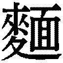
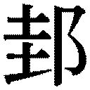

| SUPER三国志 諸葛孔明の陰謀 | |
| 瀬戸龍哉 | |
| (1997) | |
ＳＵＰＥＲ三国志
諸 孔明の陰謀
瀬戸龍哉
―――これはいまから千八百年前、日本では卑弥呼が王であったころの中国の物語である。
ただし、ひとりの英傑が歴史をわずかに変えてしまったパラレルワールドの中でのお話。
【本書に登場する主な人物】
●諸 孔明（しょかつ・こうめい）
......深い義の心、冷静な判断力、未来観をもつ天才軍略家。
●曹操孟徳（そうそう・もうとく）
......軍師として多才だが、非常に冷徹で短気な武帝。
●劉備玄徳（りゅうび・げんとく）
......孔明と並んで三国志の中心人物であり、人一倍正義感が強い名君。
●張飛益徳（ちょうひ・えきとく）
......一本気で情にもろい巨漢で怪力の猛将・三国一の荒くれ者。
●関羽雲長（かんう・うんちょう）
......何よりも儀を重んじ、あご髯をたくわえた威風堂々の大男。
●夏候惇元譲（かこうとん・げんじょう）
......隻眼の猛将と恐れられ、幾多の戦いを生き抜いた百戦錬磨の大将軍。
●趙雲子竜（ちょううん・しりゅう）
......自分が本当に探し求めていた主君・劉備に仕えた義に厚い名将軍。
●孫権仲謀（そんけん・ちゅうぼう）
......少覇王・孫策の後を受け継ぎ、民を思い良政に心を向ける帝王。
●周瑜公瑾（しゅうゆ・こうきん）
......孫権に仕え、前線基地の作戦参謀として手腕を発揮する呉の総司令官。
●張遼文遠（ちょうりょう・ぶんえん）
......さまざまな過ちを犯した過去があるが、仁義の心をもつ剛勇。
●魯粛子敬（ろしゅく・しけい）
......剣術、弓、馬術、あらゆる兵法に優れている軍略家。周瑜の後継者。
●諸 瑾子瑜（しょかつきん・しゆ）
......実兄・孔明に対する兄弟愛や信頼感をもち、理性的に主君に仕える蜀の軍師。
● 統士元（ほうとう・しげん）
......孫権から嫌がられ、自ら孫権のもとを去り、劉備に仕えた天才軍師。
●徐庶元直（じょしょ・げんちょく）
......罠によって母を失ったが、孔明の力で挫折から立ち直った軍師。
●司馬懿仲達（しばい・ちゅうたつ）
......のちに孔明の生涯のライバルとなる天才軍師。
一章 天下三分の計
天才軍略家・諸 孔明の憂鬱 主君を探し求めていた若き日々
孔 明 こと諸 亮 は光 和 四年（西暦一八一年）に生まれた。江 東 の碧 眼 児 ・孫 権 はひとつ年下で、漢の献 帝 （劉 協 ）は諸 亮の一歳年上、のちのライバルとなる司 馬 懿 、字を仲 達 は諸 亮より二歳年上である。
中国では一字姓がほとんどで、諸 氏のような二字姓は当時としてはめずらしいものであった。公 孫 氏や夏 侯 氏などわずかである。
もともと瑯 邪 郡の諸 という県に住んでいた 氏がその源であったが、のちに一族が移住した土地に、やはり 氏一族がいたため、人々はこれと区別するために、諸から来た 氏を諸 と呼んだのだといわれている。
諸 一族では前漢時代に諸 豊 という者がおり、年老いて都の官吏を監察する司 隷 校 尉 という官職に抜 された。豊はその性質剛直で、役人たちをびしびし取り締まり、帝の外戚の侍 中 （官職の最高位のひとつ）まで逮捕しようとしたため、うとまれて、やがて官を解かれ、失意のうちに郷里に帰ったのである。
その後、歴史の中に諸 氏が登場するのは、後漢末期、諸 孔明の父で太 山 郡の丞 （副知事）であった諸 珪 まで待つことになる。珪には三人の男子とひとりの女子があり、長男は瑾 、次男が亮 、すなわち孔明であり、三男は均 といった。
一家の生活は豊かであったが、子供たちの幼いときに、黄巾の乱が起こり、父親は黄巾賊との戦いで重傷を負い、まもなく死んでしまった。失意のうちに母もまもなく死んだため、子供たちは孤児になってしまった。
兄妹は遠縁の諸 玄 を頼ってゆき、世話になることになった。
玄は才能豊かであったため、袁 術 に招かれて豫 章 郡の太守に任じられたため、諸 亮たち兄妹もともに移ることになった。ところが、当時哀術と対抗していた曹 操 もまた、豫章郡の太守として、朱 を派遣していたのである。
ひとつの郡にふたりの太守が赴任したのである。当然両者は戦 になった。
この戦いで諸 玄は敗れてしまい、袁術のもとへ帰ることもできず、やむなく玄の友人であった 州 の劉 表 を頼って身を寄せ、襄 陽 に住むことになったのである。
このとき、長男の瑾は成人しており、江東の孫権のもとに客人として迎えられたが、まだ少年であった亮と均、その妹は、玄とともに襄陽についていったのである。
しかし不幸なことに、養父の諸 玄は、豫章の戦いの古傷がもとで、まもなく死んでしまったのである。
諸 亮と、均、妹は、諸 玄の財産を分けてもらい、裏陽の西北約二十里（約八キロ）の山のふもとに草 廬 をかまえて、兄妹で住むことになったのである。
このとき諸 亮は十八、九歳。聰明な少年は、天下の乱れが民衆をどれだけ苦しめるものか、自身の体験もふくめて脳裏に刻み込んでいた。
暗君・霊 帝 の身勝手さと、政治から目を遠ざけた外 戚 や宦 官 たち、自分の利益と享楽しか考えない著たちが国を支配したとき、民衆は重い税や夫役に苦しみ、ついに民衆は蜂起し黄 巾 の乱が起こった。
諸 亮の父はその戦いで死に、母もまた失った。育ての父である諸 玄もまた、曹操と袁術の領土争いに巻き込まれて、職を失い、やがて死んだのである。
いま、漢帝国は瀕死の状態である。これを救うのは突出した英雄の出現を待たねばならないのである。諸 亮は、英雄が出現したそのときのために、その人を助け、国を安んじ、良政を敷いて万民のために働きたいと思い始めたのである。
諸 亮はこのときから書を読み、勉学にはげんだ。学者の司 馬 徽 や宋 忠 の門をたたき、学べるものはすべて吸収したのである。
とくに孔明が興味をひかれたのは政治学と君主学であった。
なかでも愛読したのは六 韜 の四書であった。六韜とは、あの太 公 望 の作で、兵書である。当時の多くは儒者の説く仁義や礼 楽 が主であって、法家である太公望の説いたのは政治学、君主学、帝王学である。
孔明が後漢末の社会の秩序の乱れた時代に六韜に強くひかれたのは、世の中を変える強い権力者の出現を孔明が望んでいたからである。
その英雄を補佐し、正道を指示することが孔明の理想となっていった。
学問において、諸 孔明はずば抜けた才能を発揮し、司馬徽たち学者をもうならせるほどであったが、孔明の学生時代は長くは続かなかった。
ほかの学生たちが、書物の細部にこだわり、議論することを好んだのに対し、孔明は書物の大要を理解することでよしとした。
孔明はほかの学生の議論のための議論に失望し、二十歳を過ぎたころになると、司馬徽たちの門弟もやめてしまった。
その後は地元の百姓たちと作物を育てながら、天文を調べて日誌をつけ、季節ごとの風向きや、日照り、雨期や乾期を知り、台風やイナゴの発生、川の氾濫などの時期や、その原因、兆しを研究していた。
同窓の学生たちは、孔明を見て思い上がりの青二才としか見ていなかったが、師匠である司馬徽や、年上の学生のなかでも崔 州 平 、徐 庶 、石 広 元 、孟 建 などは、孔明の非凡な才能を認めており、その後も酒を酌 み交わしたり、時節を語りあって付きあっていた。
ある日、崔州平たちと酒を飲んでいた孔明は、酔って、友人たちに言った。
「君たちは、官に仕えたならば、郡の太 守 や州の牧 には出世するだろう」
当時の中国は、国の下に州をおき、その下に郡、またその下に県があった。州の責任者が牧、郡の責任者が太守である。友人たちは喜んだが、崔州平や、徐庶は、
「では孔明、君はどのくらいまで出世すると思うか」
と聞いたが、孔明はただ笑うだけで答えない。
石広元と孟建がしつこく孔明を問い詰めたので、
「そうだな。わたしの才は管 仲 ・楽 毅 に比べておとることはないだろう」
孔明は平然と言ってのけた。
管仲とは、当時の約九百年前の昔、斉 の桓 公を補佐し、九度 諸公と会見して、斉の覇業を樹立させた大政治家である。
楽毅とはその四百年後、燕 に仕えて昭 王の将となり、斉を攻めて、七十あまりの城を落とした名将のことである。
どちらも王を補佐して覇業をなした者たちであり、孔明は自らを王 佐 の才があると言ったわけである。
石広元と孟建のふたりは孔明の大言を大いにあざ笑った。
しかし崔州平と徐庶は、孔明をもっともよく知っていたので、その望みの大きいことに驚きはしたものの、
「孔明なら、もしかするとできるかもしれない」
と思い、孔明の野望の大きさに感心するとともに、あらためて孔明に畏怖の念をもったのである。
とくに徐庶は、管仲や楽毅は孔明の同郷であるために引きあいに出しただけで、徐庶の見るところ、孔明の才は、漢の高 祖 ・劉 邦 （漢を開いた皇帝）を補佐した大政治家・張 良 、字を子 房 や、周 朝 八百年を興した太 公 望 にすら匹敵するものであると密かに思ったのであった。
孔明は、農作業の合間に、よく旅をした。妹や弟には行き先も告げないため、ぶらりとした気まぐれな旅に見えたが、孔明には理由があった。
近隣諸国に川の氾濫が起これば、その理由を調べ、洪水をくい止めるための土木作業を見学に行き、名君がいると に聞けば、城下に行って、民衆の評判や反応を聞いてまわっていたのである。
孔明は学問において秀才であったが、きわめて現実的な男でもあった。学問がその実践的応用なくしては役立たないことをよく理解していた。
実践的応用とは、地理や風土の知識であり、土木、農業、工業の技術の発達を理解し、用いることである。
こうした小旅行は、孔明の知識をより実践的な学問へと昇華させたのである。
自らを管仲・楽毅に比べた孔明であったが、彼の学問が進めば進むほど、悩みは深かった。管仲・楽毅のふたりがその力を発揮できたのは、桓公や昭王のような名君がいたからである。
王佐の才も、肝心の主君がいなければ、無用のものである。
孔明はいまだその主君を見つけられずに、あせり始めていた。
孔明は二十六歳になっていたのである。
孔明の結婚 伴侶として選ばれた遠い異民族の娘
孔明の家計は、諸 玄の遺産でまかなわれていたが、けっして豊かだったわけではない。兄の瑾は江東の孫権のもとでようやく頭角を現し始めていたが、まだ客分扱いであったため、弟妹を呼んで面倒をみるほどではなかった。そのため、草廬の家事一切をとり仕切っていたのは孔明の妹だった。
孔明の妹は美人で、働き者。なにより、孔明や均と仲がよかったので、縁談は多かったが、断り続けていた。
しかし、適齢期も過ぎようとしていたので、孔明は妹をさとして、人物鑑定家の大家 徳 公 の子、 山 民 に嫁がせたのである。
一家の主婦を失って、孔明と均の兄弟は、翌日から家事がとどこおるようになった。孔明は知人たちの勧めで、嫁探しをすることになった。
孔明は身の丈八尺（約一八四センチ）の長身で、面長の美男子であった。学問がありながら、地元の民百姓とまじわり、土仕事もいやがらず、子供たちにも文字を教え、時節を歌にして歌って聞かせるなど、人気者であった。土地の若い娘にとっては、いわば憧れの的であった。
遠方からも、縁談があり、働き者の美女が名乗りをあげたが、孔明はうんと言わなかった。
友人の崔州平などは、
「均も不自由だろうし、そう高望みせず、そろそろ身をかためてはどうか」
と助言したが、孔明は、
「わたしは何も、美女を求めていて縁談を断っているのではない。夫婦として、ともに生涯を語りあっていける伴侶を求めているのだ。これまであった女たちは誰もが美しく、働き者で情も厚いが、ともに語り合えるものではなかったのだ」
孔明の言葉に崔州平は驚いて言った。
「孔明とともに語りあえる女など、天下広しといえどもまずいまい」
しかしこの は広まり、 南 の地の名士・黄 承 彦 が娘をともなって、孔明の草廬を訪れた。その娘を見た村人は、陰でその容貌を笑った。
娘は身長七尺五寸（約一七三センチ）あまりもある男をもしのぐ大女。色は黒く、鼻は天狗のよう。髪は黄色でちぢれているという、とんでもない醜 女 であった。
黄承彦は孔明に娘を見せて言った。
「この娘、わたしの本当の娘ではない。見てのとおり、遠い異民族の娘で、父親や従者と一緒に絹の道を渡ってやってきた。父親は学者であったが、病を得て、十年ほど前に亡くなった。この娘は孤児となって、長 安 の都で見せ物に売り飛ばされたところを、わたしが買い求め、養子にいたしたのだ。当時はまだ十五歳ほどであったが、一年もしないうちに、言葉を覚え、書を読み、詞を吟ずるまでになった。その才は計り知れなく、わたしにも想像ができない。こうして成長したが、この風体では嫁にやることもかなわず、ふびんに思っておったところ、諸 先生が才女をお探しと聞き、こうして連れてまいったのだ。いかがかな」
孔明は興味をそそられ、ふたりだけで話したいと、均に黄承彦を別の部屋に招かせて、もてなさせた。
孔明は娘とふたりだけになると、不思議そうに聞いた。
「なぜ、そのように顔を黒く塗っているのか」
「わたしは異国の人間。ただでさえ醜いので、目立たぬよう、人前に出るときはたとえ義父であっても、墨を塗っているのでございます。こうすれば、誰もが一目で目を背けますので、じろじろ見られて、生き恥をかかないですむのです。わたしが醜い素顔を見せるのは夫だけと心に誓ったのです」
娘は大きな体を小さくして、顔は伏せたままである。娘の答えが気に入った孔明は、続けて聞いた。
「そなたの父親は学者であるといったが、何を研究していたのか」
「天文が中心でしたが。漢の国へ来てからは、生活の糧を得るために、言葉を話して動くからくり人形や、馬や牛がいなくても動く馬車のおもちゃなどを作っておりました。子供ながら、わたしもよく手伝っておりました」
娘の言葉に、孔明は引き込まれた。
「して、それはどのようなからくりなのか」
「魚の皮を干して硬くし、それをばねにしたぜんまいを動力にして、歯車を回して動くのです。言葉を話すのは、銅の針をたくさん用意し、棒にさします。その棒を回すことで小さな鉄のバチを弾かせます。すると、弾かれたバチの長さによって違う高低の音を出すため、その音をうまく並べてやることで、短い言葉をしゃべっているように聞こえるのです」
娘の理路整然とした説明ぶりに、目を閉じて聞いていた孔明は、娘の手をとって、
「そなたこそ、わたしが探し求めていた嫁だ。どうか、わたしの妻になってください」
と拝礼して言ったので、娘は驚いた。
「この孔明と生涯をともに生きていただきたい」
「もったいのうございます」
娘は恥じ入ってますます体を小さくして言った。
孔明はやさしく微笑みながら聞いた。
「して、そなたの本当の名は何と申す？」
「摩 漓 阿 と申します」
孔明は黄承彦に娘との結婚するゆえを知らせると、ささやかな宴を開き、結婚式とした。
翌朝、黄承彦を泣いて見送った摩漓阿は、孔明の前を辞すと、湯を浴び、顔の墨を落として戻ってきた。その姿を見て孔明は目を見張った。
墨を落とした摩滴阿の肌は透けるように白く、朝日に黄金の髪が輝き、瞳は晴天の空のごとく青く、頬と唇は朱を落としたよう。意志の強そうな眉、聰明な額、薄ものの着物から透けてみえる均整のとれた体は、まるで天女のようであった。
「そなたは自分のことを醜いと言ったが、わたしには神が使わした天女のようにしか見えぬ」
「夫にだけでもそう思っていただけましたら、そんなうれしいことはございません」
摩漓阿は、孔明の胸に顔をうずめながらささやいた。
こうして孔明は妻を得た。摩漓阿は黄 夫人と呼ばれ、こまめによく働き、孔明とよく話し、笑いあった。
何より孔明を喜ばせたのは、摩漓阿の父が残したさまざまなからくり人形の設計図や、天文の書物だった。
ふたりは仲がよかったが、摩漓阿は孔明以外の人に会うときや外出するときは、あいかわらず顔に墨を塗っていた。
そのため、孔明の友人たちや村人は、
「孔明の嫁選びのまねはすまいそ。承 さんのおかめを押しつけられるぞ！」
と歌ってはやしたてたのである。
しかしふたりはいっこうに気にする風もなかったので、冷やかしたり、馬鹿にする者はやがていなくなった。
孔明は摩漓阿の父が残した設計図をもとに、摩漓阿の協力のもと、からくり人形を作ってみた。その高度な技術から学んで、摩漓阿とさまざまな道具や武器を考案していった。
ある夜、孔明の家に友人がやってきた。客人はおなかがすいていたので摩漓阿は を作ろうとしたが がたりない。友人たちは食事をあきらめかけたが、いくらも待たないうちに、たくさんの麺が運ばれてきた。いぶかしがった友人たちに孔明が厨房に案内すると、麦を切り、粉にする臼 がひとりでに動いていた。
これこそ孔明と摩漓阿が考案した自動臼であった。
孔明は摩漓阿を得て幸せだった。孔明の頭の中では天下の計も完成しつつあった。
だが、望んでいる主君とはいまだ出会えないでいた。
孔明の決断 中国全土を安んじ、仁政を敷く裁量
単 福 こと徐 庶 が、曹操の計にかかって、劉備の軍師をやめ、母を助けに許 都 にいく途中、諸 亮の草 廬 を訪れた。
徐庶は諸 亮 に自分が曹操のもとへ降るいきさつを話し、自分のあとに、劉 備 の軍師として仕官してほしい旨を話した。
劉備と聞いて、諸 亮の心はわずかに動いた。劉備が明君であることは聞いていたし、漢の皇帝から皇 叔 （皇帝の叔父）と呼ばれるほど慕われている。
ただ、劉備は現在 州 の劉 表 の客人の身分であり、自分の国をもたない流浪の将軍である。曹操から命を狙われており、その存在はいつ消えても不思議のないはかないものであった。
孔明から見れば、劉備を主君と仰ぐことは、あまりにリスクの大きい けであった。
孔明は徐庶に即答は避け、その夜は徐庶を草廬に泊まらせ、考えをまとめた。
徐庶は常々、真の英雄に仕えたいと孔明たちに話しており、長年探し求めていてかなわず、ようやく劉備に仕官した。
徐庶のような才能ある賢士が劉備のあやうい立場を知って、それでもなお、仕官したということは、劉備が並々ならぬ人物であるということでもある。
孔明の心は散々に乱れたが、結論を出すにはもうひとつ、諸 孔 明 自身の側に問題があった。
それは孔明の年齢がまだ二十六歳と若いことである。
徐庶は孔明より十歳上であった。
徐庶と劉備との仲はまるで兄弟のように親しかった。それはふたりの年齢が近いことも影響したのではないか、少なくとも徐庶の年齢は劉備の信頼を得るにたるものだったのだろうと孔明は思った。信頼されたからこそ、徐庶は曹 仁 の八 門 金 鎖 の陣をいとも簡単に破り、三万の軍勢を壊滅させ、なおかつ樊 城 をとった鮮やかな手並みも発揮できたのである。
孔明はけっして徐庶に戦略家として劣るとは思わなかったが、若く、経験のない自分を五十歳に近く、何十と戦場を駆けめぐった、たたきあげの劉備が重く用いるかどうかは自信がなかった。
これが江 東 の孫 権 なら、孔明よりひとつ年下である。孔明が仕官したとしても問題はないだろう。
孔明はあらためて時節を思った。
天下の趨 勢 は、帝である献 帝 を擁した曹 操 に傾いている。最大勢力であった、袁 紹 ですら曹操に敗れ、その子供たちも皆殺しにされた。
現在、東に孫権がいて、西に馬 謄 ・韓 遂 連合軍がおり、中央の 州には劉表がいる。漢 中 に張 魯 がおり、南の蜀 には劉 焉 のあとをついだ劉 璋 がいる。
天下は散々に分かれ、一見、群 雄 割 拠 のように見えるが、じつは漢の中心である中 原 を制した曹操にとって、どれも一地方の勢力であって、手強い相手ではない。
人口も兵力も他を圧倒している。
浜中の張魯は宗教家であり、漢中を得たこと自体で満足している器の小さな人間。曹操が攻め入れば、切っ先を交えることもなく降参するだろう。
西 涼 の馬謄・韓遂連合軍は、献帝を救う目的で、打倒曹操に燃え、勢いはあるが、地の利は守るによく、攻めるに向かない。
馬謄は忠臣であるために、帝の詔 を自由に発動することができる曹操の策略にどこまで抵抗できるかは疑問であった。
韓遂が参謀だが、軍事のみの参謀で、心を攻められると弱い男である。曹操の参謀である、荷 ・程 ・筍仮のしたたかな著たちがそこを見逃すはずもない。
いずれ馬謄・韓遂軍は一反乱軍として曹操に鎮圧されるだろうというのが孔明の見方だった。
州の劉表は野望のない男で、天下をとることよりも自分の跡取り問題で悩んでいるし、何よりも病に伏していて、その命も危ない。子供たちは徳を重んじているが、君主としての器がない。多くの人材と兵力をもっているとはいえ、強い君主のいない 州はまとまりを欠くため、攻められたとき、ひとたまりもない。
蜀の劉璋は、父親に比べて才なく、人はいいが君主として暗愚である。嶮 岨 な要害の地の利に守られているが、とても天下を狙うものではない。 州、漢中が曹操に征服されれば、自身の身の安全を守るために、曹操に降ること火を見るより明らかである。
唯一、曹操に対抗しうる存在は、江東の孫権であった。
ただし、孫権は、死んだ孫権の兄の孫策や、父の孫堅のような、敵地に攻め入って、領地を広げるといった武帝タイプの男ではない。
長江という自然の要害に守られた江東の地と同じように、守りに向いた男なのである。三代目ということも影響しているだろう。そのかわり、張 昭 ・張 紘 という二大内政のベテランがついており、内政には積極的で、仁政を敷き、民を安んじている。孫権には決断力もあり、臣下の進言も素直に聞く耳をもった男である。
孔明は、もしいま仕えるなら、兄の瑾と同じように、孫権しかいないと思っていたのである。しかし、孔明がそのことを実行に移さなかったのは、孫権が、対曹操の旗を積極的にかかげない気弱さであった。
内政タイプの人間は、えてして状況判断のみおこなって、行動に出ないことがある。そこが孔明には不満だったのである。
孔明の目標は、あくまで強い君主を助けて、再び中国に統一した朝廷をつくり、中国全土を安んじ、仁政を敷くことである。孔明は、孫権にはその器を見なかったのである。
孔明はまんじりとすることもできず、十年後を考えてみた。
おそらくそのころは、曹操と孫権の二大勢力が中国を二分していることだろう。
といっても、孫権が、思いきった西伐をおこない、 州・漢中・蜀をとって曹操の勢力に拮抗した場合である。
そうでなければ、江東のみの孫権は、やがて曹操に追い詰められて滅びるだろう。
その可能性はかなりの確率であると孔明は思う。
そうなれば、天下は曹操のものとなり、やがて、献 帝 を廃し、曹操が皇帝の位につくだろう。 "治 世 の能 臣 乱 世 の奸 雄 （安定した世の中においては優秀な臣下であり、乱世になると悪がしこい英雄となる）"といわれた曹操の野望はそこで成就するのである。
自らも認めているとおり、曹操は好雄である。曹操が民をいたわるのは、民なくして、自分の安定した地位や贅沢な暮らしを守れないことを知っているからであって、けっして民のことを思ってのことではない。
そこが、自滅した袁術や呂布とちがうところである。
彼らは、自分の栄華を極めるために、民百姓のことをかえりみなかった暗君であった。
曹操はもっとしたたかな政治家なのである。結果として、天下の英雄は曹操ということになる。また、曹操のような者でなくては天下統一の大業は成せないことは孔明にはわかっていた。
しかし、帝を擁していることをいいことに、天下に号令をかけながら、その肝心の帝をないがしろにして栄華を牛耳ろうとしている曹操のやりかたは、董 卓 や、李 ・郭 氾 と同じであって、逆賊であることに変わりはない。
孔明は曹操の謀略による見かけだけの英雄を好まない。
まして、叔父の諸 玄 を死に追いやった曹操に仕官し、助けることなどできなかった。
孔明の主君選びは、反曹操の旗印を掲げる英雄でもなければならなかったのである。
そんな人物は孔明のなかではそれまで西涼の馬 謄 だけだった。ところが、徐 庶 の助言で劉備の名があがったのである。
劉備は自身の栄華を考えず、民百姓のことを一番にし、義を重んじる。主君としては申し分のない人物である。
そのため、関羽・張飛・趙雲といった名将が集まり、簡 雍 、徐州の孫 乾 ・糜 竺 ・糜 芳 ら文官たちは国を捨ててまで劉備と行動をともにした。
徐州の陶謙などは国まで譲ろうとし、袁紹や曹操までもが自分の配下にほしがった。 州の劉表も劉備と初対面で、意気投合し、義兄弟の杯を交わしたほどである。
劉備の人徳は、おそらくいまいる将軍のなかで一番である。
ただし、いまの戦乱の世は義が踏みにじられ、悪逆非道がまかり通るのである。
劉備は明君であるがゆえに裏切られ、仁義のはざまでチャンスを失ってきたのである。
しかも、劉備にはあふれる義と並外れた武力があるにもかかわらず、戦略がないため、常に敗戦を重ねてきたのである。
劉備に必要なのは徐庶や孔明のような軍師であり、政治家であった。
そのことを劉備がどこまで肝に銘じているのか孔明には計りがたかった。
しかし、孔明の迷いは次の考えで吹き飛んだ。
「では、誰にも仕えずに、わたしはこの草廬で天下を口先で論じ、何もしないで逡巡するだけの生涯を終える存在なのか。それではあまりにもむなしい」
夜が白々と明けるころ、孔明の考えは決まっていた。
徐庶が孔明に別れを告げにやって来た。
「近々、劉皇叔はそなたのもとを訪れるであろう。そのときは、わが主君に仕えて、君の才を存分に生かしてはもらえないだろうか」
孔明は声を荒げて言い放った。
「そなたは、自分の主君と仰ぐお方を見つけながら、見捨てて去って行く身、その尻ぬぐいをわたしにさせるつもりか！」
徐庶は一言もなく、赤面して去ろうとした。諸 亮は別れ際、徐庶に手紙を渡して言いそえた。
「もし、そなたが許都に行って、老母と安泰に暮らせるようなら、この手紙は読まずに焼き捨ててほしい。もし、それがかなわぬ事態になったなら、この手紙を読んで、参考にしていただきたい」
諸 亮は言い終えると、草廬の奥に入ってしまった。
徐庶は孔明の意図がわからぬまま、手紙をしまい、馬に乗ると許都に急いだ。
三顧の礼 孔明に命を捧げる側近たちの誓い
劉 備 は関 羽 ・張 飛 をともなって孔明の草廬をたずねる途中、数人の農夫が畑を耕しながら歌う声に耳をとめた。
蒼 天 は天 蓋 のごとく
陸地は碁盤に似たり
世人には黒 白 の分かちありて
往来して栄 辱 を争えり
栄える者は自らやすらかに
辱 めらるるは定めて碌 碌 たらん
南 陽 に隠者あり
高眠して伏せどもなおあかず
（漢王室はもはや車の傘のようなもの、大地は群雄が己の栄華を求めて勝手に争う。南陽に住む隠者は、争いがすむまで寝ているが、いつまで待っても争いは終わらない）
劉備は農夫に、誰がつくった歌かたずねた。
「この山の一帯を臥 竜 岡 と申しますが、その岡の手前にあります草ぶきの家に住む臥竜先生がおつくりになった歌でございます」
劉備は礼を言うと、孔明の草廬に急いだ。
劉備がいなくなると、農夫のひとりが傘を目深にかぶったもうひとりの農夫に聞いた。
「臥竜先生、これでよろしいのですか」
「よくやってくれた。礼を言います」
その農夫は孔明であった。
さて、劉備が草廬に着くと、ひとりの童子が出てきて、劉備の名を聞いた。
「わたしは、漢の左 将 軍 宜 城 亭 侯 ・領 豫 州 の牧 、皇 叔 劉備、諸 先生にお会いしたい」
「そんな長い名前では覚えきれません」
劉備は少し考えたあと、
「では、劉備が来たと伝えてください」
「先生は今朝がたお出かけになりました」
「どちらへお出かけか」
「行き先はいつもおっしゃらないのです」
「では、いつお戻りか」
「それも決まっておりません。四、五日のこともあれば、半月戻らないこともあります」
劉備が落胆していると、張飛が言った。
「いないのなら、しかたがない。帰りましょう」
「しばらく、お待ちしよう。すぐにお戻りになるやも知れぬ」
「やはり、一度帰って、人に在宅を確かめてから出直したほうがようござる」
今度は関羽が言ったので、劉備は童子を呼んで言った。
「では、先生がお帰りになったら、劉備が訪ねて来たとお伝えください」
劉備たちはむなしく帰っていったが、その様子を孔明は、草廬の前の竹藪に隠れて見ていたのである。
数日して、劉備は人をやって孔明の在宅を確かめると、孔明はいるという。劉備はただちに支度をすませると、関羽・張飛を再度ともなって、草廬に向かった。
張飛はあからさまにいやな顔をした。
「たかが、田舎の学者風情に、なにも兄者が出向いてやることはない。誰かをやって呼びつけたらいいじゃないか」
「翼 徳 （張飛の字）は"賢にまみえんとしてその道をもってせざるは、その入らんことを欲してこれが門を閉ざすごとし"と孟子が言われているのを知らんのか。孔明殿は天下の大賢者。そんなことができるものか」
劉備がしかったので、張飛はしぶしぶついていった。ときは十二月。雪が降り、寒風吹きすさぶ。やがて吹雪になった。
「兄者、戦ですら、こんな天気のときは引き揚げるもの。新野に引き揚げて、雪のやむのを待つほうがいいのじゃないか」
張飛が不満をもらしたので、劉備は、
「孔明殿にわたしの誠意を知ってほしいからこそ、こうして行くのに、寒いのがいやなら、ひとりで帰れ！ 雲 長 （関羽の字）とふたりで行く」
「この俺が寒さなんか気にするもんか、兄貴がくだらないことをやっているのを見ていられなかっただけだ。ふたりがそれでも行くというなら俺だって行くよ」
三人が草廬に着くと、先日の童子がいた。
「先生はいらっしゃるかな」
「お部屋で書をお読みなされています」
劉備は喜んで、草廬に入ると、草堂にひとりの若者が詞を吟じていた。
風凪は千 尋 を天 翔 る
しかして霧のない山には住まず
賢士はひと知れず隠れ住み
英雄にあらざれば仕えず
吾はわが廬を愛し
書を読みて天のときを待つ
劉備は歌い終わるのを待って、中に入り、挨拶をした。
「かねてより、先生をお慕いしておりましたが、お目にかかる機会にめぐまれずにおりましたが、本日は風雪をおかして参上したかいがございました。お目にかかれて光栄にございます」
若者は礼を返すと、静かに言った。
「将軍は、兄をおたずねになったのでしょうが、わたくしは臥 竜 の弟の諸 均 でございます。兄は昨夜、崔 州 平 殿に誘われて、遊びに出かけました」
「またもお会いできなかったか。して先生はいずこに」
「小舟を浮かべて江湖に遊ぶこともあれば、僧侶や道士をたずねて山中に入ることもあります。また、村里に友人をたずねたりと、どこといって行方さだまりませぬ」
「先生とやらがいないのならさっさと帰ろうじやないか」
張飛が口を挟んだが、劉備は少しでも孔明のことを知ろうと諸 均に聞いた。
「臥竜先生は六 韜 三 略 を極め、日々兵法をお学びとか聞きおよんでいますが、まことでございますか」
「存じません。兄もおりませんのに長くおひきとめするのも失礼ですので、他日こちらからおうかがいいたすように申しておきましょう」
「先生においでいただくなど、滅相もございません。身どもが日をあらためて参上つかまつります。その前に身どもの志を申しあげたく存じますれば、紙と筆をお貸しいただきたい」
諸 均が墨と硯 を持ってくると、劉備は一気に書きあげた。
備、久しくご高名を慕って両 度 参上つかまつりましたが、お目にかかることかなわず、むなしくたちかえること残念に存じます。
それがし、漢皇室に連なる者として、朝廷の力衰え、国に法なく、群雄国を乱し、悪党が帝をあなどるありさまを見るにつけ、魂も張り裂けんばかりの思いです。
国を正さんとの志はありながら、非才のため、われに策なく、願わくば、先生の仁と忠義の心をもって、太 公 望 が大才を述べ、張 子 房 が策略をほどこされんこと、天下国家の幸い、これにすぐるものはありません。
後日、斎 戒 沐 浴 して参上いたしますので、その際はご引見たまわりますれば幸甚に存じます。
劉備は手紙を諸 均に託すと、別れを告げ、くりかえし自分の誠意を伝えてくださいと頼んだ。劉備は帰りざま、何度も臥 竜 岡 をふり返り、なおもあきらめきれぬ様子であった。
諸 均は劉備を見送ったあと、草堂の奥にいる諸 亮に心配そうに言った。
「劉皇叔がああも誠意を尽くされているのに、なぜ兄者は、いつも出かけているといって、お会いなさらないのですか。わたくしが見るところ、劉皇叔は天下の英雄、仁徳の士です。こんなことを続けていては、皇叔に見放されてしまうのではないでしょうか」
「わたしとて、胸が張り裂けんばかりなのだ。しかし、これはわたしが劉皇叔にお仕えするとしたら、どうしてもやらねばならぬことなのだ。このことがもとで、仕官がかなわぬのなら、わたしに悔いはない。均、もう何も言うな」
諸 亮は、目を閉じたまま、しぼり出すように諸 均に言ったのである。
劉備は三 度 、孔明をたずねていこうとしたところ、関羽が馬の前に立ちはだかって言った。
「兄者が二度も出向かれたことすら度が過ぎると思いますに、三度訪れるなど言語道断にございます。だいたい諸 亮と申す者、名のみ高く、まことは何の学問もない輩 なのかも知れません。会うに会えなくて、逃げ隠れしているのでしょう。あのような者に惑わされるのはもうたくさんでござる」
「雲長、それはちがう。斉 の桓 公 は、東 郭 の野人に会おうとして四度むなしく帰り、側近はとめたが聞かず、五度目にようやく会えたというではないか。ましてわしが会おうとしているのは天下の大賢、三度が十度でもわしは行くつもりじや」
「兄者、それはそれだ。だいたいあの田舎者が大賢人のはずがない。もう兄者が行くことはない。むこうから来ないなら、俺が縄でしょっぴいてきてやる！」
今度は張飛が言って、まさにひとりで行こうとしたところ、劉備が怒鳴って、
「おまえは周 の文 王 が太 公 望 に会ったときのことを知らないのか。文王が太公望にあったとき、釣りをしていた。文王は邪魔をしないように日が暮れるまで声もかけずに待ったというではないか。文王ですらこのように賢人を敬ったのに、無礼にもほどがある。もうおまえはついてくるな！」
「兄者たちが行くというのに、俺が行かないわけにはいかない」
「一緒に行くというなら、けっして無礼は許さんぞ！」
張飛は劉備に誓って、ついていくことになった。
一方孔明は、いっときも草廬を離れず、劉備の三度目の来訪をいまかいまかと待ちわびていた。劉備たちが草廬に向かっているという知らせを聞いて、一世一代の大芝居の準備を始めた。まず、諸 均を草廬の手前一里のところに立たせ、劉備たちと出会うようにしむけた。
劉備は諸 均の姿を見かけると声をかけた。
「ご令兄はご在宅か」
「先ほど帰ってきたばかりですから、今日はお会いになれましょう」
そう言うなり諸 均は、立ち去ってしまった。
その様子を見ていた張飛は、
「なんて無礼なやつだ。案内もせずに行ってしまいやがった」
「人にはそれぞれ用がある。無理を言うな。それより、今日は先生に会えるぞ」
劉備は喜びいさんで草廬に馬を飛ばした。
物陰でその様子を見ていた諸 均はそっと劉備の後ろ姿に拝礼してつぶやいた。
「まことの明君。どうかご無礼をお許しください。これから起こることにもお腹立ちなされず、なにとぞ兄をその広い心でお迎えくださいますよう」
草廬の前に着いた三人は、いつもの童子に、諸 亮への取次を頼んだ。
「おいででございますが、ただいま昼寝の最中でございます」
「それでは、お起きになるまで待たせていただきましょう」
劉備は関羽・張飛を門前で待たせ、中に入ると、居間で粗末な衣服を着た男が背中を向けて寝ていた、劉備はいっときも早く孔明の顔を見たいと思ったが、孔明は寝返りすらうたない。はやる心を何とか抑えて、そのまま庭に立ったまま孔明が起きるのをじっと待っていた。
諸 亮のほうは、劉備の視線を感じながら、身動きもできず、じっと寝たふりをしていた。
「わたしが起き上がるまで、皇叔が待っていてくれたら、次の段階に入る。わたしが起き上がる前に皇叔が怒り出したり、起こしにきたら、この話はなかったものになる」
孔明は祈る気持ちでじっと寝ていたが、冷汗で全身びっしょりになっていた。
一時間たち、二時間が過ぎようというとき、門前で張飛の声がした。
「なんだ、あの野郎！ 兄貴を庭先に立たせたまま自分は汚ねえ格好で寝てやがる。もうかんべんならねえ！」
張飛が中に入ろうとするのを関羽が声をかけた。
「弟！ どうしようというのだ」
「知れたこと。この家に火をつけるのさ。そうすりゃあの野郎も寝てられまい！」
「翼徳！ 少しは兄貴の気持ちを考えろ！」
関羽が張飛を押さえつけたため、再び草廬に緊張した静寂が戻ってきた。
さらに二時間がたった。
諸 亮はゆったりと起き出すと、一詞口ずさんだ。
そしてやっと劉備に気づいたかのように、童子を呼んでたずねた。
「誰か俗人がやってきているのか」
「劉皇叔が、長らくお待ちでございます」
「なぜそれを早く言わぬ。着替えをせねばならぬ」
そう言うと奥に入り、一時間ほどして、孔明は出てきた。身の丈八尺（約一八四センチ）の長身、くっきりとした目鼻だちに口髯とあご髯を薄くたくわえ、頭に綸 巾 （青の組み紐でつくった頭巾）をいただき、身には鶴 （道士の着物）をまとい、手には白 羽 扇 を持っている。その姿はただただひょうひょうとしてなおかつ神仙のごとくであった。
劉備はその姿を見るなり、拝礼して言った。
「 郡 の愚夫、先生のご高名を耳にいたし、二度ほどおうかがいいたしましたが折悪 しくお目通りかなわず、手紙を書き残しました。ごらんいただけましたでしょうか」
「当方こそ南陽の野人、うかつなため、たびたびのご来訪をたまわり、いたく恥じております」
孔明は劉備を草廬に招き入れると、童子に茶を持ってこさせ、一口飲んで言った。
「皇叔の書面を拝見し、将軍の民を憂い、国を憂うお心、身にしみてあいわかり申した。しかし、それがしは若年にして才なく、何のお役にも立てぬと存じますが」
「徐 庶 殿や司 馬 徽 殿ほどの方々がありもしないことを言われるはずがありませぬ。どうぞお見捨てなく、教えをいただきたい」
「徐 元 直 殿や司馬徽殿は世にも優れた人物でござる。わたしはたかが一介の田舎者。将軍はなにゆえ、玉を捨てて石ころを拾おうとなされるのか」
「孔明殿は天下を救う大才をもちながら、むなしく山野に朽ち果てるおつもりか。なにとぞ天下の民に思いを馳せられ、無恥なそれがしをお導きくだされ」
孔明はわざと苦笑してみせて言った。
「では、将軍のお心をお聞かせくだされ」
「漢室傾き、奸 雄 天命を盗みおる今 日 、それがし天下に大義を示さんと非力ながらことを起こすも、知力たりず、何事もなしえないありさま。先生の才によって、それがしのゆく道を開いていただき、天下の災いを除かんと願っておるのでございます」
孔明は胸がふさがる思いで断ってみせた。
「それがしは長らく百姓暮らしをいたしておりましたゆえ、とてもお役には立てかねましょう」
「先生のご助力なくば、人民の苦しみはむくわれないではありませんか！」
劉備は言い終わらないうちに、泣きながらその場に倒れてしまった。
孔明は劉備の誠意あふれる言葉に胸がつぶれ、ついに我慢ができなくなった。
「将軍お立ちください。それがしごとき弱輩にそこまでのお言葉、もったいのうございます。将軍がお見捨てなくば、この孔明、犬馬の労も惜しみません」
孔明は拝礼して劉備に誓った。
「それでは、それがしにお力をお貸し願えるのですね」
劉備はいたく喜んで、礼を述べると、孔明に教えを乞うた。
孔明は、胸のうちを吐き出すがごとく、劉備にその道を説いた。
「董 卓 の反逆があってより、天下の群雄が次々と蜂起しました。そのなかで、曹 操 が袁 紹 に遠くおよばぬ戦力でありながら、破ることができたのは、たんに天のときを得ただけでなく、人の謀 があったからです。
曹操はいま、天子をたて、百万の大軍を擁し、諸公に号令をかける身、とうていこれに対抗できる者はありません。
孫 権 は江 東 に根を張ること三代にわたり、長 江 をはじめ要害に守られ、人民はなついています。これは、味方とたのみ、けっして敵とするべきではございません。
一方この 州 は、北は漢 ・ の川をひかえ、南海に通ずる便もあり、東は呉 会 に連なり、西は巴 蜀 に通ずるわが国の要 となるところでございます。
こここそ武略によって治めるところでございますが、並の者に守り通せるところではございません。しかし、この地こそ天が将軍に与えたもうたものとそれがしは思います。
益 州 は、要害に囲まれ、沃 野 千 里 にわたる天上の地にございます。高 祖 ・劉 邦 もここより起こって王 覇 の道を歩まれました。
いま益州の牧 ・劉 璋 は暗弱にして、民は豊かで、国も富んでいますが、これをいつくしむすべを知らず、知能の士は明君を切に求めています。
主公（劉備）は皇室に連なり、その信義は天下に鳴り響き、英雄・賢者を求めておいでですが、もし、 州と益州にまたがって、国をとり、西と南の諸蛮族を手なずけ、そとは孫権と同盟を結び、内政を整え、天下のときを待って、ひとりの大将に 州を与えて宛 城 より洛 陽 をつかせ、主公自ら益州の軍勢を率いて秦 川 から打って出ますれば、人民はこぞって主公をたたえ、迎えるでございましよう。
そうなれば、主公の大業はなり、漢室復興もかないましょう。
これがそれがしが主公に献ずる"天 下 三 分 の計"にございます」
孔明は一気に話し終えると、童子に地図を持ってこさせ、部屋の中央の壁に示した。
「これは益州を含む、西 蜀 五十四州の地図でございます。主公が天下の覇道をお求めなら、北は曹操に譲り、南は孫権に譲り、主公はまず 州をとって、まずは足掛かりとし、その後西蜀をとって天下を三分し、三国鼎 立 の形をつくります。
そして孫権と同盟を結んで曹操をおびやかし、機をうかがって曹操を討ちますれば、孫権はおのずと主公に降りましょう」
劉備は孔明の策を聞くや、
「これこそわたしが求めていたものです。まるで、雲が晴れ、青空が見えたような気持ちです。しかし、 州の劉表、益州の劉璋ともに、わたしと同じ漢皇室の者ゆえ、それを奪うことは心苦しく、できかねるのですが」
「それならばご懸念にはおよびません。それがし夜ごとの天文を見まするに、劉表は天命尽き、その命は長くありません。劉璋は大業をなせる人物にあらず、主公の威光によって、ゆくゆくは、国を主公に譲る運命にございます」
劉備はこれを聞くと膝をついて、拝謝した。
その夜、劉備と関羽・張飛は草廬に泊まった。夜が更けて、諸 均と摩 漓 阿 が孔明の寝所にやってきて問うた。
「兄者はなぜ、あのように皇叔を何度も草廬に足を運ばせ、なおかつぞんざいに扱われたのですか」
「それは、いくら主公が仁徳の士とはいっても、弱輩のわたしを見れば、軍事を任せるのは不安になること明らかであった。主公に迷われては、わたしに軍の大権を任せきれまい。
関羽・張飛・趙雲といった歴戦の将軍たちを使うためには主公がわたしに全幅の信頼をおいてもらわなくては困るのだ。
初めて主公がわが草廬を訪れたとき、主公は、自分の肩書きを長く述べた。あれは主公が肩書きでわたしを与 しようと思っていた証拠である。
二度目にこられたときは、わざわざ吹雪の中であったが、均にそのことを恩に着せるところがまだあった。
しかし、主公はなかなかわたしに会えないことで、徐々にわたしに会うことのたいへんさが、わたしの人物への評価と重なってしまい、主公の中で、わたしの虚像は大きくなっていったのだ。
そのため、三度目にわたしが会ったとき、主公は何の肩書きも述べず、" 郡の愚夫"ともっともへりくだった言い方をされたのだ。
主公はわたしにもったいをつけられればつけられるほど、わたしの存在を過大評価することになり、実際に会えたときには、わたしの弱輩であることも気にならず、真に心を開いてくださったのだ。
わたしの主公への態度はたいへん礼を失しており、臣下の身となったいまではその罪、万死に価することなれど、主公の大業を補佐し、天下を目指すには小さな治療であったと思う。
このことは死んでも主公には話すつもりはないが、わたしは一生罪の意識にさいなまれるであろう。
主公に王覇の道を歩んでもらい、その手助けを死んでもやり遂げることで、この罪を償いたいと思っている」
摩漓阿と諸 均は孔明の深慮に驚くとともに、その覚悟の大きさに感激した。そして、ふたりはあらためて孔明に、命を捧げて仕えることを誓ったのである。
ときは建安十二年（西暦二〇七年）、このとき諸 亮と双子の弟の均ともに二十七歳、摩漓阿二十五歳、劉備四十七歳、関羽四十五歳、張飛四十二歳の春であった。
水魚の交わり 王覇の道を進む天命をみた孔明
翌日、劉備と孔明一行は新野に戻り、孔明は民兵を募り、兵力を一万人にまでにもっていき、兵の訓練を始めた。
そして夜は連日劉備と語らい、それも深夜におよぶと、ともに横になりながら話し、そのまま寝床をともにするといったたいへんな仲のよさであった。
かつては、関羽や張飛がそうして劉備と語らったものだったので、関・張はおもしろくない。さっそく劉備に談判に行った。
「孔明はあの年で、さほど学問があるとは思えぬ。兄者は奴をかいかぶり過ぎるように思える。やつはまだ、何の功績もないではありませんか」
「わしが孔明を得たのは、魚が水を得たようなもの。そなたたちが口を挟むことではない」劉備が強くふたりに言ったので、関・張はますます孔明に嫉妬し反感をもったのであった。
しかし孔明は気にするふうもなく、曹操と孫権の動きを探るために間者を多数派遣し、着々と、新野および、 州・襄陽への攻撃に備えた。
するとさっそく知らせが来て、曹操車の大将軍・隻眼の猛将・夏 侯 惇 が、十万の青 州兵を伴って新野に向かっているという報告が入った。
これを張飛が聞いて、劉備に嫌みを言った。
「兄貴の"水"とやらを使って追い返したらいいじゃないか」
「孔明の知謀とそなたたちの武勇が頼りだというのに、なぜそんな仲間割れするようなことを言うのか」
劉備は怒って、関・張をさがらせ、孔明と対策を練った。孔明が言うのに、
「関・張両将軍がそれがしの命令に従わなければ、どんな作戦も意味がありません。それがしに軍事の一切をお任せくださるなら、主公の剣と印をいただきとうございます」
劉備はさっそくこれを聞き入れたため、孔明は各将軍を集め、命令した。
「博 望 の左に豫 山 という山があり、右に安 林 という林があって、どちらも兵を伏せるのに絶好の場所である。
雲長将軍は一千の兵をもって、豫山に伏せ、敵が来たなら見逃して通されよ。糧秣車の部隊がその後すぐにやってまいるであろうから、南に火の手があがったなら、すぐに討って出て、敵の兵糧に火をつけ、焼き払われよ。
翼徳将軍はやはり一千の兵を率いて安林に潜み、南に火の手があがったら、ただちに博望城の兵糧屯積所へ打って出て、兵糧を焼き払われよ。
開 平 ・劉 封 両将軍は、五百の兵を率い、博望坡の後方、左右に兵を伏せ、初更の頃になって敵が来たら火をかけられよ。
そして趙雲将軍は先鋒として一千の兵と出陣し、けっして勝たず負けながら引き返されよ。
主公には五百の兵とともに、趙雲将軍の後詰めをお願いいたします。以上、それぞれ打ち合わせどおりに事を運び、けっしてまちがえられぬよう」
張飛がむっとして孔明に言った。
「主公はじめ、われわれが敵と戦っておる間、軍師殿はどうされるのか」
「それがしはここで、新野城を守っております」
孔明が平然と言ったので、張飛はからからと笑って、
「なるほど、俺たちだけに命がけで戦わせておいて、自分は家の中に隠れているとは、うまく考えたもんだ！」
「それがしは、殿に代わって命令しておることをお忘れか。従わない者は斬って捨てる！」
孔明はめずらしく強い口調で言った。
劉備もたえかねて、
「軍師というものは、帷幕の中にいて、謀をめぐらし、千里のかなたの勝敗を決するものだということぐらい存じておろう！ そなたたち、けっして命令に背くでないぞ！」
張飛は劉備の命令なので、引きさがった。しかし関羽も、
「兄者のおっしゃる軍師とは、漢の高祖・劉 邦 が、希代の軍師・張 良 を表した言葉。孔明がそこまでの男とは思えぬが。
だが、ここは従っておき、孔明の計略がどんなものか見てやろうではないか。失敗すれば、わしが始末をつけてやる」
そうつぶやいて、ふたりはもち場についていった。
孔明は劉備のところへ歩み寄ると礼を言った。
「孔明不才なため、主公の助言なくば、将たちを掌握できぬところでした」
「軍師、気にするでない。それがしが甘やかしていたからじゃ」
劉備はうつむいて言った。
「さっそくですが、ことは急を要します。殿は今日中に兵と博望山のふもとへ行き、陣をかまえてください。明日の夕刻、夏侯惇の軍勢が見えましたら、陣を捨てて、お逃げください。そして火の手があがるのが見えましたら、ただちにとって返し、敵を蹴散らしていただきたい」
孔明の言葉にうなずいた劉備であったが、劉備もじつは、孔明の作戦がわからず、内心どうなるものかと思っていたのである。
孔明は、命令し終わると、糜 竺 ・糜 芳 兄弟を呼んで、五百の兵に固めさせ、孫 乾 ・簡 雍 には祝宴の支度をさせ、功労簿を備えさせてすべての手配を終わり、結果を待った。
さて、曹操の命を受けて都督となった夏 侯 惇 は李 典 ・于 禁 ・夏 侯 蘭 ・韓 浩 を副将に、十万の精兵を引き連れ博望坡に迫っていたが、前方に軍勢が近づくのを見ると、李典・于禁将軍に後詰めをさせ、兵を散開させて自ら先鋒に出た。
迎え撃ったのは趙雲率いる一千の兵である。その兵が少ないのを見て、夏侯惇は、
「劉備め、あいかわらず用兵の基礎すらわかっておらんようだな。あんな陣がまえでわしにたち向かうとは、劉備の首は、もうもらったも同然だ！」
趙雲が進み出てきたので、夏侯惇は挑発して言った。
「趙子竜！ 天下に聞こえし武勇をもちながら、劉備などの塵 芥 にくっついているさまは、幽霊にしがみついている亡者のようなものだ。おまえらはすでに死んだも同然だ！」
趙雲大いに怒り、槍をしごいて夏侯惇に立ち向かうが、数合打ちあって、わざと敗走し出した。夏侯惇は勢いづいて追いかける。十里ほど行ったところで趙雲はまた夏侯惇と戦い、また敗走し出した。夏侯惇が再び追いかけると、韓浩が追いついてきて、
「将軍、趙雲はわざと敗走してわれらを誘いこもうとしているにちがいありません。伏兵のご用心を！」
と注進したが、
「この程度の敵が十方に埋伏していようと、一気に蹴散らしてくれるわ！」
と、気にするふうもない。言い終わらないうちに、趙雲と入れ代わりに劉備の軍勢が現れた。
「ふん！ これがこいつらの伏兵というやつだ。さあ一気にもみつぶせ！」
劉備を見て、勢いづいた夏侯惇は、腹をすかせた狼の前に投げ出された兎を追うごとく追い続け、気がつくと、日がとっぷりと暮れていた。
後詰めの于禁・李典が追いついてみると、あたりは山に挟まれ、両側は一面の葦 の原である。
「これより先は道が狭く、山と川に接して樹木が生い茂っている。もし敵に火をかけられたら、ただではすまんぞ！」
李典が言うと、
「いかにも。敵をあなどる者は必ず敗れるもの。それがし、夏侯惇将軍に申しあげてくる。李典殿は後詰めの部隊を止められよ！」
于禁がそう言って、馬を飛ばし、李典は後詰めを止めに行ったが、勢いづいた軍勢は聞こうとせず一気に李典のわきを駆け抜けて行った。
于禁が夏侯惇に追いつき、
「この先は道も狭く、山と川に迫っており、あたりは葦の原、火攻めにあったら逃れる場所がありません。ご用心を！」
于禁の言葉に夏侯惇あたりを見渡し、はっとわれに返った。そして夏侯惇が冷汗をどっとかき、全軍に退却の指令を出したがときすでに遅く、後方で開 平 ・劉 封 の伏兵がときの声とともに、火の手をあげたのである。
あっという間に葦の原は燃えさかり、火の海となった。折からの風にあおられた火勢は夏侯惇軍を巻き込み、混乱に陥った軍勢は逃げ場を求めて乱れ、味方を踏みつぶし、逃げまどったため、死ぬ者数知れず。
この機を見て劉備と趙雲がとってかえして、散々に打ちたてたので、夏侯惇は火の海をかいくぐって、やっとのことで逃げ出て行った。
後詰めをあずかっていた李典は、味方が打ちたてられているのを見て、軍勢をまとめて引き返したが、なんと今度は後尾に続いていた糧秣車が燃えている。
あっと驚いていると、馬を乗り出して現れたのは、誰あろう関雲長である。
慌てて夏侯蘭と韓浩が糧秣車を救いに行ったが、そこには張飛が待ちかまえていて、ふたりは張飛のくり出す一丈八尺の蛇 矛 の前になすすべなく一刀のもとに突き殺された。
李典は必死に敵を斬りまくり命からがら落ちのび、于禁は糧秣車が焼き尽くされたのを見て、これまでと、間道をつたって逃げて行った。
劉備軍は逃げる夏侯惇軍の兵を散々に追い立てたため、夏侯惇軍の屍 は野山を埋め、川は血で真っ赤に染まった。
劉備軍は、残された糧秣、武器や馬を奪い、降ってきた敵兵をまとめて意気揚々新野に引き揚げてきたときは、もはや明け方になっていた。
十万の大軍をたった四千の兵で撃破し、圧倒的勝利に導いた孔明の知謀に、さすがの関羽・張飛も舌を巻かずにはいられなかった。
全軍が引き揚げてくると、新野城の手前五里のところに、糜竺・糜芳の隊に守られ、車に乗った孔明が出迎えていた。
その姿を見た関羽・張飛は孔明の前に平伏し孔明の知謀をたたえたのである。
孔明は、簡雍・孫乾に命じて功労を記させ、全軍に奪った兵糧や武器を分け与え、ほうびを与えた。
大才をもった若き軍師と、それを用いた劉備の度量はいまや全軍に浸透し、不平を漏らす者は誰一人としていなくなり、新野を守りきった劉備と孔明をたたえる歓声は、民兵を問わず、それから何日も続いたのである。
夏侯惇破るの報を聞いた 州の劉表は、劉備を呼んで、その功績をたたえ、以前劉備を殺そうとした察 瑁 の一件を詫び、察瑁を斬ろうとさえした。しかし、劉備は察瑁を許すよう申しいれたので、ことはおさまった。しかし劉表は、劉備の英雄としての相と、実力を高く評価し、自分の病の重いこともあって劉備に言った。
「わたしはもはや薬も効かなくなった。もう長くはあるまい。しかし息子たちは才もなく、あとをつぐこともかないますまい。わしの死後は、貴殿がこの 州・襄 陽 の九郡を治めてください」
劉備のそばで聞いていた孔明は、 州を手中にし、天下三分の計の足掛かりが無血でおこなわれるとあって心のなかで喜び、劉備にすぐ返事をするように、目くばせした。
しかし劉備は劉表の言葉に泣きくずれ、
「何を言われる！ それがし、全力を尽くしてご子息をお助けいたす。そのようなご領地を奪うようなまねはゆめゆめできかねまする」
劉備がこう誓ったので、孔明はため息をつくとともに思った。
「主公はまさしく天下の仁徳の士だ。この仁徳があってこそ、天下を掌握できるのだ。しかし、わたしはこの主公の仁と徳をときには敵にまわし、王覇の道を歩んでいただくことになろう。それがわたしに与えられた天命なのかも知れぬ」
孔明は決意を新たにするのであった。まさに、魚は水を求め、水は魚の心を知るといったところである。
孔明の二通の手紙 我が子を差し出す臣下の礼
劉備のもとを去った徐 庶 は、許 昌 に着いた。曹操は徐庶を手に入れたとあって、たいへんな喜びようだった。
徐庶はさっそく病気の母をたずね、病状をたずねた。
徐庶の母は、はじめ何のことかわからなかったが、すべてを理解すると、泣きながら徐庶に言った。
「そなたは何年も旅をし、さぞ勉学もはげんだであろうに、なぜこのような偽りの手紙にまどわされ、明君を捨てて暗君につくなど、何という愚か者！
曹 操 は君をあざむき、国を簒 奪 しようとしている天下の逆賊、しかるに、劉 玄 徳 殿は漢皇室につながり、仁義を尊び、徳の高いお方と聞いています。
母は、そんな方にお仕えしている息子をもって誇りに思っていたものを！
わたしのような無学な者にすらこのくらいの道理がわかろうというものを、おまえのように学問のある者が、悪名を招き、家名を汚してまで生きようというのですか。
わたしがいるばかりに息子を逆賊にしてしまったというのでは、ご先祖さまに申しわけがありません！」
そう言うと徐庶の母は、奥の部屋に入っていってしまった。徐庶はただただ自分の不明を恥じ入るばかりである。
しばらくして、侍女が慌てふためいてやって来た。
「大奥様が、首をおくくりになりました！」
徐庶が駆けつけると、母は、息絶えていた。徐庶はあまりのショックに気絶した。
それから数日して、徐庶は母の亡 骸 を許都の南に葬り、曹操からの弔 問 の品々は一切受け取らず、墓のかたわらに小屋をつくって喪に服し、泣き暮らしていた。
そんなある日、徐庶は、孔明からもらった手紙のことを思い出した。
『もし、そなたが許昌に行って、老母と安泰に暮らせるようなら、この手紙は読まずに焼き捨ててほしい。もし、それがかなわぬ事態になったなら、この手紙を読んで、参考にしていただきたい』
孔明の言葉を思い出し、徐庶は手紙を読んだ。
『元直殿。そなたの母は、天下の賢母であることはそれがしもよく存じている。
しかるに、今回の老母からの手紙は道理にあわず、曹操が劉皇叔からそなたを引き離すための偽りの手紙であると思われる。曹操の幕下には君と同郷の程 呈 がいるため、彼の策であろう。
そうであるならば、貴公が母のもとを訪れたならば、老母は己の死をもって、貴公の道を正すこと火を見るより明らかである。
曹操は、帝を擁し、天下に号令をかけながら君をないがしろにする天下の逆賊である。
しかるに、貴公の主公・劉皇叔は漢皇室の一族であって、いずれ義をもって天下を統一し、民を安んじることのできる唯一の英雄である。
及ばずながらこの孔明、貴公の勧めを受け、劉皇叔にお仕えし、その大業のお助けをする所存である。
貴公はいま、後悔と曹操への恨み重なり、その胸のうち張り裂けんばかりであろう。しかし、落胆のあまり、貴公の国を思う気持ちを失してしまわないか、それだけが心配だ。
いま、曹操の力は大きく、劉皇叔の力は、蟻のごとくである。
皇叔を主君と仰ぐ気持ちが貴公にまだあるなら、国を義と仁の力で再興する夢をまだもちうるのなら、わたしの言葉に耳を傾けてほしい。
この手紙を貴公が読んでいるころ、わたしは劉皇叔に仕えているだろう。その臣下として言う。
貴公は、一時の感情にとらわれ、曹操暗殺などの匹夫の勇をふるって犬死にすることなかれ。まして、老母のあとを追うようなまねをしてはいけない。
そなたは劉皇叔の臣下として、義に生きる臣下として、許昌にとどまり、曹操に偽りをもって仕え、曹操の信任を得、その動きを探って報告してほしい。
貴公の協力があれば、主公の大業はなったも同然である。
わたしの言を聞き入れて、ぜひともよい返事を待っている』
孔明の手紙を読み終えた徐庶は、斎 戒 沐 浴 をして衣服を改めると、曹操のもとへおもむき、弔問の品を受け取らなかった非礼を詫び、改めて臣下の礼をとった。
曹操はいたく喜び、徐庶を荀 攸 ・程 ・劉曄と並んで、軍師に取り立てたのである。
しばらくして、孔明のもとに徐庶から手紙が届いた。
その手紙には、血でただ一字、"義"と書かれていた。
孔明は徐庶の決意の強さを知っていたく喜び、秘密が漏れるのを恐れて、劉備だけにこっそり報告したのである。
孔明は次に、もう一通の手紙を認め、弟の諸 均 に持たせ、江東の孫権のもとに仕えている兄の諸 瑾 ・字を子 瑜 のもとへ届けさせた。
兄弟は十二年ぶりの再会を喜んだが、兄の瑾は、弟の孔明が劉備に仕えたことを知って、驚いた。
「劉備といえば、江東にもその義人ぶりは伝わっている仁義の将軍だが、いまは 州の劉表の義兄弟となって新野の太守をしているということは、わがの主公（孫権）の敵も同じこと。その劉備の軍師になった孔明がわたしに何の用か」
子瑜は突然警戒し、色めき立った。
「兄者は、劉皇叔の軍師としてではなく、兄弟として、お話がしたいが、立場上、直接会うことができないので、わたしに手紙を託されたのです」
そう言って均は手紙を出した。
子瑜はいぶかしがりながらも手紙を読んだ。
『兄上、弟・亮ここに申しあげます。兄上が江東に行かれて十二年の歳月が流れました。わたしも均も成人し、妹は嫁いでいき、わたしも妻をめとりました。
このたび漢皇室の一族にして、献帝の皇叔・劉備殿を主公と仰ぎ、仁義を天下に示すため、そのお手伝いをいたしております。
兄上が江東の孫権殿のもとで重用されておられることは便りに聞き、弟としてこれにまさる喜びはございません。孫権殿は天下の名君にして、一方の雄。逆賊・曹操にあたれる者はいま、孫権殿しかいないでしょう。
漢の臣下として、信義の士として、最良の選択でしょう。
思えば、われら兄弟は親族の縁薄く、両親は黄巾賊との戦乱のなかで死に、養父の叔父・玄も曹操との争いに負け、病を得て死にました。
国が乱れ、暴政がおこなわれることの不幸せは、私たち一族だけでなく、天下国家の民にとっての不幸せです。
それからの年月、亮は天下国家の安泰を願ってきました。しかし、漢皇室の命運は尽きようとしており、その力はすでにありません。
董 卓 、李 ・郭 氾 、そして曹操と、力のある者は、帝を擁して専横をほしいままにし、富をたくわえ、私欲に走り、民の苦しみの声は行き場を失っています。
この戦乱の世に必要な君主は、力は他を圧するほど強く、内は諸公を配下となし、外は蛮族を平定してよしみを結び、国を安定させ、徳をもって、政治をおこなえる者でなければなりません。そのような君主になりうる人物がいまの世にいるでしょうか。
曹操はその力強く、武力をもって国を平定することはできるでしょう。しかし、曹操が自らを"乱世の奸雄"と呼ばれるのを好むように、その目的は謀略と武力による国の平定であり、権力の簒奪です。曹操が国をその手中にしたとき、彼がおこなうのは漢を廃した新国家の設立であり、新たなる暴政の始まりなのです。
では、兄上の主公・孫権殿はどうでしょう。孫権殿の父親の孫堅はその力強く、天下を平定しようという野望がありました。兄の孫策も同じです。しかし、孫堅が匹夫の勇をふるって戦場に死に、小覇王といわれた孫策は、大賢人である干吉を殺してしまったことからわかるように武力だけを頼みにするところがあり、ゆくゆくは人心をつかめない暴君となったでしょう。
しかし孫権殿はちがいます。臣下の言に耳を傾け、民を安んじ良政を敷き、守るに強いお方です。孫権殿のようなお方が霊帝の代わりに漢皇室の後継者としてお生まれであったなら、いまのような国の乱れは起こらなかったでしょう。
しかし悲しいかな、孫権殿は漢の後継者ではなく、曹操が号令をかける漢帝国の一地方の実力者にすぎません。
どんなに漢皇室が衰退の一途をたどろうとも、漢帝国がある以上、孫権殿が天下をとろうとすれば、それは漢に対する大逆であり、謀反になります。
いま江東には孫堅・孫策のころからの文武の諸将が多く、交戦の勇ましい声が聞こえています。しかし孫権殿の翻意はどうでしょうか。
もともと孫権殿は兄・孫策殿がいまわの際 に申したように、賢く、守るに適し、攻めるに向かない性質と聞きます。
父兄の大業を継がんと若い後継者は意気込みますが、それも父兄の骸 が土に還り、大地に帰するまでのこと。やがて、平和になれ、厭戦気分が広がり、江東の領地で満足するようになるでしょう。
わが主公・劉皇叔は漢皇室の流れをくみ、その義人のほどは天下に鳴り響いています。
徐州では国を陶謙から譲られ、曹操や袁紹のもとに身を寄せれば重鎮としてもてなされ、曹操などは主公を"天下に英雄はそちとわたしだけ"と言わせました。
いま 州にあって、病の牧・劉表は自分の息子たちを廃して劉皇叔にあとを譲ろうとしているほどです。
徐州や 州では劉皇叔の治世が始まると聞いただけで民の歓声が起き、人々に笑い顔が絶えないのです。
亮はこのような人物を、ほかに知りません。
主公は乱世を嘆き、帝をないがしろにする曹操を憎み、天下を再び統一し、義による新たな漢帝国をつくらんとの大望をおもちです。
そのために、亮はたとえ肝脳地にまみえようとも（体をばらばらにされ、内臓を引き出され、大地にたたきつけられようとも）そのお手伝いをさせていただく所存です。
その足がかりが 州であり、いずれ西蜀をとり、天下を曹操と孫権殿と三分し、江東と蜀・ 州が同盟することで、曹操に対抗するのです。
そして機をみて曹操を破れば、天下の趨 勢 は劉皇叔のものとなります。そうなれば孫権殿は皇叔に降ること明らかです。
しかし主公はいまその力は小さく、頼みとする将軍もわずかです。
先ほど曹操は夏侯惇将軍に十万の兵をもって新野を攻めさせて敗れました。今度は曹操自ら大軍を率いて新野を攻めてくることは明らかです。
わたしは近々江東を訪れ、孫権殿に同盟を申し込むつもりです。
弟・亮、兄上にお願いがございます。
兄上は江東にあって、非才な孔明を助けていただききたいのです。
そして民が安んじることのできる新たなる漢帝国をともにつくろうではありませんか。
われらの時代は戦火にまみえることは運命でも、次の時代の民や子供たちを同じ目にあわせてはいけません。この願いは兄上とて同じだと存じます。
われら兄弟、遠く離れ、
仕える主公はちがえども、
願いはひとつ義の治世
天に伏竜がのぼるとき、
再び兄弟あいまみえん
亮はここに隠し事一切なく、さすれば、孫権殿にすべてを兄上が打ち明けようとも、それは臣下として当然のこと。恨みはいたしません。
ただただわれら兄弟がともに人の道を歩まんがことを祈念するのみでございます』
子瑜は読み終えてうなったかと思うと、考え込んでしまった。
「返事はいかがしましょうか」
均が子瑜に聞いた。
「待て待て、こんなことはそう簡単には決められん」
そう言って子瑜は再び頭を抱え込んだが、しばらくして均の顔をじっと見つめて言った。
「孔明はそちに似ているか」
「背丈、顔だちともそっくりでございます」
「そうか。長い年月を兄弟で過ごすことなく、離ればなれでいた。わたしは志をもっておまえたちと別れたのが二十二のときであった。いずれ功名をとげ、おまえたちを呼ぼうと思っていたが、日々の暮らしに追われ、今日を迎えてしまった」
「わたしたち兄弟は兄上を忘れたことは一日としてありませんでした」
均は涙ぐんで子瑜に平伏して言った。
「わたしを恨んでおろう」
「兄上を誇りに思いこそすれ、恨むことなど微塵も思ったことはございません」
「そうか」
子瑜はそう言ってまた考え事をしていたが、決心したように均に聞いた。
「孔明に子供はいるか」
「いまだ恵まれておりません」
均の答えを聞くと、子瑜は孔明の手紙を燃やして奥の部屋に入り、一 時 ほどして、幼子を連れてやってきた。
「この子はわたしの二番目の男子で名を喬 、字を仲 慎 という。三歳になる。この子を孔明の養子にしたいのだが、連れていってくれるか」
均は驚いた。自分の子を差し出すことは、相手に対して臣下の礼をとることであり、最高の賛辞であったからである。また、人質を差し出す意味も含まれており、均は子瑜の心のうちを知って、うれし涙にくれたのであった。
均は喬を連れて新野に帰ると、孔明に一部始終を説明した。孔明もまた子瑜の胸のうちを知って涙を流し、江東に向かって拝礼したのであった。
喬は字を伯 松 と変え、摩 漓 阿 と孔明の愛情を一身に受けて育つのである。
二章 赤壁大戦
新野の戦い 劉備軍一万対曹仁・曹洪・許 軍十万！
夏 侯 惇 は新 野 での大敗の報告に、自ら体に縄を打ち、曹 操 の前に進み出て、死罪を求めた。
しかし曹操はこれを許し、火攻めの危険を知らせた于 禁 ・李 典 に恩賞の沙汰をした。
「若いころから戦に出ていた夏侯惇が火攻めの危険に気づかなかったとは、よほど巧みな計にかかったとみえる」
曹操がため息をついて言うと、李典が、
「敵に諸 亮 、字を孔 明 といい、人はみな臥 竜 と呼んでいる者が軍師についたそうでござる」
と報告したので、曹操は徐 庶 を呼んで、孔明のことをたずねた。
「孔明とやらは、そちと比べて才はどれほどか」
「それがしなど思いもよらぬ才能で、鬼神もかくやという者。それがしが蛍とすれば孔明は満月の月のようなものでござる」
と言ったので曹操は驚いた。
「劉 備 が再び軍師を得たとなれば、ほっておけばのさばり出すは必定。早々に除かれるがよかろうかと思われます」
夏候惇が言ったので、曹操も、
「わしの大業に邪魔なのは劉備と孫 権 のみ。ほかは問題にしておらん。この機に大軍を編制し、 州 ・襄 陽 の九郡を一気に平らげてしまえ！」
「劉表・劉備ともに帝に連なるお方。これを理由なく討つとは仁義に背くこと。おやめください」
建安七賢人のひとり、孔子の子孫の孔融が進言したが、曹操は聞かず、怒って孔融を斬り殺した。重鎮の筍 や荀 攸 は眉をひそめたが、曹操は袁 紹 を破ってからおごり高ぶり、以前の曹操ではなくなっていた。
かくして五十万の大軍をそろえ、曹 仁 ・曹 洪 を一番手、張 遼 ・張 を二番手、夏 侯 淵 ・夏侯惇を三番手、于禁・李典を四番手、曹操自ら五番手となり、各軍それぞれ十万を率い、許 を先鋒として三千の兵をつけ、建 安 十三年（西暦二〇八年）七月、新野に向けて出発した。
曹操の大軍来るの報を聞いた 州の牧 ・劉 表 は大いに驚き、病が悪化したため、遺書を書き、劉備を後見人に、長男の劉 を 州の跡取りとする旨を記した。
ときに劉 は 州と江東の国境の江 夏 を守っていたが、弟の劉 の母である蔡 夫人は遺書の内容を知ると、城の門を閉じ、偽の遺書を書いて、自分の子供の劉 を跡取りとしたのである。父の病状を知った劉 はさっそく駆けつけたが、蔡夫人の謀略にかかり城の中に入れない。そのまま江夏に帰され、何も知らない劉表は劉 との対面を待ちわびたまま息絶えた。
蔡夫人は弟の蔡瑁と計り、劉 と劉備には劉表の死を一切知らせず、劉 先 に 州の要の江陵を守らせ、蔡夫人は劉 と襄陽に駐屯して、劉 と劉備の来襲を警戒した。劉宗は、幕僚を集めて対曹操軍の協議をした。
越 ・蔡瑁・傅 ・王 粲 らは、曹操軍が襄陽に迫ったことを聞くと、
「恐ろしいのは曹操ばかりではない。劉備と劉 の軍勢が攻めてきたらひとたまりもない」
という意見が圧倒的で、
「この際、 州・襄陽の九郡を曹操に差し出して、降参するべし」
との結論に達した。
劉 は、父の偉業を受け継いだばかりなので、躊躇したが、結局心を決め、降参の手紙を認めると、宋 忠 に命じて曹操に届けさせた。
ところが宋忠が曹操のもとから帰る途中、関 羽 に見つかり、厳しく詰問されたため、劉表が死んだこと、曹操に降参したことをしゃべってしまった。
関羽は驚いて、劉備のもとへ報告すると、劉備は声をあげて泣いた。
そこへ、劉 の使いで伊 籍 がやって来た。ことの次第を聞いた伊籍は、
「それならば、いっそ弔問にかこつけて、襄陽におもむき、劉 が出迎えたところを取り押さえ、謀反をたくらんだ蔡瑁一族を皆殺しにすれば、 州を手に入れることができますぞ」
孔明も説得したが、劉備は、義兄弟の劉表の死につけこんでその息子を捕らえ、国を奪うことにはうんと言わない。
しかし、先日、劉表が国を譲るといった際に劉備が断った一件があり、孔明は劉備の涙を見て強く押せなかったことを後悔していた。
「主公は、劉表殿のご意向を無になされるおつもりか。ここは劉 殿と協力して、逆賊蔡瑁一族を討つべきときです。
劉 殿はたんに蔡夫人たちに偽られてかつがれたまでのこと。ことの次第を知れば、必ずや劉 殿に 州の牧を譲るにちがいありません。
主公、ご決断を！」
孔明が厳しく言ったので、劉備も決意し、全軍に喪服を着せて襄陽に向かおうとしたところ、曹操の軍勢が新野の手前、博 望 に迫ってきているという知らせが入った。
さっそく劉備は孔明に相談すると、孔明は慌てず、
「ご心配にはおよびません。われに一計あり。今度も痛い目にあわせてやりましょう。しかし、新野では守りきれませぬゆえ、ここは樊 城 にまいるがよいと存じます」
と言ったので、劉備も孔明に任せた。
孔明は城の四方に高札を出し、樊城へ移るため、ついていきたい者は老若男女を問わずともに避難せよと領民に呼びかけ、孫 乾 には白 河 を領民が渡るための船を用意させ、糜 竺 に命じて、諸官の家族を樊城に送り届けるように指示した。
伊 籍 には江夏に帰らせ、劉 に軍勢を整えるよう言った。
次に孔明は各将軍に指示を与えた。
「関羽殿は一千の兵を率いて白 河 の上流に潜んで行き、砂袋を作って流れをせき止めよ。そして夜中に人馬のざわめきが聞こえたなら、堰を切って敵を押し流し、そのまま打って出よ。
張 飛 殿は一千の兵を率いて博 陵 の渡しに潜む。そこはもっとも流れのゆるやかなところゆえ、敵は必ず通る。そこをすかさず打って出よ。
趙雲殿は新野の城の中に硫黄などの引火物を民家の屋根に十分用意し、準備が終わったら、三千の兵を四手に分け、城の四門の外に潜んでおく。
入城した曹操軍は民家に泊まるが、明日の暮れ方、必ず激しい風が起こる。その機に南門、北門、西門の伏せ勢に火矢を一斉に射かけられよ。
城内の火の手が大きくなるのを待って、場外でときの声をあげさせれば、敵は慌てふためいて東門に殺到する。そこを打って出て夜討ちをかけられよ。
明け方には関・張両将軍たちも合流するであろうから、軍勢をまとめて樊城に向かわれよ。
さらに糜 芳 ・劉 封 殿は兵二千を率い、半数には赤い旗を持たせ、半数には青い旗を持たせ、新野の城より三十里のところにある鵲 尾 坡 に陣取られよ。
曹操の軍勢が見えたら、赤い旗を持った一隊を左に、青い旗を持った一隊を右にそれぞれ開かせる。その様子に敵は不審をいだき近寄ろうとしないであろうから、そのまま兵を伏せておく。
城に火の手があがったら、それを合図に敵が逃走してきたところを追い討ちをかけ、その後白 河 の上流に駆けつけるように」
すべてを手配し終わると、孔明は劉備とともに山の高見に登り、吉報を待った。
鵲尾坡に陣を張っていた糜芳・劉封は、押し寄せてくる大軍を目にした。それは許 を先鋒とした三千の兵と、それに続く曹仁・曹洪十万の一番手であった。糜芳がさっと赤旗と白旗の各隊を散開させると、許 は伏兵ありと思って軍馬を止めた。
急ぎ戻って曹仁に報告すると、曹仁は義兵と見破り、先を急ぐように許 に言った。
許 が戻ってみると、先ほどの兵が見えない。するとどこからともなく音楽の音が聞こえてくる。
あたりを見渡すと、なんと山の中腹に劉備と孔明が絹の傘を立て、対座して酒を酌み交わしていて許 を見て笑っているではないか。
頭に血がのぼった許 は、山に駆け上がろうとすると、石や大木が降ってきて登れない。いらだって、山をぐるぐる回っているうちに夜になってしまった。
曹仁も追いついてきたので、新野城をひともみに奪って、そこで休もうということになった。
新野城は四方の門が開け放たれていて人の気配がない。曹仁の軍が一斉に攻め込んだが、やはりもぬけの空 である。
「さては、恐れをなして住民ともども逃げ出したか」
拍子抜けしてどっと疲れが出た将兵は、ゆっくりと食事の用意をし、民家で横になった。
夜の一時過ぎ、強い風が吹き始めると、あちこちで騒ぎ声が聞こえてきて火事だという。
炊事の火の不始末だと思って気にしていなかった曹仁だが、騒ぎがどんどん大きくなり、知らせが入ったときは城の三方の門が燃えているという。
慌てて馬に乗り、外に出てみると、城内は一面火の海である。
火の気のない東門に十万の兵が押し寄せたからたまらない。歩兵は馬に踏みつぶされ、阿 鼻 叫 喚 の地獄絵図になった。
曹仁・曹洪・許 たちがやっとの思いで城外に逃げ出したところ、後方からときの声が起こり、趙雲率いる一隊が打って出る。兵士たちは戦う気力もなく、追い立てられるがままである。生き残りの兵も疲れ果て、もう走れないというとき、今度は糜芳の一隊が横合いから攻め立て、やっとのことで逃れたと思ったら、今度は劉封の一隊が攻めかかるといったありさま。
ほとんどの者が火傷を負い、傷だらけで白河にたどり着き、水かさがないのを幸いに人馬ともども川に入って、水を飲み、やっと一息入れた。
白河の上流で川をせき止めた関羽は、下流に人馬のざわめきが聞こえたので、部下に命じて砂袋を取り除かせた。すると、水はものすごい勢いで切って落ち、曹仁の軍勢はあっという間に水に呑まれて次々と れ死んでいく。曹仁は流れのゆるやかな場所を探し、博陵の渡し場に命からがらたどり着いた。
しかしあらかじめ敵の行動を読んでいた孔明は、張飛をここに伏せていたのである。大喝一声、張飛がまかり出ると、曹仁以下諸将は肝を冷やしてまたも敗走。
さすがの猛将・許 もすでに戦意なく、血路を開いて曹仁・曹洪とともにやっと逃げのびたが、討たれた兵は数知れなかった。
曹仁・曹洪・許 軍を撃破した劉備軍は兵と領民をまとめ、樊城へ入った。
裏切りと過ち 劉備軍、民を引き連れ地獄の大移動
第一陣十万三千の軍勢が壊滅したとの知らせを受けた曹操は、大いに怒り、焼け落ちた新野を曹仁に守らせ、敗戦を喫したにっくき白河を埋めつくし、四十万の大軍をもって山狩りをしながら、八手に分けて樊城に向かった。
さすがの孔明もこの難事に樊城では防ぎきれないと判断。再び城を捨て、襄 陽 に向かうため、川を渡り始めた。
すると城内から新野・樊城の住民がこぞって出てきて、ある者は船に乗り込み、ある者は水につかりながら船にしがみついてくる。
劉備は何ごとかと思って聞くと、新野・樊城の領民すべて劉備と生死をともにしたいので、ついていくという。
劉備は領民たちの慕ってくるのを拒めない。
しかし、十万の領民たちである。川を渡っている際にも船から振り落とされ、 れる者があいついだ。その様子を胸が張り裂けんばかりに見ていた劉備はたまらず、泣きながら川に身を投げようとしたのである。
慌てて簡雍と糜竺が体を押さえたため、大事にはいたらなかったが、劉備の領民を思う姿に、涙を流さぬ者はいなかった。
一行が襄陽に着くと、城の将兵は臨戦態勢をとっていた。劉備が外から劉 を呼んだが、劉 は劉備に殺されるのではないかと恐れて出てこない。
逆臣の蔡 瑁 と、その仲間の張 允 が、もはやこれまでと、矢倉に登り、弓手に一斉に矢を射かけさせたからたまらない。矢は無防備な領民たちにあたり、次々と倒れていった。
劉備は慌てて領民をさがらせたが、城を前にして、攻め込むわけにもいかず、思案しているとき、城内から大喝一声叫ぶ者があった。
「劉皇叔は仁徳のお方。領民を救ってまいられたものを、なぜ追い返すのか！ 蔡瑁・張允こそ国を売る逆賊だ！」
この者は姓は魏 、名は延 。字を文 長 といい義 陽 の人。身の丈八尺の豪傑であったが、このときまだ二十二歳。世に知られた武将ではなかった。
魏延は矢倉に駆け上がり、張允を薙刀で斬り殺し、弓手たちに矢を射るのをやめさせると、今度は門兵を斬って城門を開け、劉備たちを迎え入れた。
「劉皇叔！ ご入城あれ。ともに逆賊を討ち取りましょうぞ！」
魏延の言葉に、張飛が飛び込み、歯向かう者十数人を一瞬にして突き殺すと、あたりは領民の悲鳴がこだました。
孔明が進み出て言った。
「われらは城を奪いに来たのではない。落ち着くのだ。新野・樊城の領民を避難させにまいった者。それに矢を射かけたのは、劉表殿の遺書を偽造し、嫡男・劉 殿を廃そうとした蔡瑁一族である！」
新野・樊城の領民と、軍勢が入城をすませ、劉表の幕僚・ 越 、字を異 度 が劉備に目通りした。劉備はかねてより 越の高い能力を買っていたので、
「異度殿がお力を貸していただけるのなら、わが意はなったも同然」
と喜んだ。
続いて魏延がまかり出た。魏延はかねてより劉備の仁徳にほれ込んでおり、劉備も今回の働きを認めたため、高く用いたが、孔明が反対した。
「このような主を売るような者を用いるにはおよびません」
劉備がとりなして落着したものの、魏延は孔明を恨むようになったのである。
孔明は、
「魏延には"反骨の相"がありますゆえ、いつ裏切るかもしれません。ご用心を」
と言い添えたのである。
兵たちは城内を探したが劉 と蔡瑁一族が見つからない。夜が更けたころになって、東門で騒ぎが起こった。蔡瑁一味が闇にまぎれて逃走しようとしたのである。趙雲と孔明が駆けつけたとき、魏延が東門から出ようとしている蔡瑁たちを追いかけようとしていたところ。
その前に立ちはだかったのは大将・文 聘 である。
「魏延め、雑兵のぶんざいで、たてつくとは何ごとか。大将・文聘がたたき斬ってやる」
魏延もこたえて薙 刀 をふるうが、五十合あまり戦ったとき、魏延の一撃で文聘が馬から転げ落ち、馬車にあたった。その馬車には女の衣をかぶった劉 が 州の印を抱きしめていたのである。
その姿を見た孔明は、
「劉 殿、何をお逃げなさる。劉皇叔は恩ある劉表殿のご子息に害を与えはしますまい。逆賊に加担せず、こちらへおいでください」
こんどは蔡瑁がまかり出て、
「主公行ってはなりませぬ！ 行ったら殺されますぞ！」
「だまれ、売国の輩！ このまま曹操に降って、それこそ命があるとでも思ってか！」
蔡瑁と孔明を交互に見ていた劉 は迷っていたが、やがて孔明のほうに歩みかけた。そのとき、劉備がやってくるのを見た劉宗は恐れをなして震え出し、踵 を返して蔡瑁の胸に飛び込んだのである。
蔡瑁たちは馬に乗って一目散に逃げ出し、文聘と数十人の兵が門を守り、蔡瑁たちが遠くに行くまで逃した。
趙雲が言う。
「逆賊であると知ってなぜ命をかけて逃す！」
「だまれ！ 大丈夫たるもの主公と見込んだからには二心はいだかぬ。しかし、黙って殺されるわけではないぞ！」
文聘は蔡瑁たちが遠ざかるのを見届けてから、再び魏延に斬ってかかった。魏延、こんどは相手の槍を見切ってよけるや、気合いとともに薙刀一閃文聘を真っ二つに斬って落とした。
他の兵たちも抵抗したが、趙雲の槍の前になすすべなくひとり残らず殺されてしまった。
趙雲は蔡瑁たちを追おうとしたが、孔明が止めて言った。
「彼らの命運は尽きた。屍を追うまでもない」
疲れ果てた領民がすっかり寝込んだころ、城内のあちこちで騒ぎが起こった。東西南北の四門が焼け落ち、城内の民家も火の海になっていた。孔明がこの様子を見て、
「しまった。文聘の言っていた、黙って死ぬわけではないとはこのことだったのだ。城内に残っていた配下が火を放ったのだ」
火は折からの風にあおられて、消しようがないありさま。慌てて領民ともども避難したが、ただただ燃え尽きるのをながめるだけだった。
劉備と孔明は相談した結果、
「こうなれば、いっそ夏 口 までさがって、江 夏 の劉 殿と結んで軍勢を整え、江東の孫権と同盟すれば、曹操の大軍といえどもそうはやすやすと手は出しかねましょう」
孔明が進言したので、劉備はこれを聞き入れて、三万の兵を三手に分け、一手の五千に関羽・関 平 ・周 倉 をつけて江夏の劉 のもとへ行かせ、曹操に対抗する準備を整えさせた。
孔明・糜芳・劉封はやはり五千の兵を率いて夏口に向かい、領民を迎える準備をするとともに、孔明は江東に同盟を結びにおもむくこととなった。
また、 越 に、 州の南部の諸郡を回らせ、曹操車が攻めてきてもけっして城から打って出ず、堅く守って、たとえ一年に及んでも籠城せよと、 州の牧・劉 後見人・皇叔・劉備の名で指示するよう出発させた。
劉備・張飛・趙雲・魏 延 ・糜 竺 ・簡 雍 は残りの二万の兵を率い、十五万の領民を守りながら夏口を目指すこととなった。
しかし女・年寄り・子供をかかえた一行は、思いのほか進めず、のろのろと一日十里行っては野営をするといったありさま。
張飛はいらいらして言うのに、
「これでは、夏口に着く前に曹操に追いつかれて全滅してしまうぞ」
簡雍も、行く手をつむじ風が舞い、天に昇るのを見て、易で占ってみると、これが大凶。慌てて劉備に注進した。
「主公、凶事にございます。おそらく今日明日にでもわが軍に決定的な災いが及ぶと出ております。ここは領民を捨ててお逃げなさいますよう！」
「大事をなしとげるには人がそのいしずえとなる。いま、このように領民が慕いついてきてくれているものを、見捨てていくことなど、このわしにはとうていできぬ。これが天命なら領民とともに死のう」
劉備が言ったので、簡雍は引きさがり、全軍に守りを堅めさせることにした。
樊城に陣を張った曹操は、劉 が降参を申し出て 州の牧の印を差し出すと大いに喜び、劉 を青 州 の牧とし、すぐに出立するように言った。
州にいられるものと思い込んでいた劉宗は、遠い青州に行かされると聞いて驚いた。
「それがし、なんの官位もいりませぬゆえ、父の土地・ 州を守っていきたいのですが」
「青州は都にも近く、帝にも推薦しやすいというもの。 州は戦乱にて命も危のうござる」
と言って曹操は聞かない。
続いて蔡瑁がまかり出て、襄陽を兵たちが焼き尽くしたことや、 州の水軍七千隻を統括していたことを言って売り込んだ。
曹操は、それを聞いて蔡瑁を水軍大都督に任命したので、蔡瑁は喜んでさがった。
軍師の荀 攸 が曹操に言うのに、
「あのような媚びへつらうことしかしらぬやからになぜ大任を任せたのですか」
「わかっておる。だが、北方よりまいったわれわれは水上戦に慣れておらぬ。仮にあの者を立てたまでじゃ。用がなくなれば始末すればよい」
曹操が言ったので、荀攸は引きさがった。
曹操は皆がいなくなると、于禁を呼び、何ごとかを命じた。丁禁は兵五百を率いると、青州に向かった劉 一行に追いつき、言った。
「曹丞相の命令じゃ。貴様たちの命を申し受ける！」
このとき劉 は、母の蔡 夫人とただひとりつき従っていた忠臣の将軍・王 威 とお供の者百名ほどを連れていた。蔡夫人は劉 を抱きしめてわなわなふるえ、お供の者は命乞いをしたが、于禁は容赦なく兵たちに斬ってかからせた。
老将軍・王威は十数人を斬って捨てたが、やがて疲れ、数十人の槍で一斉に突かれ壮絶な最期をとげ、劉 ・蔡夫人も殺された。
于禁の報告を受けた曹操は、
「これで憂いはなくなった。襄陽から焼け出された劉備を追走し、必ずや首を討ち取るのだ」
と下知した。
劉備たちが野営していた夜、寝ていると、地面が細かく揺れ出し、それはやがて大きな地響きとなって大地を揺るがした。
曹操以下、四十万の精兵がついに劉備一行に追いつき、領民たちを襲い出したのである。
怒号と悲鳴が飛びかい、無力な領民たちが次々と倒れていった。張飛・趙雲・魏延が立ち向かうが、何しろ領民をかばいながらの戦いである。やがて四方八方に領民や文・武官の家族が逃げまどったため、皆離ればなれになってしまったのである。
劉備は張飛に守られて、ようやく夜が明けるころ逃げのびたが、領民たちの討たれる姿を見て、嘆き悲しみ、泣いて言った。
「わたしについてきたばかりに領民を苦しめてしまった」
そこへ簡雍が全身に傷を負いながら劉備のもとへ うようにやって来て言った。
「趙子竜将軍が敵に寝返りました！」
一同驚いたが、劉備だけは、
「趙雲はそのような者ではない」
「たしかに、敵の陣営にただ一騎、走っていくのを見たのでござる」
「見まちがいじゃ」
こんどは張飛が、
「敵のただなかにただ一騎というのは怪しい。俺たちがかなわぬと見て曹操に寝返ったのだ。俺が行って、いきあったら一刺しであの世に送ってやる！」
そう言って、馬に乗ると長 坂 橋 の方に飛び出していった。劉備はその後ろ姿に叫んだ。
「翼 徳 ！ そなた、雲長が裏切ったと思い込んだときの過ちをくり返してはならんぞ！」
長 坂 坡 の決闘！ 血で真っ赤に染まった趙雲の鎧
趙雲はただ一騎、昨晩から敵の真っ只中を駆けめぐり、群がる敵を神技の槍で突き刺し、なぎ払っていた。
劉備から警護を任されていた糜 、甘 両夫人と劉備の子の阿 斗 を夜明けのころに見失ってしまったため、必死で探し求めていたのである。
しばらく敵陣のなかを走りまわっていると、道端に糜竺が倒れていた。助け起こして二夫人と阿斗の行方をたずねると、糜竺は、
「ご夫人方は車を捨て、走って逃げられた。それがし馬で追ったものの、敵の曹洪将軍にはばまれ、傷を負ってしまったため、動けず、ここで寝ていたのだ」
趙雲は夫人たちを追い、道々落ちのびた領民たちからも情報を集めていると、髪を振り乱し、うつろにさまよっている甘夫人を見つけた。甘夫人は趙雲を見ると、わっと泣き崩れた。
その姿を見て胸が詰まった趙雲、
「それがしがお供をしながら、このような目にあわせまして、この罪万死に価しますが、その前に糜夫人と阿斗様を見つけなければ主公に会わす顔がございません。おふたりはいずこにおわしましょうか」
「離ればなれになり、わかりません」
ふたりが話していると、領民の一団が乱れたち、一隊の軍勢を率いた曹洪の部将・淳 于 導 が糜 竺 を馬上にくくりつけやってくる。倒れていた糜竺を見つけて縛り上げ、手柄にして陣に帰る途中、趙雲に出会ったのである。
糜竺の姿を見た趙雲は髪を総毛立たせ、大喝すると槍をしごいて淳于導にたち向かい、一気に突き殺すと、馬を二頭奪い、甘夫人と糜竺を乗せ、血路を開いて長 坂 坡 に戻った。
そこで待ち受けていたのは仁王立ちした張飛である。
「子 竜 ！ 貴様何ゆえ裏切った」
「夫人たちとはぐれたので、探しまわっていて遅れたのだ。これから糜夫人と若君をもう一度探してくる。張飛、甘夫人と糜竺のことは頼んだぞ」
趙雲はそう言うなり再び馬を返して、来た道を戻って行った。あたりは逃げまどう領民を駆りたてる犬のような曹操の軍勢が駆けまわっている。そのなかをかき分け、落ちのびてくる領民に糜夫人と阿斗の行方をたずねた。
やっと糜夫人を探しあてたとき、糜夫人は息もたえだえで阿斗を抱き、崩れた塀にもたれかかって茫然としていたが、趙雲の姿を見るなり泣いて、
「趙将軍、これで阿斗も助かりましょう。皇叔は五十になるまで天下を放浪し、お子もこの阿斗お一人だけ。さあ、早くこの子を連れていってください」
「夫人はわたしの馬にお乗りください。わたしは走ってお守りいたします」
「将軍に馬がなくては戦えますまい。わたしは深手を負っており、足手まといになるだけ。阿斗だけ連れていってください」
そう言って、阿斗を趙雲に預け、走り出すと古井戸の中に身を躍らせて飛び込んだのである。趙雲が阿斗に気をとられている一瞬の出来事だった。
糜夫人は息絶えた。
趙雲は糜夫人が曹操の軍勢に見つかって辱めを受けないように、そばの塀を倒して井戸を埋めると、鎧の胸当ての中に阿斗を入れ、槍を持って馬に乗ると、いっさんに長坂坡を目指した。
敵将は、趙雲が一騎で駆けめぐっているので、大将首をあげて名を上げるチャンスとばかり、次々と一騎討ちを挑んできた。
曹洪の部将・晏 明 は三 尖 両 刃 刀 の使い手だったが、三合とせずして趙雲の槍に突き倒された。
次に趙雲は袁紹の部下だった猛将・張 と十合あまり戦ったが、手強いので面倒と見て槍を張 に向かって投げつけた。張 、あっと驚いて馬から落ちると、その に趙雲は夏 侯 恩 に向かって剣を抜き、一刀のもとに斬り殺すと、夏侯恩が大事に背負っていた刀が転げ落ちた。
それは曹操の宝刀"青 訌 "である。趙雲は青訌を手にすると、再び敵陣深く入る。するとこんどは、後方から馬 延 ・張 凱 、前方から焦 触 ・張 南 のもと袁紹軍の配下だった四将が趙雲を取り囲む。
しかしさすが天下の青訌、趙雲が一振りすると、その刃先にわずかでも触れたものは、鎧、兜、馬、そして敵の剣さえも真っ二つになったのである。
見る間に四人の部将は切り刻まれ、鮮血があたりを染めたのである。
曹操は自軍の軍勢のなかを風のように走り抜けている将軍を高見で見て、
「あれは誰か」
と聞くと、
「劉備の将軍、常 山 の趙雲、字を子竜という者でござる」
という答え。
「四十万のわが軍を立ち止まりもせずにかき分けていくあの姿は、まさに鬼神のようじゃ。殺すには惜しい。けっして矢を射かけずに生け捕るのじや」
曹操は優秀な人材を見ると、どうしても配下にしたいという癖がある。趙雲を見てその癖が出たため、全軍は矢を使えない。
趙雲にとってはもっけの幸いである。
青訌で重囲をかいくぐり超人的な馬術をもって、敵の攻撃をかわし、一瞬の をついてなぎ倒した敵の名だたる部将は五十人にものぼった。
やっと包囲網を突破して長 坂 橋 にたどり着いたとき、趙雲の白 金 の鎧はそれとわからないほど血で真っ赤に染まっていたのである。
橋の上でただひとり待っていた張飛は、趙雲と追っ手の姿を見ると、趙雲を先へ行かして仁王立ちになった。
「子竜、あとは俺に任せろ！」
一丈八尺の蛇矛をかまえ、髯を逆立てて張飛は追っ手の前に立ちはだかった。
趙雲は阿斗を劉備に差し出して、
「若君はなんとかお救いできたものの、糜夫人は井戸に身を投じて自害なされました。お救いできなかったはそれがしの罪。どうか死をお命じください」
と言ったが、劉備は趙雲の恐ろしいばかりの返り血の多さに、その死闘のすさまじさを悟り、目に涙をためて言った。
「子竜、わしは子供ひとりのために、かけがえのない将軍を失うところであった」
「もったいないお言葉。この子竜、肝 脳 地にまみれましょうとも、殿にお仕えいたします」
このふたりの言葉を周りで聞いた者で感動せぬ者はいなかった。
追っ手は曹操のいとこの夏侯惇・夏侯淵・曹洪、猛将の李典・楽 進 、文武に優れた名将・張遼・張 、抜群の武力を誇る許 という、曹操軍きっての将軍たちである。
続いて曹操が白馬に乗って姿を現すと、張飛は天にも届かんばかりの大声で怒鳴った。
「われこそは燕 人 ・張飛なり！ 現れたな曹操！ その首はもらった、どこからでもかかってこい!! 」
曹操はこの声に肝をつぶした。それに、張飛がこれだけの部将を前にまったく恐れる様子もなく、立ち向かっていることも不気味だった。
曹操は、
「これはきっと、敵の罠じゃ。引け、引け！」
と言って、馬首を返して逃げ出したのである。大将たちは曹操のあとを追い、やっと追いつくと、
「何を張飛ひとり恐れられる！ たとえ伏兵があろうとも、われらが討ちやぶってごらんにいれる。劉備をひとひねりにする絶好の機にござるぞ」
楽進がひきとめて言ったので、曹操もやっと落ち着きをとり戻し、張遼と楽進に長坂橋の様子を見にやった。
さて、張飛は曹操軍が逃げていくのを確かめると、橋を焼いて曹操の進路を断ち、劉備のもとへ帰ったのである。
張遼が長坂橋につくと、橋が焼かれているため、劉備軍に伏兵なく、兵もわずかであると直感し、
「伏兵はなく、敵もわずかだ。曹丞相に全軍をもって攻めたてるよう申しあげるのだ」
と楽進に曹操のもとへ知らせるように言っていると、一隊の軍勢が現れて、取り囲んだ。
「待ち受けたぞ、悪鬼の手下ども！」
その声に振り向くと、身の丈九尺（約ニメートル十センチ）、長い髯に重さ八十二斤（約十七・八キロ）の青 竜 偃 月 刀 をかかえた関羽である。
そのそばには張飛・劉備・劉 ・魏延・趙雲・糜竺・簡雍がひかえている。
関羽は夏口の劉 に援軍を求めていたが、劉備たちが領民をかかえて戦乱に巻き込まれたと聞いて、急ぎ、劉 とともに一万の兵をもっておもむいたのであった。
「雲長！ それがしを悪鬼の手下とは何ごとだ。貴公の言葉とも思えんが」
張遼が驚いて言うと、関羽は再び、
「われらが呂 布 の配下であった貴公を曹操に進言して取り立てたのは、その仁徳を見込んだからだ。それなのに、こんどの戦 は皇帝の一族である劉 殿の領土を侵し、主公・皇叔を殺さんとし、 州の領民を襲い、女・子供を殺す悪行の数々。このような悪鬼のおこないをする曹操に媚びへつらうやからが悪鬼の手下でなくて何だ」
張遼は黙ってしまったが、横合いから楽進が出て、
「曹丞相は帝の命 をもって逆賊を平定されにまいったのだ！」
「黙れ！ 帝をないがしろにし、国を簒 奪 しておきながら、まだ天命をかたるか」
劉備が言ったので、楽進大いに怒り、槍をしごいて劉備に突きかかろうとしたところ、その槍を戟 で受けとめてとめる者がいた。驚いて見ると、なんと張遼である。
「何をする。離せ文 遠 （張遼の字）！」
張遼は黙っていたが、手の戟にはますます力が入っているので楽進は身動きができない。仕方なく軍勢に下知して、
「敵の大将首が並んでおるのだ。大手柄を見逃さず打ってかかれ！」
とまどっていた二万の軍勢が楽進の声に一斉に打ってかかろうとしたとき、張遼の手から戟が放され、こんどは剣を抜いたと思うと、次の瞬間、楽進の首が飛んでいた。
驚いた軍勢が立ち止まると、張遼は軍勢の前に立ちはだかって言った。
「手を出す者がわしが斬って捨てる！」
軍勢が恐れて引いたので、張遼は関羽と劉備の前に平伏して、
「たとえ主君の命令とはいえ、このたびの戦は人の道に外れておること、それがし百も承知でござったが、主公に対して苦言することもなく道を誤ってしまった。雲長、貴公の言うとおりだ。わしを斬ってくれい！」
張遼が首を差し出したが、関羽はそれを助け起こし、聞いた。
「そなたは命令に従って、領民を殺したのか。そうであればその罪は曹操と同じ。死をもって償わねばなるまい」
「いくら命令とはいえ、領民は殺すことはできませんでした。しかし、罪は同じと考えまするが......」
張遼の言葉に関羽はうなずいて相手の手を取ると、
「文遠殿。そちは主君をまちがえられた。乱世の奸 雄 ・曹操についていては仁義の士である貴公が苦しむだけであろう。義による治世をおこなえるのは天下にわが主公しかいない。いま主公の力は小さいが、文遠殿が力を貸していただければ、大業は早まると思うがいかがか」
関羽の言葉に張遼は拝礼して受け、劉備に向かって言った。
「それがし、知たりず、人を見る目なく、主君を誤ること二度。もはや生きていても世に害をおよぼすだけの小 人 。しかし、皇叔のおそばにおいていただけ、道を正していただけるのなら、それがし犬 馬 の労も惜しまぬ覚悟です」
劉備は喜び、張遼の手をとって迎え入れたのである。
一行は、軍勢と領民をまとめると夏口に行き、孔明・孫 乾 らと再会し、陣をかまえた。劉備は大移動で 州のほとんどを曹操に渡したが、江 夏 だけは堅く守っていたためなんとか守り通した。そして五万の兵と、 越 ・魏 延 ・張 遼 を得た。しかし討たれた領民の数八万あまり。代償も大きかった。
曹操は劉備を追って新 野 ・樊 城 ・宛 城 ・襄 陽 ・江 陵 ・南 郡 をとったが、住民も兵も皆劉備と行動をともにしたため、空の城ばかりであった。
曹操は新たに七十五万の兵を編制し、七千の軍船をそろえて長 江 の烏 林 にその軍勢を進め、劉備との決戦に備えるとともに、江東の孫権にもにらみをきかせたのである。
三寸不爛の舌戦 孔明対江東の十賢人
曹操は劉備への攻撃を確実にするために、江東の孫権のもとに漢の皇帝の名で手紙を届け、許 都 に孫権の子供を出仕させ、皇室に忠義を示し、その後逆賊・劉備を討つように命令した。
早い話が、孫権に降伏し、その証として子供を人質として差し出し、なおかつ劉備を殺せという虫のいいものである。
孫権は、曹操の力が大きいので迷ったが、幕僚の重鎮・張 昭 は領民を苦しめないためにも曹操の言うとおりにしたほうがよいと言い、その他の文官もこれに同意したので悩みが深かった。しかし、兄・孫 策 の幼なじみで水軍大都督の周 瑜 の推挙した魯 粛 が、
「文官たちやそれがしは曹操に降っても小さな役職にはつけましょうが、主公はちがいます。主公が降参なされば、江東六郡を失い、官位はよくて侯爵、車一台に馬一頭、供の者数人。再び一国の主には戻れますまい。他の者は己の身の安全を思っての言ゆえ、お聞きおよびにはおよびません」
と言ったので、孫権は喜んだ。
「そちこそ天がわたしに使わした者にちがいない」
そして魯粛に今後の策を計ると、
「劉備は曹操と戦ったばかりで、曹操の軍勢をよく存じておりましょう。それがし、劉 の弟で曹操に殺された劉 の弔問という口実で劉備のもとへ行き、探ってまいりましょう」
孫権はこれを聞き入れて、魯粛を江夏へやった。
孔明は魯粛が劉 の弔問にやってきたと聞き、劉 にたずねた。
「劉表殿は孫権の兄の孫策が亡くなられたとき弔問の使者を送りましたか」
「江東とは戦闘中ゆえ、そのようなことはいたしませんでした」
という答え。孔明は魯粛の目的をさとり、劉備に進言した。
「ちょうどこちらから江東に出向いて同盟の話をしたかったのですが、これまで孫権とは付きあいもなく、いかがしたものかと思っておりましたが、幸い、むこうから飛び込んできてくれました。ここはいっそ弔問の返礼にと魯粛と一緒に江東に渡り、それがしが三寸不 の舌で孫権と同盟を結んでまいりましょう」
「しかし、江東は三代にわたり、長江周辺の豪傑・賢人を集めている。人物も多いであろうから孔明ひとりで大丈夫だろうか」
「孫権は曹操の軍事力がどのくらいか知りたいのでしょう。それを孫権に詳しく教えるといえば、喜んで連れていきましょう。それに、われに計あり。お任せください」
劉備は孔明に任せることにし、魯粛と一緒に船で江東の紫 桑 におもむかせた。
孫権は魯粛が孔明を連れてきたと聞き、
「臥竜先生は天下の大賢人。すぐにもお会いしたいが、まず、わが幕僚の十賢人に会わせてから、話を聞くとしよう」
と言って孔明の人物を見ようとした。
「殿が曹操との戦に不安をもたれないように、曹操の軍勢が多いことはけっして言わないでほしい」
と魯粛は孔明に何度も念を押して、幕下に案内した。
そこには重鎮張 昭 ・張 紘 の二張、顧 雍 、虞 翻 、歩 隲 、薛 綜 、陸 績 、厳 峻 、程 徳 枢 、そして孔明の兄の諸 瑾 の江東が誇る十人の賢人が、孔明の来た目的を探るために手ぐすねひいて待っていたのである。
孔明は十賢人たちの刺すような視線を受けながら、努めてにこやかにひとりひとりと挨拶を交わした。そのなかでも張昭は、孔明の自信に満ちた態度から、江東を説きに来た説 客 であると見破り、さっそく誘いをかけた。
「それがし江 東 の田舎に暮らしておれど、先生が自ら臥 竜 と名乗り、かねてより管 仲 ・楽 毅 になぞらえておることは存じておる。管仲・楽毅といえば王を助けて天下を正し、世を救った大才。それほどのものになぞられた先生が、劉皇叔に三顧の礼をもって迎えられたときは、虎が翼を得たも同様と、子供たちまで したそうにござる。
しかし、このたびの曹操との戦では 州のほとんどを奪われ、敗走につぐ敗走をなさったとか。これはいかがしたことでござる。
果たして管仲・楽毅がそのようでありましたかな。おや、これは失礼を申しました。お許しください」
孔明は、江東一の重鎮・張昭を説き伏せられなければ、今回の同盟は失敗すると考え、
「曹仁の軍十五万を博 望 坡 に火攻めにして全滅させ、夏 侯 惇 ・許 軍二十万を白 河 に水攻めにて壊滅させたそれがしの計をもってすれば、 州 を守ることは手の平を返すごときものでござるが、江 夏 に軍勢と領民を集めたのは劉皇叔が仁義を旨とされるお方で、領民に苦しみを避けさせるためにおこなったこと。
あれも作戦でござるが、鳳 凰 は一度天 翔 ると万里を翔る。並の鳥にはその志はわかるまい。
いたずらに弁舌をもてあそび、議論に明け暮れていても、いったん事が起こったときにただ降参を口にするような無用の口しか持ちあわせないような輩は天下の笑い者。そうではござらんかな張昭殿」
張昭は言葉に詰まってしまった。続いて虞 翻 が挑戦してきた。
「いま、曹操は百万の軍勢と千人の大将をかかえて江東を狙っておるが、劉皇叔はわずかの兵で江夏に追いつめられ、江東に加勢を求められておる身。孔明殿は強がりを申すが、いやはや、おおぼらも過ぎるともの笑いの種ですそ」
「主公は数千の仁義の兵と数人の大将しかおもちでなく、たとえ烏 合 の衆とはいえ、曹操の百万の暴虐の軍勢にかなおうはずはありません。よって一歩後退して堅く守り、ときを待っているもの。けっして曹操を恐れてのことではない。
それに比べて、江東は精兵をそろえ、豊かな兵糧と長 江 という要害をもち、訓練された水軍をもっておられる。それなのに、諸君ら長年祿 を食 んだ者たちが、主君・孫権殿を曹操に差し出して己の命を惜しがる姿こそ、まことに天下のもの笑いと存ずるが」
虞翻はこれで言いこめられてしまった。
続いて歩隲が挑んできた。
「孔明殿は張 儀 ・蘇 秦 （どちらも戦国時代の論客）にならって、この江東を舌三寸で遊説に来られたのか」
孔明は歩隲をにらんで言った。
「歩隲殿は張儀・蘇秦をただの論客とのみ思われ、彼らが真の英雄であったことはご存じないとお見受けした。
蘇秦は六国の宰相を務め、張儀は二度秦 国の宰相になって、どちらも国家を背負った人物である。
口先だけの人物でないのは明らかであるに、それをさげすむがごとくに言われるは、曹操のこけおどかしにふるえあがり、降参しようなどと考える貴公らの言葉とも思えぬが、いかが」
歩隲は言葉がなかった。
次は薛綜が立ち上がって、孔明に挑んだ。
「漢朝の命運はもはや尽きようとしている。曹操はいま天下の三分の二を掌握し、人心はことごとくなついている。劉皇叔が天のときを知らず、これに逆らうのはまさに愚行。勝てるはずのない戦いをなぜするのでござる」
「薛綜殿！ いまの君をないがしろにした発言は何ごとか！ 貴公とて漢の祿を食む身でありながら、その家であり、父である王室の命運が尽きたから乗り換えるとした言葉は逆臣のもの。
曹操は漢朝を簒奪する逆臣である。
まこと漢の臣ならば、曹操を誅せんとするのが忠臣の道のはず。まさに、語るに価しない人物とは貴公のことだ！」
孔明は声をいからせて薛綜を追いつめる。薛綜は赤面して黙りこんだ。
「曹操はたしかに帝をおもてに立てて諸公に号令をかけているとはいえ、相国・曹 参 の末裔である。しかるに劉皇叔は、中 山 靖 王 の末裔とか申しておるが、事実は定かではない。はっきりしているのは、 郡でむしろを織り、売っていたことぐらいである。それで曹操にたてつくとは大それたおこないではござらんか」
見ると陸 績 である。孔明は笑って言った。
「たしかに曹操は漢室譜 代 の臣下の子孫である。それなのに、曹操が専横をほしいままにし、帝をないがしろにするのは、祖先をもないがしろにする愚行と言わざるをえまい。
漢室の逆臣のみならず、曹家の裏切り者でもある。
しかるに劉皇叔は帝自らがお調べになったうえで爵位をたまわり、皇叔とお呼びになっておる。
これでその家柄に疑いをもてましょうか。
漢の高祖・劉 邦 皇帝ももとをただせば一介の亭長から身を起こされ、天下を統一されたことを貴公はお忘れなのだろうか。
わが主公がむしろ売りだったとしても、何を卑屈になる必要がござるのかお聞きしたい」
陸績は返す言葉もない。そこへまたひとり、いかにも儒 者 然とした厳 峻 が孔明の若いのを見て言った。
「孔明殿はずいぶんとこじつけがお上手と見えるが、これまでどのような典 籍 を修められたのかおうかがいしたい」
「その昔、殷 の功臣・伊 尹 、太 公 望 、漢の高祖の功臣・張 良 、後漢の光 武帝の功臣・ 禹 ・耿 などいずれも天地を支える才をもっておりましたが、日頃どのような典籍を学んでいたかは聞いておらぬし、誰もそのようなことを気にもしない。
ただ文章をもてあそび、暗唱するのに生涯をついやすのは世の腐れ儒者のすることで、天下の大業には何の意味あいもござらん」
孔明の言葉を受けて、程 徳 枢 が反論する。
「貴公が先ほどから大言壮語を吐かれるのは、じつは真の学問をしておらぬゆえ、儒者の笑いものになるのを恐れているからであろう！」
「儒には君 子 と小 人 に分れる。君子の儒とは忠君愛国。正を守り、邪を憎みその影響を世に及ぼそうと努め、名を後世にとどめること。これに反して小人の儒とは、一字一句にこだわり、いたずらに墨をついやして年をとり、老人となってやっと経書を極め、千言万言の文章を書きあげるが、胸中は一物もないという輩をいう。つまり、貴公らのような者をいうのだ」
程徳枢と厳峻も言葉につまり、下を向いてしまった。
張 紘 ・顧 雍 も論破されてしまい、十賢人で残るのは孔明の兄の諸 瑾 ・子 瑜 だけである。
見るとはなしに皆は子瑜のほうを見た。
子瑜はさきほどから孔明の受け答えを聞いて感心していた。
『なるほど、孔明は並の者ではない。三 寸 不 爛 の舌で十賢人を手玉にとっておる。まさに王佐の才であろう』
しかし子瑜の立場は複雑である。孫権の祿を食みながら、孔明に協力を約束したからである。子瑜は、いま、孔明に質問して、皆のように論破されてしまうか、質問をせずに逃げるか、迷っていた。
どちらにしても孔明の兄として、皆からの疑いを招くことは確実であった。
結局子瑜は逃げることにして、孔明の兄であることを理由に退席しようとしたところ、ひとりの将軍が勢いよく入ってきて大声で言った。
「おのおの方、当世きっての大賢人・孔明殿にいらざる議論を吹っかけて困らそうなど、客人に対する礼を失しておろう。
曹操の大軍が迫っておるというのに敵を撃退する方策も考えず、舌戦をくり返しておるさま、まさに無駄。
孔明殿も、このような議論をされずに、ご高見をわが殿にじかにお聞かせください」
この男、孫権の父・孫 堅 の代から三代に仕える忠義の老将軍・黄 蓋 、字を公 覆 である。
黄蓋は根っからの武将であり、孫堅や・孫 策 とともに、戦場を駆けめぐり、苦労して江東を平定したのである。
その国を一戦もまじえずに、曹操に差し出し、主君を降らすような文官の弱腰が我慢できるはずがなかった。
十賢人との議論から、孔明が抗戦派であることを見てとった黄蓋は、孔明を孫権のもとへ連れていき、説得してもらおうと考えたのである。
黄蓋は強引に孔明を連れ出し、孫権のもとへ行ったため、子瑜はほっとした。
孔明は孫権に対面してみると、年は孔明よりひとつ下の二十六歳のはずだが、青い目、赤紫の髪と髯をたくわえたその風貌はいかにも人を圧する王者の風格がある。
魯粛がやってきて、
「先ほどの一件、どうか曹操の軍勢をひかえめに」
そっと孫権の戦意をかき立てるように言ったが、孔明は、通り一遍の論法では説得できないと見て、孫権を怒らす作戦に出た。
まず孫権が挨拶した。
「貴公の高名はかねがね聞いておった。こうして会うことがかなったうえは、いろいろ教えてもらいたいものだ」
「もったいなき仰せ。それがし非才のため、とうていお答えかねると存じますが」
「貴公らは、せんだって、 州一帯で曹操と大合戦をやられたそうだが、さぞ曹操車については精通しておるであろう」
「劉皇叔はさしたる軍勢も持ちませぬゆえ、大合戦などとんでもございません」
「曹操軍はどれほどの軍勢があるか」
「歩 騎 水軍合わせて百万はございましょう」
魯粛が驚いて、孔明に目くばせした。
「それは曹操が大げさに申しておるのであろう」
孫権がいぶかしんで言うと、孔明は首を振って、
「いやいや。曹操は 州で得た青 州 軍二十万に、袁 紹 を滅ぼしたときに手に入れた六十万、中 原 を平定してあらたに徴兵し、四十万を加えました。そして 州に入って二十万は味方につけましたゆえ、合わせると、百四十万。しかしおそらく百五十万を下ることはありますまい。さきに百万と申したのはあまりの多さに驚かれてはと思い、少なめに申したのでござる」
魯粛はそばで聞いていて、頭をかかえてしまった。
「それでは、曹操配下の大将はどれほどおるか」
孫権が気分を害して聞いた。
「知謀豊かな幕僚、幾多の合戦をくぐり抜けた大将など、二千はおりましょう」
「曹操は長江に船団をかまえておるが、まだ野心をもっておるか」
「いうまでもなく、江東を狙ってのことでござる」
「では、われらは戦ったほうがよいか。それとも降参したほうがよいか」
「その件なれば、ひとこと申しあげたきことがございます。よろしいでしょうか」
「苦しゅうない。申してみよ」
「今 日 曹操は天下の三分の二を制し、劉皇叔も地の利を得なかったとはいえ、 州で敗戦につぐ敗戦を重ねたのでござる。
将軍もよくよくお味方の力をご考慮なされまして、ご決断なさるようお勧めいたします。
もし、曹操に伍するとお考えなら、さっそく曹操と手を切るべきです。それができぬなら、幕僚方の言うように潔く兜を脱いで、曹操に臣下の礼を尽くすのがよろしいかと存じます」
孫権は答えにつまり、魯粛は首をたれたままである。孔明が続けて言う。
「将軍は、曹操に降るお気持ちになっておられるようですが、内心まだお迷いのご様子。一日のこ躊躇が大きな災いをおよぼしますぞ」
「貴公の申すとおりかも知れぬ。では劉皇叔はどうして曹操に降伏せず、何度も立ち向かっていくのか」
「その昔、斉 の田 横 は一介の壮士でしたが、義を守り、敵に降るのを潔しとしませんでした。まして劉皇叔は王家に連なるお方。仁義は天下に鳴り響き、領民・文武官からも尊敬をもって慕われています。
勝敗は兵家の常、一度や二度敗れたからといって、逆賊・曹操に降るわけがございません」
これを聞いた孫権、顔色を変え、ぷいと奥に入ってしまった。魯粛もついに怒って、孔明をなじった。
「あれほど申したのに、いまのお言葉は何事であるか。幸いわが将軍はお心が広いため、立ち去られただけであったが、あまりにも無礼ではないか！」
孔明これを聞いてからから笑って、
「そのような狭量なお方とは思わなかった。それがしは曹操を破る計がござったが、おたずねがなかったので申さなかったまで。
曹操の百万の軍勢ごとき、それがしが木っ端微塵に打ち破ってごらんにいれるものを！」
魯粛は喜んで孫権のもとへ行き、この旨を伝えると、孫権眉を開いて再び孔明の前に姿を現した。孔明はさっきの非礼を詫びると、孫権も機嫌を直して言った。
「良策をもっておるからこそわざとわしを怒らせたのであろう。短慮からわしこそ大事を誤るところであった。かねてより曹操が目の仇にしておるのはわしと劉皇叔だが、同盟して曹操をたたくにしても、皇叔は戦いがすんだばかり、果たしてともに戦えるのか」
「敗れたとは申せ、いま江夏に二万、夏口に二万の軍勢がおります。
それにひきかえ曹操車は遠路より出兵いたしており、疲れきっております。しかも曹操車は北の軍勢ゆえ水の戦に慣れておらず、水戦となれば、百万の兵も烏合の衆と同じ。
慣れぬ土地で病気にかかる者も多く、頼みは 州から降った兵たちですが、この者たちは仕方なく曹操に降ったのです。 州は落ちたわけではなく、いまも南方の諸郡は劉 殿と皇叔のもの。
いったん戦況が傾けば、南方の兵二万が後方から追い打ちをかけますゆえ、 州の降兵は再び曹操軍を見限って戻ってまいりましょうし、曹操軍はばらばらになります。
そのためにも戦を水戦にもち込み、緒戦で出鼻をくじくことこそ曹操を追い払う道です。
そうなれば、 州と江東を固め、同盟を堅固にすれば、三国は鼎 立 し、曹操もうかつには手を出せなくなるでしょう」
孫権は大いに喜び、意気さかんにして、文武百官を集め、軍議を開く旨を通達した。
それを聞いた幕僚の重鎮・張昭は孔明にしてやられたと思い、慌てて孫権に目通りした。
「殿！ 曹操は少数の兵をもってすら袁紹の大軍を討ち破ったほど用兵に長 けた者。それが百万の兵を連れて攻めてきたのです。諸 孔明の口車に乗せられて、軍を動かしたりすれば、薪 を背負って火中に投じるようなものですぞ！」
孫権は張昭の必死の訴えに、とまどった末、兄の孫策がいまわの際 に言った言葉を思い出した。
「難事が起こったら、国内のことは張昭に問い、国外のことは周 瑜 に聞きなさい」
孫権は最終結論を周瑜に出させるため、任地から呼び寄せたのである。
孔明と周瑜 反曹操への意気高揚心理戦
周 瑜 は字を公 瑾 といい、孫権の兄・孫策の幼なじみであり、参謀であった。その才は江東で群を抜き、小さいころから周 郎 と呼ばれてかわいがられ、若い女たちはその美貌をたたえて美周郎と呼んだ。
周瑜が孫策とともに兵をあげたときはわずか二十一歳。三十二歳になったいまや押しも押されもせぬ江東の前線基地の水軍をあずかる大都 督 （総司令官）であった。
孔明は周瑜が最後の鍵を握っていると聞いて、兄の諸 瑾に会いに行き、喬 を養子にもらったことの礼を言い、昔話をしたあと周瑜の情報を収拾した。
「周公瑾は自負の強い男で、自分の才に絶対の自信をもっている。孫策に似てやや短気なところがあるが、計をおこなうときは緻密にして冷静、しかも大胆なところがある。公瑾が開戦派なら問題はないが、策略家なのでなかなか本音は言うまい。そこで......」
子瑜は孔明に何ごとか策を授けて、怪しまれないように孔明を早く帰した。
その夜、孔明は魯粛に連れられて周瑜をたずねた。
周瑜は、ふたりを見て冷ややかな笑いを浮かべて言った。
「曹操は天子の名をいただいて挑んでくるのだから歯向かうことはできまい。しかもあの大軍だ。勝ち目はまずないだろう。降参すれば多くの民は苦しまずにすむのだ。わたしの心は決まっている。明日殿に会って降伏の使者を送るよう申しあげるつもりだ」
周瑜の言葉に魯粛は仰天し、孔明に助けを求めたところ、孔明も冷ややかに言った。
「公瑾殿の言、まことにもっともと存ずる。これまで呂 布 ・袁 術 ・袁 紹 ・張 ・劉 表 と立ち向かったが、どれも滅ぼされ、いま劉皇叔のみが小勢で奮戦しているが、天のときを得ていず、追いつめられて命も危ないというありさま。
公瑾殿が降伏を決意されたのは、妻子を守り、民を守る道というもの。これが天命ならば、国の名などにこだわることはござらん」
「さすが孔明殿。そのとおりです」
周瑜は喜んで言った。
魯粛が声を荒げて言った。
「貴様たちは、わが君に降伏の屈辱を味わわせようというのか！」
すると孔明がにこやかにこう言った。
「われに国土や印 綬 をさし出さなくとも、ましてや戦う必要もない妙案がござる。まあ聞かれよ。ただ小舟にふたりの人間を乗せて曹操に送りつけるだけでよいのだ。そうすれば、曹操は満足して中原に引き揚げるであろう」
周瑜が驚いて、
「そのふたりとは誰でござる」
「曹操は袁紹を滅ぼしたあと、天下の大勢はなったとして、銅 雀 台 という豪華な宮殿をつくり、天下の美女をえりすぐり、はべらせております。
彼は好色ゆえ、その銅雀台に名高い江東の美女ふたりもはべらせたいと常々考えていたそうです。それは喬 公のふたりの娘で、姉を大 喬 、妹を小 喬 といいます。
曹操の夢は、ひとつは天下をわがものにすること。もうひとつは二喬を得て銅雀台で余生を過ごすことと聞きます。
曹操がいま、江東をうかがい百万の軍勢を出したのはじつはこの二喬をとるためなのです。
このふたりさえ手に入れれば、曹操とて無駄な血は流したくないはず。満足して引き揚げることでしょう」
「曹操が二喬をほしがっているという、証拠でもあるのですか」
周瑜が聞いた。
「曹操の三男に曹 植 という、なかなかの文才のもち主がおりまして、曹操の命で"銅雀台の賦"をつくりました。そのなかに、曹操が天子の位につくこと、二喬を欲していることが記されています」
「孔明殿はその賦を覚えておいでですか」
「なかなかの美文なので覚えています」
「お聞かせ願えないでしょうか」
「明君に従いて嬉 游 し、
層 台 にのぼりて心楽しまん。
太 府 の広 開 なるを見、
聖 徳 の営むところを見る。
高 門 のたかきをたてて、
双 闕 をなかぞらに浮かべ、
中 天 のたかどのを建てて、
かけ橋を西城につらぬ。
水 の長流にのぞみて、
園 果 の茂りゆくをのぞむ。
双 台 を左右に建て、
玉 竜 と金 鳳 あり。
二喬を東南にとり、
朝夕これとともにあるを楽しむ。
皇 都 の宏 麗 なるを......」
周瑜はここまで聞いて、顔を真っ赤にして怒り、
「おのれ曹操め、われらをばかにするにもほどがある！」
周瑜の様子に孔明は慌ててとりなして、
「たかが領民の娘ふたりくらい、よろしいではないですか」
わきで聞いていた魯粛が気まずそうに孔明に言った。
「孔明殿はご存じないでしょうが、大喬は孫権将軍の兄上・孫策殿の奥方で、小喬とは周瑜殿の奥方なのです」
孔明は驚いて、
「これは知らぬこととはいえ、失礼なことを申しました。お許しください」
「孔明殿。さきほどは貴公の気持ちを探るため、曹操に降伏するなどと申したが、それがしは、孫策さまのころよりこの国をお預かりしている者。
初めからわが首が飛ばうとも曹操ごときに降るつもりはござらん！
曹操め、その首をもらいうけるまで、この周瑜、断じて奴だけは許さん！」
周瑜はそう言うと、孫権にまみえて出兵の許しを得、孫権もこれ以上心変わりはしないという決意を宝剣で机を斬って表し、降伏派の文官たちに、
「これ以後、わしに降伏を口にする者あれば、斬って捨てる」
と言って、周瑜に宝剣を与えるとともに全軍を任せた。
孔明はこの様子をしてやったりと見ていた。じつは、孔明は小喬が周瑜の妻であることは諸 瑾から聞いて知っていたのである。
そして、曹操が銅雀台の賦でうたった二喬とは、銅雀台にかかっているふたつの二重橋のことで、大喬・小喬のことではなかったのである。
それをうまくすりかえて伝えて周瑜を怒らせ、反曹操の気持ちをより強固にさせたのは諸 兄弟の作戦であった。
赤壁大戦前 戦 曹操対周瑜の謀略合戦
周瑜は魯粛・ 沢 ・孔明を参謀に、程 普 を副都督に任命し、韓 当 ・周 泰 ・黄 蓋 ・甘 寧 ・ 欽 ・呂 蒙 ・太 史 慈 ら、水戦に慣れた将軍と五万の兵を大船団に乗せて一路夏口を目指した。
江東にとってはこれが出陣できる兵力の限界であった。
周瑜は到着すると、まず劉備に会って挨拶して協力を約し、劉備軍が長江の両岸に陣を張って、陸戦に備え、周瑜が船団を指揮して水戦に備えることとした。
江東軍来るの報に、曹操はすぐ周瑜に降伏を勧める手紙を書いたが、周瑜は読みもしないで破り捨て、使者を斬り捨てると、先鋒に甘寧、左翼に韓当、右翼に 欽を命じ、自ら後詰めを務めると陣太鼓を打ち鳴らして三 江 口 に兵船を出陣させた。
曹操は使者の首が届けられたのを見て、大いに怒り、蔡 瑁 に先鋒を命じ、自らも大軍を率いて後詰めとして迎え撃った。
長江を覆わんばかりの大船団が三江口に集まり、対峙すると、周瑜軍の先鋒・甘寧が船を進めて叫んだ。
「われこそは甘寧。相手をする者はおらんか！」
蔡 瑁 は弟の蔡 に打って出させたが、甘寧の放った矢に蔡 、あっという間に射殺され、ひるんだところを、甘寧の船団が突っ込み、雨あられと矢を降らせたため、曹操車は船隊を乱す。そこをすかさず右から 欽、左から韓当の船団が突っ込んだ。
曹操車の船団は波を受けて揺れ、船の戦に慣れていない兵がほとんどのため、立っていることもできず、船酔いする者数知れず。
そこを矢で散々に討たれたが、曹操軍の兵はよけることすらできない。
周瑜は日が暮れるまで縦横無尽に暴れまわったが、敵の船団があまりにも多いため、鐘を鳴らして引き揚げた。
曹操はほうほうの体 で引き揚げたが、あまりにもぶざまな戦いぶりに蔡瑁を呼んで怒鳴った。
すると蔡瑁、恐縮しながらも、
「 瑁州の兵は久しく調練しておらず、青州や北方の兵は水戦が初めての者ばかり。これよりすぐさま水上に陣を張って調練いたしますればお役に立とうかと存じます」
「おまえが都督であろう。そう思うならさっさとやらんか！」
曹操は、またも怒鳴って、蔡瑁を追い出した。
周瑜は曹操軍の船団の様子を探るため、矢倉をつけた小舟を用意させ、楽人を連れて船遊びに見せかけ、腕のたつ大将数名を連れて備えると敵陣深く入り込んだ。
周瑜はその陣容の見事なのを見て、
「敵の水軍都督は誰か」
と供の者に聞くと、蔡瑁という答え。
周瑜は思った。
「蔡瑁さえ除くことができれば、勝ったも同然なのだが」
そうこうしているうちに、敵の見張りに怪しまれたため、急いで船を飛ばして帰った。
曹操は水戦では大敗し、周瑜に陣内を探られたりと敵に好き放題やられているため、思案しかねて、幕僚を集めて意見を聞いた。すると 幹 が進み出て、
「それがし幼少の頃より周瑜と親しくしておりましたゆえ、会って三寸不爛の舌をもって、丞相に降らせてごらんにいれましょう」
と言ったので、曹操は喜んでこれを許した。 幹は供の童子と下僕をふたり連れて小舟に乗り込み、意気揚々夏 口 に着いた。
周瑜は 幹が来たと聞いて、すぐに説客だと見破り、諸将と打ち合わせをすますと、文武官を呼んで酒宴を開いてもてなした。
周瑜は部下たちに 幹を紹介すると、剣を抜いて、太史慈に投げ渡して言った。
「今日は古い友が北方よりやってきたが、曹操の説客ではないので、皆も安心するように。それに今日は思いきり酔うゆえ、曹操との戦いについて一言でも申した者は俺の剣で斬り捨てろ！」
太史慈は、はっと答えて上座に剣を持って目付けをしたので、 幹は生きた心地がしない。
周瑜は気持ちよさそうに酒を飲み、笑い、歌い、舞った。宴は延々と続いたが、 幹がもう飲めないと言ったので、周瑜も散々に酔ったふりをして、 幹を都督の幕舎に連れてゆき、
「貴様と一緒に寝るのも久しぶりだ。今宵はひとつ床に寝ようではないか」
と言ったかと思うと、周瑜はさっさと寝てしまった。周瑜が高いびきをかき出したので、 幹はそっと起きあがり、机の上に積んである書面を見た。
そのなかの"蔡瑁謹封"と書かれた書面に目が止まった。
急いで読んでみると、
『それがしが曹操に降りしは、仕官したものではなく、多勢にやむなく屈したもの。
いま計をもって、曹操軍を水上に閉じ込めておりますゆえ、ときを見て曹操の首をはね、持参いたしますので、その節はけっしてお疑いなきよう。
まずはお返事まで』
幹はすわ一大事とばかり、書面を持って幕舎を抜け出すと闇にまぎれて船を出し、慌てて烏 林 に帰った。
曹操は書面を読んで激怒し、蔡瑁を呼びつけるとなじったが、蔡瑁は何のことかわからない。
曹操は有無を言わせず、蔡瑁の首を斬らせた。届けられたその首を見た曹操、はっと悟った。
「しまった。周瑜に計られた！」
曹操が後悔したときは遅かった。
水戦でつかんだ勝機 十万本の矢を借る孔明・王佐の才
周瑜は蔡瑁の首が斬られたことを知り、大いに喜んだ。
「これで曹操など思いのままだ。皆の者もわしの計略に気づかなかったであろう」
と自慢したが、孔明が周瑜の計に気がついていたかどうか知りたくなった。魯粛を孔明のもとにやって探らせると、孔明が迎えて、
「都督殿にはお祝いに駆けつけようと思っていたところです」
と言ったので、魯粛は、
「何のお祝いです」
「公瑾殿が 幹を手玉にとって蔡瑁を殺させたお祝いです」
魯粛は驚いて顔色を変えると、孔明は、
「魯斎殿はそれがしが気づいていたかどうかお調べに来たのでしょう。
しかし、それがしが気づいていたこと、どうか公瑾殿にはおっしゃらないでいただきたい。
聞けば公瑾殿はそれがしを憎み、殺すかもしれません」
魯粛はうなずいて帰ったが、周瑜にはこのいきさつをすべて話すと、周瑜はどっと冷汗を流して言った。
「孔明の才はわたしの及ぶところではない。生かしておくといずれ災いのもとになる」
「そんなことをしても曹操が喜ぶだけです」
魯粛はいさめたが、周瑜は聞かない。
「もちろん、殺されても文句の言えないような立場に孔明を追い込むのだ」
翌日、周瑜は軍議を開き、孔明も同席させた。並みいる諸官を前に周瑜は孔明に言った。
「敵の水軍の都督が毛 ・于 禁 という水戦の素人に代わったいま、一日も早く曹操を討つのが上策だが、孔明殿はこの水戦でもっとも有効な武器は何だと思われるか」
「広い河での戦いは弓矢でござろう」
「そのとおり。だがわが軍の矢が少ないのです。ご苦労だが、孔明先生は十万本の矢を指図して作っていただけませんかな」
「大都督のお頼み。承知いたしました。で、いつまでに必要でしょうか」
「十日間ではいかがでござる」
「戦というものは勝機をつかむことが大事。そんなにかかっていては機を失いかねません」
「ではいつまでに作っていただけますか」
「三日にてご用意いたしましょう」
「三日！」
周瑜の顔に残忍な笑みが広がる。
「いまは陣中。戯 れ言 は許されませんぞ」
「もちろんです。三日でそろえられねば、いかような処罰も受けましょう。誓紙を書いてもよろしいが」
周瑜は喜んで紙と硯 を用意させ、孔明に誓紙を書かせ、並みいる諸官に見せたのである。
その日の夜、魯粛は孔明の客舎をおとずれた。
すると孔明が、
「子敬殿はなぜあれだけ口止めしたにもかかわらず、公瑾殿にしゃべったのですか。お陰でこんな目にあったのです。助けてくださらんか」
「孔明殿があんな約束をするからでござる。あれでは殺してくださいというようなもの。助けようもござらん」
「船を三十艘ほどお借りできればよいのだ。船には兵を三十人ずつ乗せ、船の両側にわら人形を千個ずつ並べておいてほしい。そうすれば、三日後には十万本の矢をお納め申そう。しかしこんどは絶対に公瑾殿には内密にお頼み申す」
魯粛はこんどは周瑜に内緒にし、孔明に言われたとおり船を三十艘用意し孔明に渡した。
何事もなく日が過ぎ、三日目の夜になって、孔明から迎えがあったので魯粛は孔明の船に行った。
「何の用です」
魯粛が言うと、孔明は笑いながら、
「まもなく霧が出てきます。ご苦労ですが、一緒に矢をとりに行っていただけませんか」
「どちらへ」
孔明は笑って答えない。やがて船はいずこともなく出発し、魯粛はわけがわからない。仕方なく孔明と酒を飲んでいた。孔明の言うように、その日は濃い霧が河を覆い始めた。
そしてなんと、わら人形を乗せた船団は曹操の水上の砦に近づいたのである。そして船団を西から束へ並べさせると、陣太鼓を打ち鳴らさせた。
曹操車は敵襲と思い、大騒ぎとなり、毛 ・于禁は慌てて曹操に知らせたが、
「濃い霧の中の夜討ちにて、必ず伏兵がいる。うかつに打って出てはならぬ」
というお達し。それで水軍は船上に射手を並べ、岸辺にも射手三千を並べ、都合一万の兵が一斉に船団に向かって雨のような矢を射かけたのである。
孔明は岸辺に船を近づけさせ、ときに船を回転させて進ませることで、夜明け近くには、船のわら人形にびっしりと 間なく矢が突き刺さったのである。
矢で重くなった船団は孔明の指示で兵たちに、
「曹丞相、矢をありがとう」
と叫ばせ、ゆうゆうと引き揚げたのである。江東の陣に着いた魯粛は船に刺さった矢の多さに驚き、また孔明の計り知れない才に舌を巻いた。
矢を抜いて数えてみると、十五万本あまりあったのである。
曹操はまたもしてやられたとじだんだ踏んで悔しがり、周瑜は孔明の奇才にあ然として言ったのである。
「この世の者とも思われぬ知謀。それがしの遠くおよぶところではない」
次の日、周瑜は孔明を呼んで、矢のお礼を言い、神の技とほめたたえた。そして、孫権から攻撃の催促がきたことをいい、何かよい策はないかと聞いた。
孔明はお互いの思う策を手の平に書いて見せあおうと言い、公謹もこれに同意したので、硯と筆を持ってきて書き、同時に見せあった。
孔明の手の平には"火"の文字。
公瑾の手の平にも同じく"火"の文字があった。
ふたりは笑いあって、
「ふたりの意見が同じなら、案じることはない。成功まちがいなしだ」
と周瑜が言った。
しかし、曹操車七千の船団を焼き尽くす火計をより確実にするには、まだいくつかの策略と、ある条件が必要だった。
ある条件とは、風である。
季節は冬。この時期、風は曹操軍側から周瑜・孔明の軍へ吹き、その逆は吹かないのである。
水戦においていったん火がつけば、焼き尽くされるのは周瑜の軍船の方である。周瑜の悩みはまさにこの一点にあった。
偽りの投降 三人の知力が立ち向かう情報合戦
長江は河といっても海のような広さをもつ大河である。そのため、曹操は敵の動きがつかめずいらいらしていた。
そこへ荀攸が進言して、
「蔡 瑁 のいとこの蔡 中 ・蔡 和 という者がわが軍におりますが、この者らに偽って周瑜に降らせ、様子を探らせるのがよいかと存じます」
曹操はこれを入れて、ふたりを呼び出して命令した。
「蔡 瑁 の汚名を返上し、事をうまく運べば、富貴は思いのままじゃ」
じつは曹操、周瑜の計にかかって誤って蔡 瑁 の首を斬った真相を誰にも言っていなかった。蔡 瑁 は汚名を着たままだったのである。
蔡中・蔡和は五百の兵を連れ、船に乗り、夏口に着いた。
「無実の一族・蔡瑁の仇を討ちたい」
と泣いて投降してきたわけを言ったので、ふたりに引き出物を与え、甘寧とともに先鋒の軍に配属した。
ふたりはしてやったりと内心思ってさがった。
周瑜は甘寧を呼び、
「あのふたりの投降は偽りだが、逆に偽りの情報を流すにはうってつけのばかどもだ。そちに目付けをお願いする。よく見張っておくように」
と言いふくめた。
孔明は周瑜に、
「偽りの投降であるとはそれがしにもすぐにわかりましたが、それを瞬時に逆に利用する法を思いつくとはさすが公瑾殿だ」
と言ってお互いに笑いあった。
これより孔明と周瑜、それに魯粛はお互いを認めあい、はた目にも仲がよく、軍事の暇を見つけては話しあい、心を通じあったのである。
まさに英雄は英雄のみが知る。
剛の周瑜、柔の魯粛、しなやかな孔明といったそれぞれもち味のちがう三人の知力がここに心をひとつにして曹操に立ち向かうのであった。
黄 蓋 の"苦 肉 の計" 火計を成功させるための偽内通
次の夜、周瑜が幕舎にいると、兵糧を預かる老将・黄蓋が人目をしのんでやってきた。
黄蓋は孫堅の代から三代に仕える旧臣である。黄蓋が言うのに、
「味方はいかにも無勢。ここは火攻めしか良策はないと思われるが、それには敵に偽って降ると見せかけ、敵が油断したところを近づいて火をかけるのが上策。大都督はいかが思われるか」
「それこそそれがしが考えていた計です。しかし、そのような難役、誰が引き受けられるでしょう」
「それがしにお命じくだされ」
「かなり痛い目にあわなければ、曹操は信じませんぞ」
「それがし江東に三代の君に仕え、ご恩は存分に感じておるが、いまだこれといった手柄もありませぬゆえ、たとえ死んでもお役に立ちとう存ずる」
周瑜は黄蓋にひれ伏して言った。
「将軍がそれがしの"苦肉の計"を受けてくだされば、江東にとってこれ以上の喜びはございません」
黄蓋はうなずき、周瑜から指示をもらってさがった。
翌日周瑜は全軍を本陣に集め、下知した。
「曹操の百万の大軍は三百里の陣を敷き、水戦に不慣れとはいってもなかなか破れるものではない。諸将はおのおの三カ月分の食料を受け取り、合戦に備えるように」
そのとき黄蓋が進み出て、
「三カ月分の食料だと！ そんなものはない。先日紫 桑 からの食料を運ぶ途中、海賊に奪われてしまったのを公瑾、貴様知っていてなぜそのようなことを言う。さてはその罪をわしひとりに負わす腹だな！」
「なんだと、そんな事は初耳だ。貴様、食料を預かる身でありながらそれを奪われて報告をおこたり、なおかつわしを道連れにしようなど、なんたる不忠！」
「ふん。貴様ごとき青二才に不忠呼ばわりされる覚えはない。わしは貴様が生まれる前から江東に仕えているのだ。それに、三カ月の食料がたとえ三十カ月あったところで曹操のあの大軍を破れるとは思えん。ことにおまえのような口だけの大将ではな！」
周瑜の顔はみるみる真っ赤になり、しぼり出すように言った。
「わしは殿のご命令で軍を預かっておる。わしの言葉は殿のお言葉である。己の職務を怠慢し、なおかつ開き直り、士気を乱したる罪は許せぬ。見せしめじゃ。こやつの首をはねい！」
甘寧が慌てて周瑜をとめると、
「貴様まで余計な口出しするか。こやつを捕らえて水牢にぶち込め！」
甘寧は刑手に連れられて水牢に落とされた。
「黄蓋の罪はまこと死に価するもの。しかしいまはわが国のためになりません。死罪とするのは曹操を破ったあとでも遅くございません」
声の主は友の魯粛である。しかし周瑜はそれでも許さず、
「子 敬 （魯粛の字）、貴公も水牢に入りたいのか」
それでも諸官がこぞって許しを乞うたので、周瑜もようやくおれて、
「生かしてはおかぬところだが、皆の顔に免じて罰棒百回とする！」
黄蓋は引き立てられて着物をはがれ、杭にくくりつけられると、大男の刑手ふたりが棒で代わるがわる打ちすえた。
一回打つごとに、黄蓋の悲鳴がこだまし、皮膚は破れ、血が飛び散り、肉が裂ける。そのさまは、幾多の戦場を駆け抜けた武将も目を覆うほどである。
周瑜は全身にどっと汗をかき、罪の意識で胸は張り裂けんばかり。諸官は棒打ちの最中も周瑜に許しを乞い続けた。
黄蓋は四十回を過ぎたころ気を失った。
周瑜はようやく、ふるえる指で黄蓋を差し、気持ちを無理に奮い立たせて怒鳴った。
「どうだ、思い知ったか。ここは五十までとして、残りの五十棒は預けおく。二度とわしにたてつくでないそ！」
言うなり周瑜は奥へ入ってしまった。
黄蓋は皆に抱き起こされて床についたが、気がついては気絶をくり返す。諸官も周瑜のやり方に不満をもったが表だっては言わなかった。
周瑜は胸中おだやかではなかったが、気をとりなおして魯粛のところへ行った。
魯粛は周瑜の来訪を見て、不機嫌に用を聞いた。
「何もそう怒ったふりをすることはない。今日、黄蓋殿を棒打ちにしたとき、とめる芝居をしてくれた礼を言いに来たのだ。子敬は火計を成功させるには東呉の諸官のなかから偽りの内通をする者がいなければ火計は成功しないと思い、黄蓋殿にそれとなく、われらの計画を話したのであろう」
魯粛は笑い出して、
「公瑾には隠しごとはできない。いかにもそれがし、内応者を探していて、黄蓋殿ならばと、計略を話し、黄蓋殿が自ら志願するようにしむけたのです」
「そこまでの考えならば、黄蓋殿の偽りの投降の手紙の使者も考えてあるのだな」
魯粛はうなずいて、あたりを見渡して誰もいないことを確かめ、机の上に酒をつけた指で名を書いた。"徳 潤 "の名を見た周瑜、手をたたいて喜んだ。
「おそらく失敗はあるまい」
徳潤とは江東の参謀・ 沢 の字である。
沢は貧しい家の生まれだが、才気旺盛で、幼いころから書物を借りてきてはむさぼるように読み、一度読んだら忘れないという記憶力だった。
その才・非凡で度胸があり、仁義を尊ぶ性格のため、孫権に乞われて参謀になった。
黄蓋とは気心が知れていたため、こんどの役目にはもってこいであった。
沢が黄蓋の陣屋に行くと、黄蓋は伏せってため息をついていた。 沢が、
「将軍は公瑾殿と苦肉の策を計っておいでではありませんか」
と聞いたので、黄蓋は驚いた。
「なぜそれを......」
「先ほどの将軍に対する公瑾殿の様子でおそらくと」
「そのとおりじゃ。ただ、軍中に相談する者がおらぬゆえ、無念に思っていたのじゃが、貴公は忠義の士。おりいってお頼み申したいことがあるのだが」
「それは、それがしに降参の書面を届けよとのことでございますな」
「いかにも！ 引き受けてくださるか」
沢は承知して、さっそく、漁師の身なりをして小舟をこぎ出して、烏 林 に向かった。
沢は曹操軍の見張りに、
「東呉の参謀・ 沢が曹丞相にお話しにまいった」
と言って、曹操に目通りした。
「黄 公 覆 将軍は、東呉の三代の主君に仕えた重臣でござるが、このほど諸将の面前で、周瑜に恥をかかされ、無念きわまり、よって丞相のもとに馳せ参じたく、とくにそれがしをつかわしたのでござる。それがしと公覆殿は義兄弟のお付きあいゆえ、密書を預かってまいりました。ごらんいただけますでしょうか」
曹操はその書面を何度も何度も読み直したあと、机をたたいて大いに怒って言った。
「黄蓋は苦肉の策を用いて貴様に偽りの投降の書を届けさせ、内通を計ろうとしているくらい、このわしが見抜けぬとでも思ったか！ この者を捕らえて討ち首にせよ！」
沢は左右を押さえられ、連れていかれようとしたが、顔色ひとつ変えず、天を仰いでからから笑ったので、曹操は不審に思いひきとめて言った。
「計を見破られて何を笑う」
「貴様のことを笑ったのではない。黄公覆の人を見る目のなさを笑ったのだ。殺すなら早く殺せ！」
「わしは若年より兵法を学び、謀りの方法など熟知しておる。このわしをだまそうなど片腹痛い！」
「ではこの手紙のどこが不審なのだ」
「己の手落ちを知れば、思い残すことなく死ねるであろう。聞け！ 投降する者は、時期を明らかにするもの。それが書いてないということは心より降る気のない証拠だ！」
沢は再びからから笑って、
「兵法を熟知しているだと。無学な奴め。そんなことでは周瑜に手取りにされるのがおちだ」
「わしを無学だと申すか。その理由を聞こう。理にかなったことならわしとて礼を尽くそう」
「では言おう！『主を裏切るに期限はきれぬ』というのを知らんのか。期限をきり、そのときになって都合が悪くなったとき、相手が事を進めれば、事が露見するは確実。こうした大事は機を見ておこなうもの。日限を定めるものではない。こんなことも知らずに仲間を殺そうとする貴様を無学と言うのだ」
これを聞いて曹操は 沢に駆け寄り、謝って言った。
「 徳 潤 殿。わしの不明から道を誤るところであった。許されい。おふたりが大功をたてられれば、爵位は望みどおりにいたす」
「われらは官位を欲しているのではなく、天意に従ったまででございます」
そう言っているところへ、一通の密書が届き、それを見た曹操の顔はみるみる喜びであふれた。
關沢は、東呉に偽って降った蔡 中 と蔡 和 からのものだとすぐにわかった。曹操は、蔡中・蔡和からの情報で黄蓋が周瑜からひどい刑罰を受けたことを知り、黄蓋の投降を確実なものと判断したのである。
曹操は關沢に再び江東の陣営に戻って内応の手はずを頼んだので、さっそく船に乗り、江夏に帰った。
沢は黄 蓋 に事の次第を話し、その後、甘寧のところにいる蔡中と蔡和の様子を調べに行った。
甘寧は江東一の武勇を誇る将軍で、もとは海賊の大将だった。その後 州の黄 祖 のもとに身を寄せて数々の功をたてたが、黄祖は海賊あがりの甘寧を重く用いなかったので、黄祖の首をかき斬って孫権のもとへ降ったのである。
甘寧は孫権に 州と益州をとって天下を二分し、曹操に対抗することを進言したため、孫権は大いに喜び、それまでの争いを忘れ、重く用いたのであった。
沢が幕舎の近くまでくると、蔡中・蔡和のふたりらしき人物が甘寧の幕舎をこっそりうかがっている。 沢は気づかないふりをして幕舎に入り、甘寧に言った。
「将軍は昨日、黄蓋将軍を救おうとして、かえって水牢に落とされました。それがし、あの周瑜の無礼なやり方にはもう我慢がなりません」
甘寧は 沢の心中を計りかねて、笑って答えなかったが、 沢が、幕舎の陰に潜んでいる人影に目配せすると、甘寧も悟って、
「公瑾の奴は己の才を鼻にかけ、われらを塵 芥 のごとく扱っておる。わしはあのような恥辱を味わったからには、もう国の者に顔向けがならん」
そう言って机をたたいてわめいた。
「こうなればいっそ、曹操に降って」
「しっ！」
そこへ蔡中と蔡和が入ってきて言った。
「おふたりは東呉を裏切って、曹操につこうとしておいでではありませんか」
沢は顔色を変え、甘寧は剣を抜いて身がまえた。
「お待ちください。われら両名、じつは曹操殿の命を受け、偽って投降したる者。おふたりに帰順のお心がおありなら、われらが手引きをいたしましょう」
沢と甘寧は大いに喜んでみせ、四人は酒を酌み交わし、蔡和はすぐに甘寧も投降する旨を曹操に密書に認めた。
沢も別に書面を認め、密書を送った。その内容は、
「黄蓋はすぐにも投降したく考えているが、まだその機をつかめていない。そちらにいくときは、東呉の兵糧を奪って積み込み、船の舳 先 に青色の旗を立てていく。その旗を見たら黄蓋なので、お迎えくださるようお願い申す」
鳳 雛 の"連 環 の計" 虚々実々のかけひきがなされる偽りの仕官
曹操は二通の手紙を受け取ったが、内心不安だった。そこで幕臣を集めて審議すると、 幹 が進み出て、
「それがし、先日は何の手柄もなく、恥じ入っておりました。今回は一命を投げうって東呉にわたり、敵の実情を探ってまいりとう存じます」
曹操はこれを許したので、 幹は再び小舟に乗り、江 夏 に着いた。
幹が来たことを聞いた周瑜は笑って、
「あやつは、来てほしいとき必ずやって来おる。われらの勝負は 幹にかかっている」
そう言うと、魯粛に向かって、何事か策を授けた。
幹が愛想笑いをして周瑜に近づくと、周瑜は怒りをあらわにして、
「貴様、先日はよくも友達面してやってきて、書面を持って逃げおったな。おかげで蔡瑁が殺されて、わしの計画はだいなしだ。昔のよしみで命だけは助けてやる。今回も何かたくらんでいるにちがいない。誰か！ この者を西 山 の庵 にとじ込めておけ」
幹はひと言も言うことができないまま、西山に連れていかれた。
そこの庵に書を読む声がする。聞くと兵法書である。
声をかけると、声の主が出てきて、茶をふるまった。その人、風貌怪異で風 はあがらないが、一見してただ者でないのはわかる。
幹が名を問うと、
「姓は 、名は統 。字を士 元 と申す」
と言ったので 幹は驚いた。
「それでは、鳳 雛 先生ではありませんか！」
あの司 馬 徽 の"伏 竜 ・鳳雛のいずれかを得たならば、天下をとることがかないましょう"と言った伏竜とは諸 亮のことだったが、この 統が鳳雛だったのである。
「先生のようなご高名な方が、なぜこのようなところにおられるのですか」
「周瑜はうぬぼれが強く、人を用いる度量がないゆえ、このようなところにくすぶっているのです」
「先生がその大才を生かさんとするなら、曹操殿にお仕えしたらいかがです。もし、そのお心がおありなら、それがしが推挙いたしますが」
「なんと。それがし江東を離れたいと思っていたところ。 幹殿にご推挙いただけるのなら、いますぐにまいりましょう。周瑜の耳に入っては面倒ですからな」
統は 幹と連れだって、その夜のうちに船を進めて烏林に入った。
曹操は鳳雛が来たと聞いて、自ら出迎え、教えを乞うた。
まず陸上の陣を 統に見せ、意見を聞いた。
「山を背にし、林をひかえての陣取り、前後の連係、軍門の位置、どれをとっても申し分ない。たとえ孫子が生まれ変わってもこれだけ見事な配置はできますまい」
統にほめられたので、曹操は得意である。続いて水上の陣を見せた。
「七千の兵船が整然と並び、城門を形成し、一斉に船団が出撃できるよう二十四の門が配慮されています。水上の陣がまるで城下町のように見えるは、まさに聞きしに勝る殿の兵法の極致でござる」
そう言って 統はからから笑い、江夏を指差して、
「周瑜よ、貴様の命も長くはないそ」
と言ったので、曹操は大いに喜んで、 統を幕舎に招き入れ、酒を酌み交わして軍略を語ったが、 統の高い見識と知識の深さ、その雄弁さにますます敬服し、丁重にもてなした。
統は酔ったふりをしながら、曹操に聞いた。
「ところで水軍に病人が多いようですが、お味方によい医者はおいでですかな」
じつは兵たちは慣れぬ船に乗り続けのため、多くが船酔いになっており、これが曹操の大きな悩みだったのである。曹操は目を輝かせて、「何かよい方法がござるのか」
と聞いた。 統は自信たっぷりに言った。
「丞相の水軍調練はお見事ですが、長 江 の流れは強く、風はやまず、揺れが厳しいため、北方の兵は病になるは当然。これを克服するには、船団を三十艘で一組とし、ともと舳 先 を鉄の輪で結び、上に板を敷きつめれば、揺れもなく、人はおろか馬でも行き来できます。こうして進撃すれば、いかなる波風でもびくともするものでございません」
曹操は席をはずして 統に礼を言い、さっそく鍛冶屋に命令して、太い鎖を作らせ、船と船をつないだのである。兵士たちは、揺れのなくなった船を大いに喜び、 統をたたえた。
じつはこれが 統の狙いであり、周瑜と魯粛に献策した"連環の計"であった。
火計をもって曹操の船団を焼き尽くすには、船と船が接近しているほうがうまくいく。そこで、 幹をだまして、 統に会わせ、偽りの仕官をさせたのであった。
統は、役目が終わると、曹操に、
「江東の将のなかには周瑜に不満をもつ者がまだ多く、それがしが三寸不爛の舌でもって、殿にひざまずかせてごらんにいれましょう。さすれば、周瑜は味方なく、殿に屈するはまちがいありません」
と申し出たので、曹操はこれを許し、 統は江夏に戻っていった。
敵をだますにはまず味方から。虚々実々のかけひきが終わり、両軍は決戦に突入するのである。
赤 壁 燃ゆ！ 風をあやつる孔明の神業
かくして建安十三年（西暦二〇八年）十一月十五日、曹操の軍船は出撃の準備が整った。
曹操は全軍を水軍と陸軍に分け、水軍の中央を于 禁 ・毛 、先鋒を張 、後詰めは呂 虔 、右翼は呂 通 、左翼は曹 洪 、陸上の先手は徐 晃 、後詰めは李 典 、右翼は夏 候 惇 、左翼は夏 侯 淵 、水陸の遊軍には許 を配した。曹操車七十万の軍勢の勢ぞろいである。
曹操は大将船の舳先に立つと、
「どうじゃ、鳳雛の計で、船は陸も同じ。びくともせぬわい」
しかし荀 攸 が、
「船はたしかに揺れませんが、鎖でつながれておりますゆえ、火攻めにはくれぐれもご用心なさるがよいと存じます」
程 も荀攸の意見に同意したが、曹操は笑って、
「火攻めは風の力を借りねば成功せぬ。しかしいまは冬。西風と北風はあっても、東風や南風は吹くはずはない。敵が火攻めをかけたとて、味方を焼くだけではないか。これが十月なら、わしも用心しよう。そのくらいはわしの計算のうちじゃ」
と言ったので、ふたりは感心して引きさがった。
江夏では、周瑜・魯粛・ 沢・ 統が孔明を訪ねて幕舎におもむいた。魯粛がまず口を開いて、
「黄蓋殿と甘寧殿の投降の準備と、 統殿の連環の計で、火攻めの準備はでき申した。しかし、いまは冬、肝心の東風の風が吹きません。このままときが過ぎれば、曹操の大軍が攻めてまいります。そうなれば、いかに江東の水軍が精鋭でも多勢に無勢。
孔明殿によいお考えがござらんかと、こうしてまいったのでござる」
「ご心配はござらん。東風は吹きます。しかし、あと五日待ってもらいたい。それまで、曹操軍を食いとめることができれば、われらの計は成功いたす」
しかし、たとえ孔明の言葉とはいえ、一同半信半疑であるのを見てとったため、孔明は言った。
「それがし、かつて于 吉 という仙人から風をあやつる法を学びました。南 台 に七 星 檀 を築き、そこでそれがし三日三晩祈 いたし、十一月の二十日から東南の風を起こし、二十二日に吹きやむようにいたすゆえ、ご安心めされい」
周瑜は孔明を神技のもち主と思っていたので、大いに喜び、大急ぎで七星檀を築かせ、百二十人の守兵で孔明の祈 の邪魔が入らぬようにし、自らは全軍を率いて、曹操軍を食い止めるために出陣した。
曹操軍は大型船をつないでいたため、先手に小型船を数十隻を出陣させたが、東呉の周 泰 ・丁 奉 が、弓矢を射ったかと思うと敵船に跳び移り、敵将を斬りまわるなど、縦横に暴れまわったため、曹操軍の先手はなすすべなく、大将は殺され、散々に打ち破られて本隊に逃げ帰った。
曹操は歯ぎしりして、総攻撃を命令したが、突然竜巻が起こり、大将旗が折れたため、これを不吉として烏 林 に戻り、部下たちのふがいない戦いぶりに曹操はその後は打って出ず、自軍の調練についやしていた。
周瑜は天の味方を感謝し、あと三日もちこたえるよう全軍に下知した。
そして孔明の言った十一月二十日がやってきた。
周瑜が全軍に出陣の準備を終え、東南の風の吹くのをいまや遅しと待っていると、朝の十時ごろ、にわかに風の音がし、波のざわめきが聞こえてきた。
諸将が幕舎から出てみると、これまでとは逆の風が吹いている。
まさしく東南の風である。
諸将はときの声をあげ、周瑜は全軍に出撃命令を出した。
「甘寧は蔡中を連れて曹操の旗 指 物 を持って南岸沿いに進め。烏林に着いたら兵糧を焼け。うまくいったらのろしをあげよ。蔡和はわしとともにここにいよ。太 史 慈 は手勢三千を率い、黄 州 の境まで行き、曹操の援軍を食い止めよ」
この二隊は遠くへ行くためすぐに出陣した。続いて周瑜は、
「呂 蒙 は三千の兵を率い、烏林の甘寧の加勢に行き、曹操の陣屋を焼き払え。
凌 統 は四番手として、三千の兵を率い、彝 陵 を抜け、烏林に火の手があがったら、加勢に向かえ。
董 襲 は五番手として同じく三千の兵を率い、漢 陽 を攻めてとり、漢 川 から曹操の陣屋に斬りこみ、味方が白旗を持って駆けつけるまで食い止めよ。
潘 璋 は六番手として白旗を持った三千の兵を率い、漢陽を攻め、董襲を加勢せよ」
六軍を手配し終わると、周瑜は黄蓋に火船の支度をさせ、使いを曹操のもとに送って、今夜投降する旨を伝えさせた。
さらに四艘を黄蓋の後詰めにつかせ、そのあとに大水軍を続かせた。
すなわち、一番手に韓 当 、二番手に周 泰 、三番手に 欽 、四番手に陳 武 を命じ、それぞれ三百艘を率い、各隊の前にはそれぞれ二十艘の火船を並べさせた。
周瑜は程 普 とともに指揮船に乗り、徐 盛 ・丁 奉 に左右を守らせ、陸上の本陣は魯 粛 ・ 沢 ・ 統に任せた。
一方孫権も陸 を先手に、自ら後詰めとなって黄州に向かい、周瑜の出撃の合図を待った。
この見事な周瑜の 配ぶりに諸将は感心するばかりであった。
七星檀で風を吹かせた孔明は、風が起こるのを見ると、すばやく夏口の劉備のもとへ戻り、かねてより手配してあった軍勢に下知した。
「趙 雲 将軍は三千の手勢を率いて長江を渡り、烏林からの間道に出て茂みに伏せよ。今宵、必ず曹操が落ちのびてくるところを半数はやりすごし火をかけよ。半数は討ち取れるであろう」
「烏林からの道は二本。どちらの道でしょう」
「曹操は南部の道を避けて 州へ行き、敗軍をまとめて許都へ戻るであろう。 州への道に伏せよ」
続いて張飛に、
「張飛将軍は三千の兵を率いて対岸に渡り、彝陵の道をさえぎって葫 蘆 谷 に伏せよ。曹操は必ずこの道を通る。明日の雨がやみ次第、曹操は兵糧を使うであろうから、その煙を合図に草原に火をかけよ。
糜 竺 ・糜 芳 ・劉 封 殿たちには兵船をくり出して討ち漏らされた敵兵を捕らえ、武器・武具を奪い取れ。
劉 殿は武 昌 の城にお戻りいただき、岸沿いに陣を張られ、討ち漏らされた曹操の兵たちを残らず虜 とされよ。ただし、深追いは怪我のもとでござる」
孔明は劉備に向かい、にこやかに言った。
「殿は樊 口 にご出陣なされ、高見より周瑜の手並みをとくとごらんくだされ」
さて、関 羽 ・張 遼 ・魏 延 はさきほどから孔明の命令を待っていたが、何の沙汰もないのでついに関羽が口を出した。
「それがしは兄者に仕えて以来、幾多の合戦をともに戦ってきたが、一度として後 れをとったことはござらぬ。それをこのような大合戦を前にして何の指示もいただけないとはいががしたことか！」
「それでは関羽将軍と張遼将軍には、華 容 の谷あいの高見に登り、芝草をたいて煙をあげられよ。さすれば、曹操はそれを虚 兵と思い逆に逃げてくるであろう。そのとき将軍たちは一気に曹操の首をはねられよ」
それを聞いた関羽と張遼は息が止まった。
「いかがなされた。おふたりとも曹操から大きな恩義を受けられたため、曹操は討てませぬか」
「それは疑いが過ぎましょう。それがし曹操には白 馬 で顔 良 ・文 醜 の二将を斬って恩はお返し申した。こんど曹操に会えば、生かしてはおきませぬ」
関羽が声を荒げて言った。
「それがしとて、恩義はあるものの、仁義をもって曹操を見限った者。迷いはござらぬ」
張遼も言った。
かくして、関羽と張遼は、開平・周倉と二千の兵を連れて華容に向かった。
事の次第を見ていた劉備が孔明に聞いた。
「あの者らに曹操を討てまい。それなのに軍師はなぜあのふたりを向かわせたのか」
「それは承知のうえです」
孔明はそう言うと魏 延 を呼び、
「貴公は兵・二千を連れ、華容の谷の出口に行き、関将軍らが曹操を討てばよし。もし討ちもらした曹操がやってきたら迷わず首をはねよ。そしてそのあしで、関羽・張遼両将軍を謀反のかどで斬り捨てよ」
魏延は驚いたが、顔には出さず、出立した。
劉備は驚いて、孔明を見て言った。
「軍師、それがしと関羽は同年同月同日に死なんと桃園に誓いをたてた義兄弟じゃ。それを、曹操を討てぬと知ってわざと出陣させて裏切らせ、殺そうとするはなぜか」
「主公、これは作戦にございます。曹操らが落ちのびて華容にいたりましたとき、おそらく精も根も疲れ果てておりましょう。そこへ関羽・張遼将軍の顔を見れば、曹操は戦わず、必ず情に訴えかけるはず。両将軍は義に厚うござるうえ、必ず見逃しましょう。喜んで逃げた曹操は油断しています。そこを魏延に殺させるのが確実なのです。しかも両将軍たちは曹操に借りもなくなりますゆえ、これから続く戦に迷うことなくその力を発揮してもらえるのです」
「しかし軍師は魏延に両将軍を殺せと」
孔明はからから笑って言った。
「魏延が両将軍を相手に勝てるとお思いですか。関羽将軍の強さは天下一。張遼将軍とて曹操軍きっての名うての名将でござる。魏延は返り討ちにされましょう」
「それでは軍師は、魏延を殺そうとしておられるのか」
「いかにも。魏延は反骨の相があり、いずれわれらに災いをおよぼしましょう。悪い芽は大きくなる前に摘んでおくことです」
「いかに軍師の命でも、わしはそのような謀 はできぬ。魏延はわしを慕ってまいった者なのじゃ」
そう言うと、劉備は 越 を呼び、五百騎をつけさせると、魏延を追わせたのである。
黄 蓋 からの使者が曹操のもとに手紙を持ってきた。それには東呉の兵糧と、名のある武将の首をみやげに今宵十時、青竜の旗の船を目印に投降するのでまちがえないようにと書いてあった。
曹操は大いに喜び、全軍に船に乗るよう下知し、曹操も大将船の舳先に立って黄蓋の到着を待った。やがて日が落ち、あたりは闇に包まれた。
程 は、この日にわかに吹き始めた東南の風が気になり、曹操に進言した。
「東南の風が激しくなってきました。お気をつけくださるよう」
しかし曹操は、黄蓋のことで頭がいっぱいで耳に入らず生返事をする。
やがて、十時になった。
周瑜は攻撃の時刻になると蔡 和 を呼び、
「貴様の投降が偽りであることは先刻承知じや。皆の者、この者を血祭りにあげて総攻撃をかけろ！」
と言って左右の者に蔡和の首を斬らせ、士気を高めて出陣した。
黄蓋の船が先頭になり、"先鋒黄蓋"と大書きした旗を立て、黄蓋は冬だというのに裸に胸当てをつけているだけである。
「青竜の旗を立てた船が数十艘やってまいります。一隻の大旗には"先鋒黄蓋"と書かれています」
見張りの知らせに曹操は満足げであったが、程 が近づいてくる船を見て大声をあげた。
「これは敵の計略です。陣に近づけてはなりませぬ！」
「どこに不審なところがあるか」
と聞くと、程 が、
「兵糧を積んでいるなら、もっと船足は遅いはず。あの速さはただ事ではありません！」
曹操はどっと冷汗をかき、
「しまった！ あれは火計船だ」
しかし気づいたときはもう手遅れ、黄蓋は前線に下知して火攻め用の船に火をかけさせた。
芝草や油を積んだ火攻め船団は、あっという間に燃えさかり、曹操軍の船団に突っ込んだ。
なにしろ鎖で船がつながれているので、身動きができない。軍船はなすすべなく燃え出した。
そこへ黄蓋たちの先鋒が船に乗り移ってきて、将兵たちを斬り殺す。あたりは火、火、火である。火はどんどん燃えさかり、次々と船を巻き込んでいく。
曹操があたりを見回すと、陸地でも火の手があがっている。食料基地の烏林、そして、曹操の陣屋のあるあたり。曹操は絶望の声をあげたあと、呆然と立ちつくした。
そこへ、両岸から天地を揺るがさんばかりのときの声をあげて、韓 当 ・ 欽 ・周 泰 ・陳 武 の部隊が、動けずに燃えさかる曹操の軍船めがけて殺到し、正面からは、周瑜・程 普 ・徐 盛 ・丁 奉 の大船団が一気にこぎ寄せ、火矢を雨あられと降りそそぐ。
曹操軍は取り囲まれて、逃げることもかなわず、大半は焼け死に、それを逃れようとして長江に飛び込んだ者は冬の冷水に触れて水死し、岸にあがろうとすれば、刃が待っているというありさま。
炎はますます大きくなって、天を照らし、昼間のような明るさ。
切りたった両岸は船の燃える炎を映して真っ赤に染まった。
この様子を見て、のちにこの岸壁を"赤 壁 "と名づけたのである。
曹操は、程 や荀攸に引き連れられて逃げ、途中で出会った徐 晃 ・許 ・夏 侯 惇 らがよせてくる兵士たちをなぎ倒し、活路を切り開いてなんとか岸にあがり、烏林を目指して走った。
そこへ凌統の一隊が現れた。
曹操も観念したとき、馬 延 ・張 凱 の両将が兵三千を引き連れて加勢に来たため、なんとかきり抜けた。
馬延たちは陸上の警備を任されていたので、火計を逃れたのである。
曹操はやっと馬に乗ることができ、二千の兵を自分の警護につけ、一息ついた。
残りの兵は先行して十里も行ったかと思うと、またもときの声が起こり、甘 寧 の一隊が前をはばんだ。
「われこそは東呉の甘寧なり！」
言うなり甘寧は馬延を斬り殺し、向かってきた張凱も大薙刀で真っ二つに斬って捨てた。
甘寧は蔡中に曹操の陣中を案内させると、役目は終わったと、蔡中を斬り殺し、あたりに火をかけて曹操の逃げ道をはばみ、先回りして曹操を待ち伏せしていたのである。
曹操は合 肥 からの援軍を待っていたが、東呉の孫権が合肥への道を固めており、長江が燃えるのを見た孫権がのろしをあげたため、太 史 慈 と陸 がそれを合図に曹操軍になだれをうって攻めたてたのである。
曹操は大半の兵を討たれ、彝 陵 を目指して落ちのびる途中、張 の軍勢に落ちあったので後詰めをさせて進んだ。
敵を呼ぶ曹操の三笑 孔明を呪い続けた曹操の最期
曹操は明け方まで馬をとばし、ようやく赤壁の燃えさかる炎が遠のいたのを見て馬をとめて一息入れた。
そして左右の者にいまいるところを聞いた。
「烏林の西でございます」
曹操はあたりが樹木が生い茂り、険しい山や河を見て急にからからと笑い出した。
夏侯惇が笑ったわけをたずねると、
「周瑜と孔明が知ったかぶりの知識ばかりで、謀 のなんたるかを知らぬ無知を笑ったのだ。わしならここに伏勢をおいておく。さすればわれらはひとたまりもなかろうに！」
曹操が言い終わらないうちに、両側から火の手があがり、陣太鼓の鳴り響くなか、ときの声とともに趙雲が一隊を率いて打って出たのである。あまりのことに曹操は馬から落ちそうになった。
「われこそは常 山 の趙子竜！ 軍師の命によりここで待っておった。曹操！ 覚悟！」
趙雲が槍をしごいて曹操に向かうと、徐晃と張 が慌てて横から打って出て、趙雲と打ちあった。その に他の部将たちが曹操を守りながら活路を開いた。
趙雲は深追いをしなかったので、ようやく昼ごろ落ちのびたが、またも兵の半数を失ってしまった。
そのとき、一隊の兵が追いついてきたので曹操は肝を冷やしたが、それは李 典 ・夏 侯 淵 ・曹 洪 が幕僚たちを守りながらようやく曹操に追いついたのだった。
曹操は、赤壁で七十万の兵を失ったが、幕僚たちや大将たちが無事なのを見てほっとしたのである。
曹操はさらに馬を進めると分かれ道に出た。
「南 郡 ・江 陵 へ出るにはどちらが近道か」
曹操が聞くと、程 呈 が答えて、
「右が葫 蘆 谷 へ出る近道です」
と答えたので、そちらに向かったが、葫蘆谷に着くころには人馬ともに疲れの限界にきており、空腹がそれに追い打ちをかけ、人馬ともばたばたと倒れていった。
曹操は兵たちに民家から食料を奪ってこさせ、平坦な林を選んで馬を斬り、飯の支度をさせた。
馬たちに草を食べさせて休ませると、将兵たちも鎧を脱ぎ休んだ。
曹操はやっとあたりを見る余裕ができた。
そしてにわかに天を仰いでからからと笑い出したのである。
夏侯惇が、
「丞相、さきほどは周瑜や孔明を笑って趙子竜が現れ、多くの人馬を失いましたのに、こんどは何をお笑いです」
と聞いたので、曹操は笑いながら答えた。
「いやいや、やはり諸 亮・周瑜の能無しを笑ったのじゃ。見よこの林を。わしなら疲れ果てた敵兵をここで待ち伏せしておるところじゃ。そうすれば、全滅させることはできずとも、深手は追わせることができるじゃろうに！」
言い終わると、前後に耳をつんざくときの声が起こり、四方から火の手があがった。諸将は自分の馬を探して右往左往したので、鎧もろくにつけぬまま、裸馬に乗る者も多い。そこへ一隊の兵がなだれ込む。見ると一丈八尺の蛇矛を小脇にかかえた張飛である。張飛は大喝一声、「燕 人 ・張飛、軍師の命により、その首もらい受けにきた。曹操、待ちわびたぞ！」
曹操は、長 坂 坡 のことを思い出して、腰を抜かさんばかりに驚いたが、徐晃と夏侯淵・張 が三人がかりで張飛を食い止めたので、曹操もようやく逃げ出した。
乱戦のなかを抜け出して、張飛が曹操に迫ると、許 が裸馬に乗り槍を手に張飛に体ごとぶつかっていった。
張飛と許 が打ちあうこと百合、許 は張飛の蛇矛をよけたはずみで馬からすべり落ちそうになった。そこをすかさず張飛に突き落とされ、深手を追ったがからくも逃げのびた。
許 が戦っている に曹操は落ちのびたが、諸将を見ると、鎧もろくにつけていなかったため、深手を追った者数知れず、無傷の者はひとりもいなかった。
さらに先をいくと、先手の兵士が戻ってきて、分かれ道になっているという。曹操が近道をたずねると、街道は平坦な道だが遠まわりであり、間道は華容へ抜ける近道だがかなりの悪路だという。
そこで曹操は間道づたいに物見をやると、山のあちこちに煙がたっているとのこと。曹操はそれを聞いて間道を進ませたので、夏侯淵・夏侯惇は、煙の上がっているところは必ず伏兵があるものなのに、わざわざそちらに向かうのを不審に思ってたずねると、
「諸 亮は並の者ではない。裏の裏をかく男。おそらくあの煙は偽りであって、兵はおるまい。われらを街道へ進ませるつもりじゃ」
と曹操が言ったので、一同感心しない者はいなかった。
しかし間道はひどい悪路で、崖を登り、泥水の中を いまわり、ぬかるみに足をとられ、いっこうに進まない。
曹操は元気な兵に土や木々を集めさせてぬかるみを埋めさせながら進んだが、疲れと冬の寒さと飢えで倒れる者があとをたたない。
それでも屍の上を行軍させたが、泣き叫ぶ者、遅れる者を容赦なく斬って捨てさせたので、やっと平坦な道に出たときは、ついてこれた者は三百騎あまり、ほとんどの者は衣服が裂け、裸同然のありさまだった。
程 呈 ・劉 曄 の両軍師が死に、深手を負っていた手 典 ・于禁・毛 は動けなくなり、その場においていかれた。南征につき従っていた幕僚で残ったのは満 寵 と荀 攸 、そして徐 庶 のわずか三人。
大将では夏侯惇・夏侯淵・許 ・徐晃・張 ・曹洪の六人だけだった。
曹操は先を急いだが、人馬ともに歩くのがやつとである。
「 州につけば、曹 仁 が軍を従えて待っておる。それまでのがまんじや」
曹操は皆をはげまして進んだが、ひとり徐庶だけは、この絶好の機を逃してこのまま 州に入られては曹操を討つ機を失ってしまうと、ひとり気をもんでいた。
思いきって、死を覚悟でここでひと思いに殺してしまおうかとも思い、剣に手をかけたところ、曹操がからからと笑い出したので思いとどまった。
「丞相は何をお笑いですか」
夏侯惇がたずねた。
「今回のわしの敗戦で、人は皆、周瑜と諸 亮の知謀をはやしたてるだろうが、まだまだつめが甘い。見よ、もしこの華容の地に伏勢しておれば、われらは皆、手取りとされたであろう」
一同、不吉なものを感じたところ、果たして関羽と張遼が一隊を率いて現れた。
曹操は肝を冷やして、諸将を見ると、もはや戦う気力もなく、観念している様子。
そこで、曹操は馬からおりて、関羽のもとへ行って話しかけた。
「関雲長殿。その後お変わりござらぬか」
関羽は軽くうなずくと言った。
「それがし、軍師の命により、ここで丞相をお待ち申しておりました」
「それがし、合戦に敗れ、かかる窮地にたちいったが、将軍にはかつての情義に免じて、この場はお見逃しくださらんか」
「丞相の恩義はまことありがたきことと感じておりましたが、すでに顔 良 、文 醜 両将軍を斬って白馬での窮地をお救いして、ご恩はお返しいたしました。ここは私情は許されぬ」
「貴殿が五カ所の関を破って守将を斬った際に、これを許し、劉皇叔のもとへ帰らせたときのことを思い出していただきたい。大丈夫たるものは信義を重んずるのではありますまいか」
曹操は泣いて頼んだ。
関羽は義を重んじること山のごとしである。当時のことを思い出して、心が動いた。
張遼も、曹操の後ろで涙を浮かべて命乞いしているかつての仲間の諸将を見て、哀れみを覚え、何も言えなかった。
関羽は馬首を返すと、手勢に散開するように下知した。囲みを解いて、後ろを向いているうちに曹操に行けと言っているのである。
張遼も馬首を返した。
曹操は最後の力をふりしぼって華容の谷の出口まで来た。ここを出れば、 州の曹仁のところまでは目と鼻の距離である。
徐庶はここで曹操を斬らねばと思い、再び剣に手をかけると、またも一隊が現れた。
曹操は、
「あれは曹仁の軍勢が迎えにまいったのだ。われらは助かったぞ！」
と言って立ちどまって軍勢が近づくのを待ったが、先頭に立っている大将を見て凍りついた。それは二千の兵を率いた魏 延 であった。
「われこそは魏延。軍師の命によって逆賊を待っておった。曹操、命はもらいうけた！」
言うなり馬を飛ばして薙刀一閃、曹操を斬った。
しかし、曹操がそのときちょうどへたりこんだため、右腕を斬り落とされ、胸に深手を負って倒れたにとどまった。魏延は再び馬首を返したが、夏侯淵・夏侯惇・曹洪・徐晃が曹操を取り囲んで必死に守ったので、埒 があかない。
そうこうするうちに、 州の曹仁が一万の軍勢を率いてきたので、魏延は、曹操もあの傷では助かるまいと判断して、華容まで引いたのであった。
華容に着いた魏延は、関羽と張遼を見つけ、大喝して言った。
「逆賊曹操はわしが討ち取った。貴公らが曹操を見逃したる罪、軍法に照らして死罪とする。観念せい！」
魏延が薙刀をかまえて馬をとばすと、関羽も張遼も観念した様子で、目をつぶって武器もとらない。このまま討ち取られようというのである。
そこへ関羽の養子の関平が、関羽に向かって言った。
「軍師はこうなると見越して、わたしに申しわたしたことがあります。魏延はいずれ裏切る反骨の将。軍師の命により魏延を斬るようにと申しておりました」
それを聞いた関羽はカッと目を見開き、八十二斤の青竜偃月刀をかまえると、魏延とすれちがいざまに一閃、首を斬って落とした。
劉備の使いで止めにきた 越 が追いついたのはまさにそのときだった。
かくして、曹操は 州で治療したが、傷は深く、許都 に戻っての養生にもかかわらず、やがて死を迎えた。
死の床で曹操は、幕僚たちを呼び、次男の曹 丕 にあとを継がせると、孔明を呪う言葉を吐いて絶命したのである。
三章 三国鼎立
州 争奪戦 周瑜が感じた孔明への恐怖感
周 瑜 率いる東 呉 の兵は、赤 壁 で曹 操 軍を撃破し、七十万の兵を焼き尽くした。勢いづいた周瑜は、江 陵 を守っている曹 仁 、襄 陽 を守っている夏 侯 惇 に戦いを挑み、一気に 州を奪い返そうとしていた。
しかし、曹仁の守りは堅く、先陣をきった周瑜も毒矢を脇腹に受け、重傷を負ってしまった。
曹仁は、ここがチャンスとばかり、堅く守って打って出ない周瑜の陣を取り囲み、連日周瑜を罵倒した。怒らせて周瑜の傷口を開かせ、悶死させようという狙いである。
この日は曹仁が自らまかり出て、
「周瑜のこせがれめが、くたばって出てこられないのか、それとも臆病風に吹かれたか！」
とののしった。
これを聞いた周瑜は鎧を用意させ、馬に乗って陣をとび出した。
曹仁の兵たちはここぞとばかり、一斉に周瑜をののしった。周瑜は怒り心頭に発し、馬から落ちて、その場に昏倒してしまった。
曹仁、この機を逃さず全軍に打って出させると、程 普 ・韓 当 ・甘 寧 が打って出て血路を開き、周喩を助け出して陣に逃げ戻った。
しかしこれは周瑜の計略。陣に戻った周瑜は自分が死んだことにして葬式を出させた。
曹仁はこのことを聞くと、牛 金 ・曹 洪 ・曹 純 を率いて自らも江陵の兵を総動員して夜討ちをかけ、東呉の兵を全滅させようと攻めかかった。
しかし周瑜は陣を空にして、四方に兵を伏せて待ちかまえていたため、曹仁軍は韓当・周泰・ 欽 ・潘 璋 ・徐 盛 ・丁 奉 ・陳 武 ・呂 蒙 といった大将に四方から散々に討たれた。
曹仁はわずか十数騎を引き連れ逃げたが、江陵に帰り着こうというとき、横合いから甘寧の軍勢に蹴散らされ、やむなく、江陵に帰るのをあきらめ、襄 陽 の夏候惇のもとへ逃げていった。
曹仁軍をうちやぶり、全軍を引き連れて意気揚々と江陵に向かった周瑜は城に着いて驚いた。
城には劉 備 の旗がひるがえっていたのである。
周瑜が門前に進み出ると、城壁の上に諸 亮 が現れて言った。
「東呉の大都督殿、ご助勢感謝いたす。おかげで、 州はわれらが手に戻りました。
今ごろは、襄陽の夏侯惇も偽の割符を持った伝令にだまされ、城を出ているはず。そこを関 羽 将軍が、空の城を奪い返したころでござる。
ただいまは城内が混乱しているので、中では休息いただけないが、のちほど酒宴の準備をいたし、こちらからお礼にまいりますゆえ、場外に陣を張られるようお願いいたす」
周瑜は怒って言った。
「このたびの戦はわれら東呉の兵が赤壁に曹操軍を焼き払い、このたびも曹仁の兵を打ち破ったのはわれら。劉 皇 叔 は高見の見物をして、大勢が決まったころ曹操を追い打ちしたのみ。当然この 州はわれら東呉の手に帰するのは当然ではござらぬか。それを 州・襄陽のすべてを劉皇叔がとられるとは合点がいかぬ」
「これは異なことを申される。こたびの戦は、われらにとっては 州・襄陽を奪い返し、孫 権 殿にとっては東呉に曹操が攻め入るのを防ぐものであったはず。まして水戦は東呉、陸戦はわれらと役割を決めたうえは、どちらが手柄が大きいと言いあったところで意味はござらぬ。
東呉は大軍を焼き払い、われらは曹操を討ち取った。いい勝負ではありませぬか。
それを劉皇叔が 州を乗っとったように言われるが、もともとこの国は漢室のもので、 州は皇叔の義兄にあたる劉 表 殿が、帝から詔 をいただいて治めていたもの。
その劉表殿がいまわの際に遺言し、嫡男の劉 殿に跡目を譲り、皇叔を後見に指名した土地である。皇叔が治めて何の不思議がござる。
それ以上申されると、東呉は、助勢すると見せかけて他国を奪いとろうとしている謀反人ととられますそ」
周瑜はぐっと詰まったが、気をとり直して、
「もちろん、われらは漢の臣。 州を跡継ぎの劉 殿が継がれるのなら異存はござらぬ。しかし劉 殿は江 夏 におられてここにはおられないのではないか」
孔 明 は笑いながら、まだ十七、十八の若い将を招きよせ、周瑜に紹介した。
「公 瑾 殿。こちらが劉 殿でござる」
周瑜は孔明のぬかりのなさに舌を巻かざるを得なかったのである。
こうして 州・襄陽は劉 と劉備の手に戻り、周瑜は紫 桑 に引き返して行った。
周瑜は孔明にしてやられたことをシャクに思った一方、その手並みの鮮やかさにすがすがしささえ感じていた。
そのうえ、「けっして孔明を敵にまわしてはいけない」と実感した周瑜は、魯 粛 とともに孫権のもとへ行き、劉備とこれからも同盟を結び、曹操の息子の曹 丕 に対抗することを進言した。
零 陵 の戦い 州の賢人・馬家五兄弟登場
孔明は東呉との関係が落ち着き、曹操軍の大半が赤壁で壊滅したことと、曹操が死に、内部が混乱していることを見てとり、しばらくは戦にならないと判断。この機に 州南部諸郡を平定し、国内を安定させることにした。
州の南部には武 陵 ・零 陵 ・長 沙 ・桂 陽 の四郡があり、いずれも戦乱のなかで不穏な動きを見せている土地である。
孔明はまず、 州内の賢人を集めて劉備の幕下に加えた。それは馬 家の五兄弟である。
この兄弟はいずれも優れていたが、そのなかでも長男の馬 良 ・字を幼 常 はとくに秀でており、まゆげに白いものが混じっているところから"白 眉 もっともよし"とうたわれていた。
また末子の馬 謖 も才気さかんで、文武両道の者であった。劉備は馬良をことのほか気に入り、孔明は馬謖の才気を愛した。しかし劉備は馬謖は口ばかりだとして、大任を預けるときはくれぐれも気をつけるよう孔明に言い含めた。
馬良は、
「都に上奏文を送り、劉 殿を 州の正式な公子とすることでまず人民の心を治め、そのうえで、零陵・武陵・桂陽・長沙の順に攻めとり、金銀・兵糧をたくわえて基礎を固めるのが上策でござる」
と進言したので、劉備は関羽を 州の守りに任命し、糜 竺 ・劉 封 を江 陵 の守りに任命して守りを堅めてから、張飛を先鋒、趙雲を後詰め、孔明と玄徳が中軍となって一万五千の兵を引き連れて零陵を目指した。
零陵の太守・劉 度 は劉備軍来るの報に、降参しようか迷ったが、息子の劉 賢 が抗戦を強く訴えたので、猛将・刑 道 栄 を先鋒に打って出た。
刑道栄は大 斧 をふりまわして孔明を目指したが、そこで待っていたのは、蛇 矛 をかまえた張飛である。数合するうち刑道栄はかなわぬとみて逃げたが、こんどは横合いから趙雲が槍をしごいて現れるや、あっという間に馬から突き落とされて捕らえられてしまった。
これを見た劉賢は、とてもかなう相手ではないと降参し、劉度もこれに従った。
孔明はふたりを許して着物を与え、そのまま零陵の太守としてとどまらせたので、領民は喜び、劉度らも心服してこれに従ったのである。
武 陵 の戦い 負い目があった張 遼 の決意
次に武陵を攻めたのはわずか三千の手勢を引き連れた張 遼 である。張遼は、劉備に帰順してから、何の手柄も立てていないだけでなく、赤壁の戦いでは、曹操を見逃したことの負い目があった。そのため、武陵攻めには無理をいって少数の兵を連れてひとりでおもむき、"失敗した際にはどんな厳罰も受けるものなり"と記した誓紙を残して出陣した。
さて、張遼が武陵に着くと、太守・金 旋 は迎え撃つ準備をしていたが、ひとり従事の鞏 志 が、「劉備殿は漢室の皇叔にして、天下に鳴り響く仁義の士。しかも張遼はかつて曹操のもとにあって知勇兼ね備えた名将。ここははむかうより、降参すれば、仁義の劉備・張遼は手厚く迎えてくれるはず」
と進言したが、金旋は聞き入れない。
かえって、
「貴様は敵と内応しておるのか」
と疑われる始末。かくして金旋は自ら兵を率いて三十里行くと、そこには張遼が眼光鋭く立ちふさがっている。
金旋が、
「誰か張遼を倒して手柄を立てる者はおらぬか」
と言っても、張遼の気迫に押されて誰も出ない。そこを張遼が攻め込んだから、金旋の兵は一目散に逃げ出した。
金旋は城門まで逃げたが、なぜか門が開かない。そこへ城壁から雨あられと矢が降りそそいだからたまらない。金旋が慌てて城壁の上を見ると、鞏志が立っている。
「天のときを知らぬ愚か者め。わしは領民とともに降参する！」
金旋が驚きのあまり声も出ないところを鞏志の放った矢が金旋の額に刺さり、馬からどうと落ちたのである。
鞏志はその首を兵にかき斬らせると、城外に出て張遼に降参した。
張遼は鞏志に太守の印綬を持たせて劉備のもとへ行かせると、劉備は喜んで鞏志を武陵の太守にすえ、自ら城内に入って領民を安堵させた。
桂 陽 の戦い 負けず嫌いな趙雲の男気
趙雲は張遼がほとんど無傷で武陵を手に入れたことを聞いて、対抗して自分も三千の手勢だけで今度は桂陽におもむいた。
桂陽郡の太守は趙 範 である。趙範は趙雲来るの報を聞き、降伏を考えたが、元漁師で腕におぼえのある部将の陳 応 ・鮑 隆 のふたりが、
「降参は趙雲と戦ってからでも遅くはない」
と強く言ったので、趙範も根負けしてふたりを打って出させた。
鮑隆は弓の使い手で、かつて二頭の虎を一度に射殺した剛の者である。陳応は飛 叉 （鎖の先にさすまたをつけた武器）の使い手である。
ふたりは三千の兵を率いて趙雲目指して馬を飛ばしたが、趙雲はみじんも恐れるふりを見せず、槍を持って風のように打って出ると、一突きで鮑隆を突き殺し、陳応の飛叉を軽くいなして近づくと、あっという間に小脇に抱えて地面にたたきつけた。
「命は助けてやるから、趙範に降伏するように言え！」
陳応は失禁しながら城に戻り、その旨を伝えると、趙範は大いに怒って陳応を怒鳴りつけた。
「ばか者め。わしが降伏しようとしていたものを、よけいなことをしでかしおって。趙子竜と言えば、長坂で百万の大軍の中をただ一騎、風のように駆け抜けた天下の英雄。貴様らごときがかなう相手ではなかったのだ」
趙範はそう言うと、賓客の礼をとって趙雲を城に迎えて降参した。趙範は趙雲に太守の印綬を渡すと、宴を開いてもてなして言った。
「将軍の姓もそれがしの姓も趙。どちらも真 定 の人間ということは同族でござろう。これをよしみに兄弟の契りを結んでいただければ、これに勝る喜びはございませぬが」
聞くとふたりは同い年であったため、気があい、話がはずみ、兄弟の契りを結んだところへ世にも美しい女性が部屋に入ってきた。
趙範はその女性に言って趙雲に酒を勧めさせたので、趙雲は緊張しながらもたずねた。
「この方はどなたでござる」
「兄嫁の樊 氏でござる」
趙範の言葉に驚いた趙雲は平伏して挨拶をし、趙範に向かって言った。
「いま、それがしが兄、貴公を弟と兄弟の契りを結んだばかりとはいえ、貴公にとって姉上なら、それがしにとっても姉。その姉に酒の酌をさせるとはどういう了見なのだ」
「じつはそれがしの兄は三年前に亡くなり、それ以来何度も再婚を勧めていたのですが、兄嫁は天下に聞こえ高い人で、人品いやしからず、そのうえ亡き夫と同じ趙姓でなければ再婚しないと条件を出したのでござる。そのような条件にあう人物など、いるはずがないと思っておりましたところ、趙子竜殿がまいられたのです。しかもいちいち兄嫁の条件にあっています。それゆえ、将軍に異存なくば、嫁に迎えてもらいたく思い、挨拶させたのでございます」
それを聞くと趙雲は怒りを表して立ち上がり、怒鳴った。
「兄弟の姉上を嫁に迎えるような人でなしのまねができるか！」
趙範は子竜の様子から、もはやこれまでと、左右の者に目配せして趙雲を斬り殺させようとしたが、趙雲はいち早く察して宝刀・青 訌 を抜くと趙範を斬り、返す刀で陳応を斬って捨てたのである。
趙雲にとって後味の悪い結果になったが、桂陽は無事落ちた。あとからやってきた孔明と劉備は、趙雲の話を聞いて言った。
「そのような美しい話であれば、怒らずとも嫁にもらえばよいではないか」
しかし趙雲はきっぱりと言った。
「天下に女はくさるほどおります。わが名を汚してまで妻をもとうとは思いませぬ」
「男のなかの男とはそなたのことを言うのであろう」
劉備は感心して言ったのであった。
長 沙 の戦い 関 羽 対黄 忠 、情義に厚い両者の三日間
四郡のうち三郡までを平定した劉備軍は、最後に長沙を攻めることになった。張飛・趙雲・張遼の三人はわれ先にと申し出たが、孔明はそれを制して笑いながら言った。
「将軍たちの気持ちはわかりますが、長沙攻めは城が堅固なうえに、黄 忠 という名うての猛将が守っておる。ここは慎重にいたさねばなりますまい」
孔明が言い終わらないうちに、幕舎にひとりの大男が入ってきた。
「軍師、それがしにお命じくだされ」
見ると関羽である。関羽は皆が次々に手柄を立てているため、いても立ってもいられなくて幕舎にやってきたのである。赤壁の追撃戦で曹操を見逃したことも心にひっかかっていたため、罪をそそぐ意味もあったのである。
孔明は関羽の意をくみとって、長沙攻めを許した。関羽は決死の覚悟で任を受け、自分の配下の関 平 ・周 倉 ・胡 班 と、わずか五百の手勢を連れて長沙に向かった。
長沙の太守は韓 玄 といい、気が短く腹黒い男で、気分で将兵や民を殺すため、恐れられ、また恨みもかっていた。
関羽が攻めてきたことを聞いた長沙一の猛将・黄忠は韓玄の前に進み出て言った。
「ご心配はいりませぬ。それがしの薙 刀 と弓で、関羽ごとき青二才、討ち取ってご覧にいれましょう」
韓玄は喜んだが、部将の楊 齢 が出て言った。
「何もご老体の黄 将軍におでまし願わずとも、それがしが関羽ごとき手取りにしてご覧にいれましょう」
韓玄は楊齢に一千騎を与えて出陣させた。楊齢は勇んで飛び出し、五十里ばかり進み関羽を見つけると、槍をしごいて馬を飛ばした。
関羽は赤 兎 馬 に乗ったままじっと動かず、楊齢が目の前一尺まで迫ると、目にもとまらぬ速さで青 竜 堰 月 刀 を振りかざして、楊齢を頭から真っ二つに斬って落とした。
重さ八十二斤（十七・八キロ）の薙刀をここまで軽々とあやつれるのは身長九尺（二メートル十センチ）の関羽だけができる神技である。
楊齢が殺された様子を聞いて驚いた韓玄は、すかさず黄忠を出馬させた。
黄金の鎧に身を包んだ黄忠はみごとな真っ白の髯をもった老将だが、薙刀を持っては天下無双、弓をとっては二人張りの強弓を引いて外したことがないという剛の者である。その黄忠が薙刀を持って馬に乗ってまかり出ると、鷹のような眼光を鋭くとばして関羽に対峙した。
関羽は黄忠を見てとると、同じくまかり出て言った。
「そこにいるは黄忠と見た！」
「わしと知って手向かいするとはこしゃくな奴め！」
「しかり、その白 髪 頭をもらい受ける！」
言うなり両者は馬を飛ばして打ちあうこと百合。勝負はまったくの互角である。あたりの者は息をとめて勝敗を見守ったが、黄忠の身を安じた韓玄が銅鑼をたたいて黄忠をさがらせたため、勝負は翌日にもち越されたのである。
関羽は密かに、
「老いたりとはいえさすがに黄忠。あれだけ戦ってまったく を見せない。明日は逃げると見せかけて追いすがってくるところをふりむきざまに払ってやろう」
と作戦を立てた。
翌日。関羽は朝飯をすませると、再度長沙城の下に現れ、黄忠を呼んだ。黄忠もすでに支度を終えており、吊橋を下ろして姿を現すと、両雄は再び激突した。
薙刀がぶつかる金属音が鳴り響くこと五十回。
あまりの見事さに、両軍から喝 の嵐が起こる。
両軍の陣太鼓が鳴り響くなか、黄忠の薙刀を受けそこねて関羽がよろめいた。そこをすかさず黄忠がいっそう厳しく攻め立てたので、関羽はかなわないふりをして馬を返して逃げ出した。
ここぞとばかりに黄忠が追いすがると、関羽はしばらくして馬を止め、ふりむきざまに青竜堰月刀を黄忠めがけて打ち下ろした。
黄忠はとっさによけたが、その拍子に馬が倒れて足を折り、落馬してしまった。もはやこれまでと観念した黄忠だったが、関羽が近づいて馬上から見下ろし、しばらくして言った。
「さっさと馬を取り換えてこい。勝負はまた明日だ！」
言うなり関羽は陣に戻ってしまった。黄忠が城に戻ると、韓玄が言った。
「そちは百発百中の腕をもちながら、なぜ弓を使わぬ」
「明日は弓を使って関羽を討ち取りましょう」
黄忠も言ったので、韓玄は喜んで栗毛の駿馬を与えた。黄忠は思った。
「関羽はなんと情義に厚い男であることか。韓玄とはおおちがいだ。これまでの戦いから、 を見て弓を使えば関羽は倒せるだろう。だが、しかし......」
黄忠の心は散々に乱れ、そして夜が明けた。
関羽対黄忠の三日目の戦いぶりを見るために、両軍の兵はもちろん、長沙の領民までもがかたずをのんで見守るなか、両雄がまかり出た。
あたりが歓声でこだまするなか、両者は三 度 打ちあった。十合、二十合、三十合と打ちあううち、黄忠は支えきれなくなったふりをして敗走を始めた。関羽が追う。黄忠は矢をつがえて関羽に向けたが射殺せない。昨日助けられた恩義を思ったのである。
そこで矢を外して弓を空引きした。弦の音に関羽は身をかがめたが、矢は飛んでこない。不思議に思っているとまたも弦の音。関羽は再び身をかがめたが、やはり矢は飛んでこない。
黄忠は城の吊橋まで逃げ戻ってふりむくと、近づいてくる関羽の髪を縛ってあった緑の布の元結いめがけて矢をひょうと射った。
矢は見事関羽の髪に突き刺さり、関羽は驚いて馬を返して逃げ帰った。
黄忠の弓の腕は、百歩離れて柳の葉を射抜くほどという は本当だったのである。
黄忠が城内に入ると、韓玄は怒って黄忠を縛り上げ、怒鳴った。
「この裏切り者め。わざと矢をはずして関羽を助けるさま、とくと見せてもらった。貴様は敵と内応しているのであろう。刑手！ こやつの首をはねい!! 」
大将たちは口々にとりなしたが、聞き入れる韓玄ではない。黄忠を城外に引き出すと、刑手に命じて首を打たせようとしたところ、大喝してとめる者があった。
「黄 漢 升 殿は長沙の重鎮にして天下に聞こえし英雄。韓玄は暴虐無道にして賢者を辱める輩 である。天誅を下して劉皇叔殿に降る者はわしに続け！」
見ると、長沙一の賢人とうたわれる である。 の言葉に、文武の諸官が一斉に韓玄に襲いかかり斬り殺すと、遺体は領民に散々に踏みにじられたのである。
諸官や領民の韓玄への恨みは深く、それが一気に爆発したのである。
と黄忠は諸将を引き連れて関羽に降った。
このとき劉備と諸 亮は長沙に向かって馬を進めていたが、突然劉備の大将旗が風で巻きあがり、二羽の鳥が降りてきてひと声鳴いて去っていった。
劉備は孔明に何の兆しかたずねた。孔明は、「長沙が落ちて、賢者と大将がひとりずつ手に入ったようです」
とだけ言った。
と黄忠は劉備と孔明に厚く迎えられ、それぞれ出世した。
その年、劉表の嫡男の劉 が病で若くして死んだため、 州・襄陽は劉備のものになった。
孔明は若くて暗弱な劉 に酒色を勧め、体を衰弱させ、ついに死に至らせたのであった。
若き謀略家・孔明には、自分の野望を実現するためなら手段を選ばない冷徹な一面があった。
孔明は劉備の天下とりの基盤を 州に築き、大いに兵を鍛え、食料を蓄え、領民をいたわったのである。
曹 丕 の専横 権力の頂点に内在した二面性
曹操は魏 延 に斬られて深手を負い、許 都 に帰って養生したにもかかわらず、傷は回復せず建安十四年（西暦二〇九年）春、亡くなった。
長男は張 との戦の折に死んでいたため、あとを継いだのは次男の曹 丕 ・字を子 桓 といい、このとき二十三歳であった。
曹丕は幼いころから文武に優れていたが、他人に対する思いやりの少ない性格で、二面性もあったので、曹操のほうがまだよかったといえよう。
曹丕は丞相の位につくと、それまで自分に対してぞんざいに扱っていた者や、借金の申し出を断った者などに次々と仕返しをした。
幕下の重鎮だった辛 が意見すると、これを恨んで自害に追い込み、曹操の軍師を務めた荀 攸 、侍 中 の荀 の苦言にはそれまでの功績のためあからさまではなかったが、次第に重要な任務を解いてゆき、やがて官職から退けた。曹操の幕僚で、かろうじて残ったのは賈 ・満 寵 ・徐 庶 であった。
そしてもっとも信頼されたのは、司 馬 懿 ・字を仲 達 という三十歳の若者であった。
武官たちは、ますます曹操一族が用いられるようになり、夏 侯 惇 が大将軍になり、前将軍に夏 侯 淵 、後将軍に曹 仁 、左将軍に曹 洪 、右将軍に曹 真 、車騎将軍には曹 休 、驃 騎 将軍には曹操の娘と結婚した夏 侯 楙 と、軍権のすべてを曹一族が占めたのである。
夏侯一族とは、曹操の父曹 崇 がもともと夏侯氏であったが、曹氏の宦官のもとへ養子に行ったのであり、もともと同じ一族なのである。
曹一族はすべて赤い軍袍を着、それ以外の一族の将軍たちは緑の軍袍をまとうことで区別されたのである。そのため、功のあった許 ・徐 晃 ・張 らの間には不満が残ったのである。
曹丕はその後、弟たちの謀反を防ぐため、武力抜群の曹 彰 、曹 熊 に罪を着せて自害させた。
曹操がもっとも可愛がっていた三男の曹 植 も殺そうとしたが、母親に止められたのでわずかの供とともに遠方に追いやり、けっして兵を千名以上与えないようにして、謀反を警戒した。
曹丕は曹操が生前から着手していた豪華な銅 雀 台 を完成させ、そこで自分と一族の威信を示すために盛大な宴を開いた。曹丕はそこに国中から美女三千人を集め、金銀珠玉に囲まれて過ごした。
曹丕の権力は頂点に達し、あとは名目だけの献帝・劉 協 から帝位を譲り受ける日を待つばかりとなった。
しかし、軍事的には、赤壁の敗戦で失った七十万の兵はあまりに多く、再び同様の兵力に戻すには国中の少年たちが成人するまで待たねばならないため、十年以上かかる計算であった。
曹丕はその日まで、 州 の劉 備 や東 呉 の孫 権 に対しては接する国境を堅く守ることに重点をおいたのである。
幕下にいる徐 庶 は孔明からの指示によって、この混乱の機に密かに曹操一族以外の幕僚や将軍と会い、反曹丕・反曹氏一族をそれとなく吹き込み、内部から切り崩す作戦をとった。
まず、荀 ・荀攸のふたりに接近し、曹氏一族に従っていても出世する望みのないことを説き、王佐の才を発揮するならば、他国へ行くしかないことを示唆して、 州の劉備に投降するように勧めた。そして曹丕にはふたりが劉備と結んで謀反を起こそうとしていると進言したため、荀 と荀攸は命からがら 州の劉備のもとへ降ったのである。
徐庶はその後も劉備と孔明のために画策しながら、曹丕に対しては忠臣を装ったのである。
徐庶は孔明に密書を送った。
『曹丕は曹操に伍する才をもちながら、若いため己の位に酔っており、臣をいたわり民を安んずることを怠っています。幕僚の荀 ・荀攸は曹操がもっとも信頼していた者たちでしたが、われらの策により主公に降りました。庶の見るところ、才では賈 がもっとも長けており、敵にまわすと恐ろしい謀臣でありましたが、曹丕は賈 を実務におかず、大傅（皇太子の教育係・実権をもたない名誉職）に任じてしまいました。
満寵はとるにたらぬ人物のため、心配はありませんが、司馬懿は底知れぬ知謀と野心をもった人物です。曹丕にとり入っており、曹操に対する荀 の役割をしております。しかもその知略は荀 を上回っていると庶は思います。
軍事はすべて曹一族が握りましたが、夏侯惇・夏侯淵・曹仁の三人以外はとるにたらぬ者たちです。この三人とてわが主公の関羽・張飛・趙雲と比べれば竜と兎ほどの差があり、曹洪はまだしも、曹休や夏候楙にいたっては実戦もなく、ただただ曹氏一族の威光によってとりたてられた者たちです。
曹真は真面目で学問も修めており、なかなかの人物ですが、大将の器ではありません。
主公はこの機に賢人を集められ、兵を養えば、近いうちに必ず漢室復興の日がやってまいりましょう』
孔明は徐庶の報告を読み、いたく喜んだ。
劉 備 の結婚 孫権の妹は武術好きの女丈夫
劉備は 州を平定し、人材も集まったため兵を集め大いに鍛えていた。その数八万人である。
部将たちも関羽・張飛・趙雲・張 遼 ・黄 忠 の万夫不当の著たちに、毛 ・李典・于 禁 の元曹操の部下の将軍たちを加えた。関 平 ・周 倉 ・劉 封 ・寥 化 ・糜 芳 ・胡 班 の旧臣も健在であった。
謀臣には諸 亮・ 越 に加え、曹 丕 のもとを追い出されて降ってきた荀 ・荀 攸 がおり、 という未来の大才も加わった。
そのほかにも、劉備の挙兵からの謀臣・簡 雍 、徐 州から劉備を慕ってついてきている糜 竺 、 州で得た伊 籍 ・馬 良 ・馬 謖 などがいた。
人数では東 呉 の孫 権 や中 原 の曹丕には比べるべくもないが、文武の質では中国一を誇ったのである。
そんなある日、劉備の正妻の甘 夫人が亡くなった。
甘夫人は、劉備が挙兵する以前、まだむしろ売りをしていたころ、黄巾族に追われていたところを劉備が救った武家の娘で、その美しさを劉備はずっと思い続けていたが、身分のちがいから言い出せないでいた。
しかし、功なり名をとげたとき、甘夫人に告白して、妻に迎えたのである。
先に側室の糜 夫人が長 坂 の戦いで自害しており、甘夫人もまた亡くなったことで、劉備は傍らの者が声をかけられないほどいたく悲しんだ。
葬式が行われた日、東呉の魯 粛 が弔問にやって来た。そして劉備の悲しみぶりを見て、孔明に言った。
「劉皇叔殿は天下の英雄。それがやもめ暮らしというのはいけません。それがし、皇叔に縁談をおもちしようと思うのですが、いかがでござる」
「それはどなたでござるか」
「東呉の孫権殿のお妹ごでござる。年は十八、才気煥 発 な方で、常々天下の英雄とでなければ嫁がないと言って、数ある縁談を断り続けているのですが、皇叔なれば、喜んで嫁いでまいりましょう」
「それはわが方と東呉の同盟には願ってもないお話だが、孫権殿はうんとは言うまい」
「それがしと周 公 瑾 の命あるうちは、劉皇叔と東呉の同盟は崩れさせませぬ。それがし、これより周 瑜 殿を伴って孫権殿の説得にまいりますので、その件はご安心を」
そう言うと魯粛は柴 桑 に戻り周瑜と諮って孫権のもとへ行き、劉備との縁組について話した。
しかし孫権は聞くなり不機嫌になり、ふたりに言った。
「妹をさし出してまで劉備と結ぶ必要がどこにあるのか。わしは劉備なぞ恐れてはおらんぞ！」
ふたりが恐縮していると、
「その者らは主公のお妹ごを劉備に人質に出し、東呉を劉備に降らせようとの企みにちがいござらぬ。早々にひっ捕らえて獄に下し、ここは 州を一気に攻め滅ぼされるがよろしかろう！」
周瑜が声の主を見ると、幕下の諸 瑾 ・字を子 瑜 。諸 亮の兄である。そのあまりの怒気に孫権もたじろいで言った。
「子瑜、何もそれがしはそこまでは申しておらん。ただ不愉快だと申したかったのじゃ」
「主公、何を弱腰なことを申される！ 天下の覇者とならんとおぼしめすなら、たとえ相手がどのように大きかろうと、最後の一兵まで戦うことが覇道を歩む者の姿でござる。
そうではなくて、 州の劉備と同盟を続け、ともに中 原 をとり、天下を二分しようというお考えならば、小さな感情にとらわれるは愚者の行いでございますそ」
孫権はうなって考え込んでしまった。しばらくあって、
「子瑜の言うことはもっともじゃ。いまは劉備と結び、曹不に当たるのが先決。妹のこととはいえ、わしの思慮が足りなかった。とはいえ、わしの一存だけでは決められぬ。ここは呉 国 太 に意見をうかがうとしよう」
孫権が言ったので、周瑜と魯粛はほっとした。そして一同は諸 瑾を見た。
それまで、諸 瑾は諸 亮の兄ということで、劉備との関係について一切発言することがなかったのである。
その諸 瑾が、強く交戦を訴えたのである。それまで、少しでも諸 瑾を信じきれなかった者たちもこのことがあってから、諸 瑾を疑う者はいなくなったのである。
諸 瑾はそのあたりを配慮しつつ、劉備に対抗するふりをしながら、舌鋒鋭く孔明を援護したのであった。
孫権はさっそく母親の妹で、母がなくなったあとの親代わりになっている呉国太に相談に行った。国太は劉備が四十八歳と、花嫁と三十歳も年が離れているのを気にしたが、劉備を呼んで、国太の気にいれば結婚を許すことにした。かくして劉備は、趙雲・張遼・孔明と千の兵を連れて東呉に入った。
呉国太は劉備の人物を見てやろうと待ちかまえていたが、劉備の顔を一目見るなり、ただ者ではないと思い、話しているうちにますます気に入ってしまい、
「私の婿にほしいくらいの人物」
とまで惚れこんだのである。こうして劉備と孫権の妹との結婚話はとんとん拍子に決まり、建安十四年（西暦二〇九年）の冬十月、盛大な結婚の宴が行われた。
劉備と結婚した孫権の妹は孫 夫人と呼ばれ、武術が好きで供の女官たちにも薙刀を持たせ、寝室にまで配置させて劉備を驚かすほどの女丈夫であった。
しかし劉備に惚れこんで、結婚してからはすっかりおとなしくなり、ふたりは傍 で見ていてもうらやましいほど仲がよかった。
孫権や国太は孫夫人が女らしくなったことを喜んだ。
毎日のように宴が開かれ、劉備も孫夫人に夢中になった。そうこうしているうちに年の瀬も過ぎ、新年になった。
都から帝の使いが東呉にやってきて、周瑜を 州の牧 に、魯粛を襄 陽 の太守に任命した。
これは曹丕の謀で、周瑜と魯粛を劉備の土地の太守に任命することで、暗黙のうちに劉備を討てということである。
孫権は動揺したが、相談を受けた孔明はからからと笑って言った。
「ご安心めされい。曹丕は 州や東呉に攻め込む力はいまはございませぬ。曹丕は一兵も出兵せずに皇叔を討ち取れればもうけものと思って、このような謀をめぐらせたにすぎませぬ。しかしわれら両国はすでに縁続きとなって、絆はより深くなってござる」
「しかし、陰で曹丕があやつっておるとはいえ、朝廷の命に背くわけにはまいりますまい。聞かねば逆族の汚名を着せられましょう」
孫権が言ったが、今度は周瑜が、
「とりあえず任命をいただいておき、何かれと理由をつけて ・襄侵攻をぐずぐずと遅らせればよいのです」
と言ったので、孫権も安心したのであった。
しかし、いつまでも劉備が東呉にとどまっているわけにもいかず、暇 を言って、劉備たちは 州に帰ったのである。
関羽・張飛は 州にいて留守を守っていたが、孫夫人があまりにも若く、美しいので驚き、劉備を冷やかした。
それを聞いていた孫夫人がきっとなって、
「おのれ臣下のぶんざいでわが君をからかうとはふとどき千万。手討ちにしてくれるからそこへなおれ！」
と言うなり薙刀をかまえて、同じく薙刀を持った女官百名に命じてふたりを取り囲んだ。
これを見た張飛は、驚いたがすぐにまた大笑いをしたので、関羽がたしなめた。
「これ、翼 徳 。よさんか。兄者の嫁ごが怒っておる。もし斬られでもしたら笑い者だぞ」
とは言ったものの関羽も笑いがこみあげてきてやがてふたりが爆笑し出したので、孫夫人はあっけにとられてしまった。
ふたりにとって、相手が百人が千人でも恐ろしいわけはなかったので、劉備は孫夫人にそのことと、ふたりとは義兄弟であることを説明して孫夫人をさがらせたが、男勝りの孫夫人はばかにされたのがおもしろくない。
その後はふたりを見つけるとこっそり薙刀で斬りかかったりしていたが、いつも簡単にあしらわれた。
劉備はその様子を見てもとがめもせず、目を細めていたのである。
一方孔明は、曹丕の中 原 、劉 璋 の蜀 、馬 謄 の西 涼 に多くのスパイを送り込んで、情報を探り、次なる目標の蜀とりの準備を進めていた。
太 史 慈 の死 劉備が手に入れたふたつの大 才
東呉の孫権は、赤壁の大勝に気をよくして、次に国境沿いの要所、合 肥 に自ら五万の兵を率いて出陣した。対する合肥の守将は張 と五万の守備隊である。
孫権は左右に宋 謙 ・賈 華 の二大将を引き連れ、張 の軍勢に対峙した。陣太鼓が鳴り響くと、張 が陣から飛び出し、まっしぐらに孫権目指して馬を進めた。
孫権もこれに応えて槍を繰り出そうとしたところ、横合いから太史慈が打って出てきて、張 の槍をはじき、そのまま打ちあいになった。しかし、七、八十合しても決着がつかない。
その に張 の部将たちが孫権を取り囲んだため、宋謙・賈華は方天画戟を繰り出して必死に防いだが、宋謙は馬から突き落とされた。張 が太史慈を振りきって孫権目指したので、孫権軍は総崩れとなった。
孫権ももはやこれまでというとき、横合いから程 普 の軍勢が割って入ったので、ようやく孫権は陣屋に逃げ帰ったのである。
孫権は宋謙が死んだことを聞き、声をあげて泣いたが、幕僚の張 紘 が孫権をいさめて言った。
「殿は血気にはやって敵をあなどられ、自ら出陣なされましたが、そのようなことは部将たちのやること。今後は王覇の計をおもんばかって、このようなことはお控えになり、つつしみくだされませ」
孫権も、
「いかにもわしが悪かった。これからは改めよう」
と神妙に言ったのである。
そこへ太史慈がやってきて、太史慈の手の者が張 の陣に入り込み、内応の手はずを決めたという報告をした。
陣屋の中から火を放ち、騒ぎを誘っておいてその機に吊り橋を下ろして孫権軍を迎え入れようというのである。
孫権はこれを入れて、太史慈に兵一万を与えて出陣させた。
やがて夜も更けたころ、合肥城に火の手が上がった。城内からは「謀反だ！」と叫ぶ声がこだまし出すと、やがて吊り橋が下りてきた。
太史慈は手はずどおりと、全軍に下知して突撃させ、城内に入った。このとき、太史慈の軍勢に向かって火矢が雨あられと降ってきた。
太史慈が城門の櫓 を見ると、張 が大喝して言った。
「そこにいるは太史慈と見た。貴様の策は敗れた。謀反人はとうに捕まえて処罰したわ！」
太史慈はあっけにとられたが、すでに矢を数本受けていた。
全軍は総崩れになったが、そこへ、陸 ・董 襲 が加勢に来て太史慈を救い出したが、太史慈の体にはハリ鼠のように矢が刺さっていた。
孫権は船団を連ねて東呉に戻ったが、太史慈の傷は深く、孫権や諸将の見守るなか、
「男として乱世に生まれながら、三尺の剣をもって万世に名をあげられずに死ぬとは無念！」
と叫んで息絶えた。ときに太史慈四十歳。
孫権は深く悲しみ手厚く葬ると、太史慈の息子の太史亨 を引き取ってわが子のように育てた。
太史慈の死のあと、続いて周 瑜 が毒矢の傷が破れて死んだ。孫権はあまりのことに嘆き悲しみ、その後は打って出ず堅く守ることに徹した。
周瑜の葬式には諸 孔明も参列し、周瑜の棺桶に頭を打ちつけながら激しく泣いてその死を悲しんだ。
その様子を見て、東呉の人たちももらい泣きしたほど、激しいものだった。孔明はその帰り道、ある男に声をかけられた。
「周瑜の死を悲しむふりをして、周瑜が死んだことで 州と東呉の同盟が危うくなることを悲しんだのではないのかな」
孔明は心中をずばりと突かれたので驚きふりむくと、その者はなんと鳳 雛 こと 統 であった。
統は赤壁の大戦のときに連 環 の計を用いて火計を成功させた功労者であったが、孫権が 統の顔だちのぶざまさをいやがり、重く用いようとしないため、東呉を去ろうとしているところだった。
孔明はたずねた。
「貴公のごとき大才をもち腐れにすることはない。どこへ行かれようというのか」
「曹 丕 のところにでも仕官しようと思っておる」
「それは玉を捨てて石ころを拾うようなもの。どうだ、ともに 州へ行って劉皇叔に仕えないか。皇叔ならば重く用いるはずだ」
これを聞くなり 統は大笑いして、
「曹丕のところへ行くと申したのは戯れを言ったまで。わしも劉皇叔をおたずね申そうと思っていたところだ」
そう言ったので、ふたりは大笑いして、ともに 州に帰った。劉備は 統の顔を見て驚いたが、孔明の副軍師中 郎 将 に取り立てた。
かつて司 馬 徽 は言った。
「伏竜、鳳雛のいずれかを得た者は天下をとることもかなおう」
かくして劉備はその両方を得たのであった。
憧関での激突 曹丕対馬超、長安を落とした真の実力
曹丕は合 肥 で孫権が敗れ、心の支えである周 瑜 を失い、武力の片腕であった太 史 慈 をも失ったことを聞き、いまが東呉を攻める絶好のチャンスであると判断した。
しかし、大 傅 の賈 が大軍で東呉を攻めたあと空になった許都を西 涼 の馬 謄 に襲われたらひとたまりもないと説いたので曹丕はこれに従い、東呉を攻める前に馬謄対策を練った。
「馬謄に帝の詔 を発して、東呉の孫権を討つように命じて許都に呼び出し、 を見て殺してしまえば後顧の憂いはございますまい」
賈 の進言を受け入れ、曹丕は勅使を西涼へ向かわせた。
馬謄は字を寿 成 といい、漢の役人だった父が羌 人（中国の西方に住む異民族）と親しくするうちに羌人の娘との間にできた子であった。身長は八尺の丈夫で容貌も優れていたので人々の尊敬を集めており、西涼の太守韓 遂 とは義兄弟の間柄であった。
馬謄には息子が三人あり、長男は馬 超 、次男は馬 休 、三男を馬 鉄 といい、ともに成人して立派な武者に育っていたが、馬超は特に優れた武術と統率力を備えていた。
馬謄は曹丕からの詔を受け取り、怪しんだが、「曹丕がわしを殺そうという素振りが見えたら、先にわしが曹丕をたたき斬ってみせるから心配はいらん」
そう言うと、馬超を西涼に残して、馬休と馬鉄を率い、馬謄の兄の子・馬 岱 を後詰めにして兵五千を率い許都に向かった。
許都の手前五十里に迫ったころ、許都の役人の黄 奎 という者が馬謄に注進してきた。
「曹丕は将軍を許都に入れ暗殺するつもりです」
馬謄は大いに怒り、曹丕を許都の城外におびきよせて逆に殺そうとしたが、こちらも事前に漏れて、馬謄軍は、許都城外で曹 洪 ・許 楮 ・夏 侯 淵 ・徐 晃 に四方を囲まれて、一斉に襲いかかられてしまったのである。
乱戦のなかで三男・馬鉄は討ち死にし、馬謄は十数人を斬り殺して血路を開こうとしたが、力尽きて馬休ともども捕らえられて、首をはねられたのである。
ただひとり、馬岱だけが後詰めにいたためにこの難を逃れ、旅商人に身をやつして西涼に落ちのびた。
留守を預かっていた馬超は馬岱の報告を聞いて父の死を知ると、ばりばりと歯 みをして、報復を誓い、韓遂と結んで軍勢二十万を率いて出陣した。
みをして、報復を誓い、韓遂と結んで軍勢二十万を率いて出陣した。
まずは長 安 を攻めてこれを落とし、次に潼 関 に向かった。
曹丕は馬超が長安を落としたと聞き、大いに驚いた。長安といえばかつての都で、その城の堅固なこと、中国一であったからである。
曹丕は曹洪を先鋒に、徐晃を後詰めに、夏侯淵・許 を左右に配して自ら中華となって、三十万の兵を率いて慌てて潼関に向かった。
対する馬超軍は先鋒・馬岱、後詰めを 徳 が務め、左右を韓遂の誇る八手の大将が守り、中軍は馬超と韓遂という布陣である。
両軍は潼関で激突したが、曹丕軍は西涼の兵の持っていた長柄の槍の前にじりじりと追われ、やがて陣形を崩されると、あとは乱れて一気に敗走を始めたのである。
曹丕も散々に追い回されてほうほうの体で陣まで逃げ戻ると、あとは堅く守って打って出なかった。
司 馬 懿 の"離間の計" 見事な 配に助けられた曹丕勢
曹丕は馬超に手も足も出ない自分が情けなく、父・曹 操 の偉大さを思い、恥じ入っていた。そして敗戦の責任を軍師・満 寵 の首を斬ってつぐなわせ、許都から司 馬 仲 達 を呼んで軍師に任命して全権を委ねた。司 馬 懿 はこのとき三十三歳であり、異例の抜 であった。
司馬懿は西涼軍の様子を調べ、馬超の勇と韓遂の知謀が結んで強力な力を生み出していると結論した。そこで、馬超と韓遂の仲を裂く離間の計を立てた。
司馬懿は韓遂より十歳年下だったが、かつてともに許都でよく議論を戦わせた仲であった。
司馬懿は潼関の城の下まで馬を進めると、韓遂を呼んだ。韓遂は司馬懿が単騎で、鎧もまとっていないことから不審がりながらも城を出て司馬懿とくつわを並べた。しかし司馬懿は戦については一言もいわず、許都での思い出話ばかりして別れた。
そのことを聞いた馬超はさっそく韓遂のもとをたずね、司馬懿と何を話したのか聞いた。しかし韓遂は、許都での思い出話しかしなかったと答えたので、馬超は韓遂が何か隠しているのではないかと疑うようになったのである。
司馬懿は翌日、今度は韓遂宛ての手紙を書いて送った。その手紙の内容はまたしてもとるにたらないものであったが、手紙のあちこちを墨で塗りつぶしておいたのである。
司馬懿から韓遂宛てに手紙がきたと聞いた馬超は韓遂のもとへ行き、その手紙を見せてもらうと、ところどころ墨で消した跡があったので、「これは貴公がつぶしたものか」
と馬超が聞くと、韓遂は、
「はじめから墨でつぶしてあったのでござる」
「しかし、司馬懿ともあろう者がこのような下書きを送るとは思えん」
「それがしも不思議に思っておったが、まちがえて下書きのほうを送ったのでしょう」
と韓遂は言ったが、馬超は信じない。そこで韓遂は、
「明日、司馬懿を呼び出すので、ころあいを見て陣中から打って出て殺したらよかろう」
と言ったので、馬超も承知した。
翌日、ふたりは手はずをつけて韓遂が八手の大将を引き連れて陣を出て、司馬懿を呼ぶと、曹丕の陣中から曹洪が十数騎を従えてまかり出ると言った。
「昨夜、司馬軍師から韓将軍へお申しこしの件、しかとおまちがえのないよう」
と言うなり馬首を返して帰ってしまった。
これを聞いていた馬超は、
「やはり、裏切ったか」
と大いに怒り、韓遂目指して槍をくり出したが、八手の大将が必死に防いだため韓遂は逃げのびたのである。
韓遂は諸将と相談して、ついに曹丕に降ることになり手紙を曹丕に送ったが、そこへ馬超が軍勢を引き連れて韓遂の陣屋を襲ったのである。
馬超は韓遂を見つけると、宝剣で斬りかかった。韓遂は思わず手で防ごうとしたため、左手がすっとんでしまった。
八手の大将が馬超に立ち向かったが、そのうち六人が馬超の手にかかって死に、残った二大将が韓遂を救って逃げると、行く手に曹丕の軍勢が立ちはだかった。
韓遂が助かったと思ったのも束の間、許 がとび出すなり、韓遂と二大将を斬り殺してしまった。韓遂を追ってきた馬超が追いつき、許 を見つけると、
「貴様は虎 癡 とか呼ばれる中原一強いと の許 と見た。わが槍を受けてみよ」
と言って向かっていくと、許 も薙刀をうちふるって打って出た。両者百合ほど打ちあったが勝負がつかない。いったんふたりは陣屋に戻って馬を取り換え、再び百合あまり打ちあったがまたも勝負がつかない。許 は汗をびっしょりかいたので鎧を脱ぎ、上半身裸になって立ち向かう。
またも三十合ほど打ちあったとき、ひときわ鋭く馬超の槍が許 を襲った。許 はよけきれず、馬超の槍を小脇に抱える。両者は槍を奪いあったが、許 の力が勝り、槍はふたつに折れてしまった。
ふたりは半分になった槍で殴りあいを始めたが、そのとき曹丕が全軍を打って出させたため、馬超軍は敗走を始めた。
馬超は前に曹洪、後ろに夏侯淵、右に許 、左に徐晃の軍と、散々にもみ立てられ、戦ううちに 徳・馬岱のほかはついてくる者わずかに三十騎あまり。これでは致仕方ないと、そのまま国境を越えて、羌 人の国に落ちていった。
こうして曹丕は戦いに勝ち、西涼にも勢力を伸ばした。曹丕は司馬懿の 配の見事さに改めて感心し、重く取り立てたのである。
張 松 の謀略 曹丕の性格を利用した の計略
蜀 に様子を探りに行っていた が帰ってきたので、孔明はその報告を受けた。
「曹丕が馬超を退けたことで、蜀に動きはあったか」
孔明が聞くと、 はにっこりとして答えた。
「まず、蜀の前に漢 中 の張 魯 が動きました。曹丕の軍が長安を固めたのを見て、次に攻められるは自分だと思い、漢中の十万の民では守りきれないと見て、謀臣の閻 圃 の助言によって、この際、蜀をとるべしという結論に達したのです。
漢中の兵は南征の準備にかかったのですが、この動きを見て蜀の劉 璋 は慌てふためきました。
そこで幕僚に諮ると、大半は堅く守っていれば、そのうち敵はあきらめるという消極的な意見ばかり。
いかに暗弱な劉璋といえども、これには腹を立て、幕僚だけでなく、文武の諸官すべてに諮ったのです。
そこで、出てきたのが別 駕 （官職名）の張 松 という者です。この張松、身の丈五尺（約一一五センチ）、鼻はひしゃげて額つき出し、歯は反り返っているという、いかにも見た目が醜い。
才はあるもののこの見た目の悪さが災いして、別駕に甘んじていました。
張松はそれを不満として、同じく冷遇されている法 正 ・孟 達 といつもぐちを言っていたものです。その三人が暗弱な劉璋を廃して他の英雄を迎えようと画策していたのです。
張松は進言して、曹丕に兵を出してもらい、漢中から守ってもらおうと申したのです」
「そしてそのまま曹丕にとって代わらせようというのだな」
「ご明察どおり」
「その計画は成功しそうか」
「曹丕にとっては願ってもない話。まちがいなく事はうまく運びましょう」
「それでは、われらにとっては最悪。しかし貴公の様子では何か策がおありだな」
はにっこり笑ってうなずいた。
「曹丕と張松に話をさせず、わが皇叔に蜀を献ずるように張松をしむけるのです」
「ほほう。それはいかなる策か」
「張松は、蜀のためというより、己の出世が目的です。そのため、曹丕のもとへ行っても自分が曹丕に評価されないうちは本題にはなかなか触れないはず。
何しろ張松は様子が悪いですから、見た目で判断する者には強く反発するところがあります。
そこで、われらの間者を首都に放ち、張松は己の才を鼻にかけ、曹丕の悪口を言っていると吹聴してまわります。
さすれば、曹丕は張松を冷たくあしらうはず。張松は必ず癇癪を起こして曹丕を見限って蜀へ帰ります。
その際は必ず 州 を通りますから、その道中をわれらが出迎え、手厚くもてなして、張松の賢人ぶりをたたえれば、張松は感激して皇叔に蜀を譲ると申し出るはずでございます」
孔明は手をたたいて喜び、許都にいる徐庶にも協力させるとともに、 に指揮を任せた。
はさっそく、許都に行き、間者を多数放って張松の悪口を流し、徐庶もたくみに張松の悪い を曹不に吹き込んだのであった。
張松が、曹丕に貢ぎ物を多数持って意気揚々と許都に着いたのは がすっかり広まったあとだったのである。張松は曹丕に面会を求めたが、さっぱり音沙汰がない。ようやく十日ほど待たされて、やっと目通りがかなったと思ったら、曹丕は貢ぎ物は受け取ったものの、毎年の年貢が遅れがちだと文句を言うと、さっさと退席してしまったのである。
張松は腹を立て、曹丕の仁徳のなさをなじったが、それが曹丕の耳に届いてしまい、張松は刑吏にむちで打たれたうえ、許都を追い出されてしまったのである。
張松は意気消沈して蜀へ帰る途中、一隊の軍勢が道をふさいでいる。なかから立派な大将が馬を飛ばしてやってきて、張松を見るなり下馬し、拝礼して言った。
「そこにおられるは、蜀の張松殿とお見受けする。お急ぎでなければ、わが主公がお近づきに一献差し上げたいと申しておられます」
「してそこもとは」
「それがし劉皇叔の部将、趙 雲 と申します」
「なんと、長 坂 で百万の曹操車を相手に単騎で戦い、公子・阿 斗 殿を救われた、あの趙 子 竜 将軍か！」
「いかにも」
張松は、有名な趙雲が出迎えたとあって、有頂天になり、趙雲について劉備のもとへ行くことになった。
するとその途中、またも一隊がいる。近づくと、劉備を中央に、左右に諸 亮と 統 を従え、その脇を関 羽 、張 飛 、張 遼 、黄 忠 といった天下に鳴り響いている将軍がひかえている。
張松は思わず、馬から下りて平伏すると、劉備がやってきて、張松を助け起こして言った。
「天下の賢人と名の高い張松殿。それがしは、そのような挨拶をされるような徳はありません。どうかお立ちになってください。それがし、先生にいろいろとお教え願えれば幸いと思い、待ちきれずにこうしてお出迎えにまいったのです」
劉備にこう言われて、張松は、雲にも昇る思いである。喜んで劉備の城へ行き、賓客の礼をもってもてなされ、三見二晩宴会が続いたのである。
やがて、張松が劉備に暇を告げると、劉備は泣いて別れを惜しんでみせた。張松は劉備こそ天下の明君と、ついに打ち明ける決意を固めて言った。
「それがしじつは、諸国をさすらって、蜀に明君をお招きしようと探し求めていたのです。皇叔こそ天下の英雄。蜀の劉璋殿は暗弱にして、民を安んじ、賢者を用いるすべを知りません。ぜひとも皇叔に蜀においでいただいて、蜀の沃 野 千里を治めていただきたいのです。さすれば、皇叔の大業である、漢室復興の足掛かりとなりましょう」
張松の言葉を聞いて、孔明と 統、 は目配せした。しかし劉備は、
「蜀の劉璋殿は、漢室に連なるお方。それがしにとっても一族にあたります。その者の土地を奪うようなまねは、この劉備にはできかねるお話です」
しかし張松は食いさがった。
「いまが大平の世ならば、皇叔のおっしゃるとおりです。しかしいまは漢室は衰え、好 雄 がはびこり、天下は乱れております。このようなときには、真の英雄が力で天下を治めるときです。暗弱な者や、弱き者は強き者に譲るのが道であって、けっして仁を欠くものではありますまい」
劉備はそれでも断ろうとしたが、 統が口を挟んだ。
「張松殿のご意見に異存はござらぬが、わが主公は仁徳をもって世に知られるお方。どのような形で主公に国を譲られるおつもりか」
「これはそれがしひとりの考えではございません。国もとには法正・孟達といった同じ考えの者がおり、ともに皇叔をお迎えする準備を致しますので、まずは漢 中 の張 魯 を討つという名目で蜀に入り、その後、機をみてわが主公・劉璋殿に国を譲るように説得いたします。万が一聞き届けられなくても、皇叔はそのときすでに、蜀の兵権を握られているはず。何も問題はございません」
そう言って、張松は、蜀の陣容、兵糧のありか、各城への道のりと距離、各土地土地での領民の数や作物で何がいつとれるかといったことを細々と記した地図を差し出して、劉備に献上したのである。
こうした重要な地図を差し出すということは、その土地を差し出したのと同じ意味をもつのであった。
孔明はその地図の精巧さに驚き、かつまた張松の覚悟のほどを知って喜んだ。
張松は皆に別れを告げ、蜀に旅立った。孔明と はすべて事がうまく運んだのを喜んだが、劉備は不機嫌であった。
統は劉備の心中を察して言った。
「主公はまだ義で悩んでおいでですが、張松の申すとおり、小事に思いわずらっておっては、漢室復興どころか、曹丕に天下を平定され、主公の命すら危ないのです。ここはわれらにお任せください」
劉備は答えを言う代わりに、小さくうなずいたのであった。
劉備と劉璋 一族同士の微妙な関係・一触即発の危機
蜀の都・成 都 に帰った張松は、劉璋にまみえ、頼むべきは曹丕ではなく、 州の劉備であると説いた。
「曹丕はおごり高ぶっており、蜀を纂奪しようとの色がありありです。 州の劉備は仁義の人で、その名は天下に聞こえ、皇帝の皇叔にして、何よりわが君の一族に連なるお方。劉備を迎え入れて蜀の安泰を図るべきです」
張松の報告に劉璋も納得して喜んだが、幕僚の黄 権 ・王 累 が、止めて言った。
「劉備は天下の英雄ですが、漢室復興をとなえ、野心ある者。剛の者を養っておりますゆえ、蜀に入れば、蜀にふたりの主ができるようなもの。やがて蜀は劉備に奪われてしまいますぞ！」
「では張魯を防ぐのにどうしろというのだ」
「張魯ごときが攻め寄せるのは怪我をするようなものでござるが、劉備を迎え入れれば、死の病に自らかかるようなものでございます」
「だまれ！ 劉備は天下に聞こえし仁義の士であり、わしの一族じゃ。そのようなことをするはずがない！」
劉璋はふたりの意見を聞き入れず、法正に劉備を迎えにやらせたのであった。
劉備のもとへ法正が来ると、劉備は 州の守りに孔明を都督に任命し、関羽・張飛・趙雲・関平・周倉・廖化の部将たちに、 越・馬謖を幕僚にあてて曹丕への守りを堅めさせた。
蜀へは、劉備を大将に、張遼を先鋒、黄忠を後詰めにし、劉封・糜芳・毛 を左翼、于禁・李典を右翼に配し、軍師に 統、副軍師に荀攸、幕僚に ・荀 ・馬良を配して、五万の兵を連れて法正を道案内に蜀の成都へ打ち立った。
蜀への道のりは険しく、自然の要害そのままであったが、成都へのいく先々で劉璋の命令で一行は手厚くもてなされた。
劉備も全軍に領民への略奪を厳重に禁じたので、蜀の領民たちは劉備たちがやってくると、道に平伏して出迎え、その徳をたたえたので、劉備の名は蜀にも知れわたっていった。
成都では劉璋が劉備の到着を出迎える準備をしていたが、黄権が泣いて劉璋をいさめ、それでも聞かない劉璋の着物の裾を
んで止めたが、劉璋は黄権を振り払ったため、黄権は歯が折れ、そのまま投獄された。
また、城門では王累が体を縄で縛って逆さ吊りになり、片手に刀を持って劉璋を思い留まらせようとした。劉璋は忠臣の気持ちがわからず無視したため、王累は絶望のあまり自分で縄を切り、地上に激突して自害して果てたのである。
張松はこのとき、忠臣たちの言を聞き入れないように、かたときも劉璋のもとを離れなかった。忠臣たちも死を していたが、張松にとっても必死だったのである。
かくして劉備と五万の軍勢は成都に到着した。
劉璋は劉備を迎え、盛大な酒宴を設け、歓待したが、そのとき、張魯が南下してきたという報告を受けた。
劉備はさっそく兵をあげ、張魯討伐の軍を出陣させたのである。
張魯軍と葭 萌 関 で対峙していると、劉備軍の兵糧が心もとなくなったので、劉備は成都の劉璋のもとへ精兵三万、兵糧十万石を送るよう使者を出した。
劉璋はすぐにも兵と兵糧を送ろうとしたが、幕僚たちが、
「劉備は蜀に来てより、領民の心をつかんでおり、ここで兵と兵糧を送ったりしたら、虎に翼を与えるようなもの」
と言って強くいさめたので、劉璋は迷った末、老兵四千と兵糧一万石を送った。
これを知った劉備は激しく怒り、
「わしが蜀を守ってやろうというのにわずかなものを惜しむ愚か者め。いまに思い知らせてやる」
と言ったので、すかさず 統が言った。
「殿もやっとその気になられましたか。かくなるうえは成都にとって返し、一気に蜀をとるのが上策でござる」
荀攸と馬良もこれに同意したので、劉備はこれを入れ、策を練った。
馬良が、
「成都への入り口にあたる賠 水 関 に楊 懐 ・高 沛 の二大将が精兵三万で守りを堅めております」
と言ったので、 統は応えた。
「そのふたりを殺して賠水関の兵を一兵残らず手取りとして、皇叔に献じてみせましょう」
劉備が聞くと、 統がこれこれと策を披露したので一同手を打って同意し、さっそく手はずにかかった。
まずは劉備が、 州に不穏な動きがあるため、至急戻らなければならなくなったと手紙に書いて劉璋に送った。
すると劉璋は幕僚とはかって、劉備たちを送別したいと楊懐・高沛の二将に命じて葭 萌 関 に向かわせたのである。
二大将は、宴の席で劉備を亡き者にして、後顧の憂いをとりのぞこうというのである。
かくして、宴が始まると、劉備はふたりに酒を勧め、内々で話したいことがあるから、供の者たち二百名を幕舎の外に出させた。
楊懐・高沛は幕舎にいた黄忠や張遼といった猛将も出ていったので、劉備を殺すチャンスと、これに従ったのである。
劉備はふたりの耳元でささやいた。
「貴公らの命はもらった」
驚いて刀に手をかけるふたり。しかし、幕舎の陰に隠れていた于禁・李典が一瞬すばやくおどり出て、ふたりの首をはねたのである。
劉備が幕舎を出ると、黄忠・張遼が供の者を捕まえていた。
劉備はその者たちの縄をとき、酒をふるまって許し、 統が、
「これから賠水関を攻める。手引きをすれば褒美はぞんぶんにとらすそ」
と言ったので、兵たちは喜んで降伏し、その日のうちに降兵二百人を先頭に賠水関に着いた。そのなかのひとりが、
「楊懐、高沛の二将軍がお戻りだ。門を開けよ」
と叫ぶと、中の者は疑わずに門を開いたため、張遼・黄忠の軍勢がどっとなだれ込んだ。関の兵はなすすべなく降伏したので、 統の言うように、一兵も殺さず劉備のものになった。
劉璋が賠水関落ちるの報を聞いたのと、張松が手引きして劉備に蜀を献じようとしていたことが露見したのはほぼ同時であった。
劉璋は、張松を捕らえて殺し、一族も皆殺しにしたあと、張 任 を都督に、劉 瞶 ・呉 懿 ・呉 蘭 ・雷 銅 ・冷 苞 ・張 翼 ・厳 顔 の将軍たちをつけ、要所の地・ 城 に五万の兵をさしむけ、劉備討伐を命じた。
一方劉備も、張遼・黄忠・于禁・李典に五万の兵を与え、 統・荀攸の軍師たちに、蜀の孟達・法正を道案内にして打って出た。
城の手前三十里のところに両軍が対峙すると、軍師・ 統は孟達・法正に聞いた。
「敵の大将は誰か」
「蜀の人で張任といい、知勇兼ね備えた剛の者。油断はできませぬ」
法正が言ったので、
「では、まず張任を捕らえてから、 城を落とすとしよう」
と三口って、あたりを見まわったのち策を決めて諸将を呼んだ。
「私が 城の東にある金 雁 橋 という橋の手前から張任をおびき出す。張任が打って出て橋を渡ったなら、張遼将軍はすかさず橋を切って落として退路を断ち、そのまま三千の軍勢を北にとどめて張任を南に追いたてよ。
黄忠将軍と、于禁将軍は金雁橋の南五里あまりのところにある葦の原に左右に伏せ、于禁将軍は兵・千に長槍を持たせ、ひたすらやって来た大将を馬から突き落とせ。
黄忠将軍は千の兵に薙刀を持たせ、やって来る馬の足をなぎ払え。
李典将軍と劉封殿は山の東側の間道を逃げてくる張任を待ち受け、必ず奴を生け捕るのだ」
統は手配し終えると、黄忠・李典・于禁・劉封将軍たちが葦の原に着くころを見計らい老兵・千を従え、金雁橋に進み出て張任を呼んだ。
「張任とやら、曹操軍百万ですらわれら皇叔にかなわなかったものを、貴様らごときがわれらにかなうと思うてか！ 潔く降参せい」
張任は 統の手勢が覇気もなく、ふぞろいなのを笑い、
「あれが、諸 亮と並び称される鳳 雛 の用兵か。聞くと見るとはおおちがい、ひともみにつぶしてくれるわ！」
そう言うなり、兵に出陣の合図をすると、一斉に金雁橋を渡り、逃げていく 統を追って行った。すると、左右から糜芳・毛 の軍が押し寄せてきた。張任が罠だと気づいて、城に戻ろうとしたが、金雁橋は張遼に落とされた後だった。
北に回って、城に向かおうとすると、今度は張遼の軍が北から攻め寄せる。仕方なく河に沿って南に進めば、あたりは一面の葦の原である。
そこへ于禁の軍が現れ、手に手に持った長槍で張任の兵は馬から突き落とされる。そこに黄忠の薙刀隊が現れ、馬の足をなぎ払われたので、兵は次々に捕われ、気づいたときは張任につき従う者は二十騎あまり。
仕方なく間道に入ったが、そこで李典・劉封の一隊が待ち受けていたため、張任はなすすべなく捕われてしまったのである。
統は張任に降参するように説いたが、
「忠臣は二君に仕えず」
と言って頑として聞かず、早く首を斬れと言ったきり黙ってしまった。
劉備は殺すに忍びなかったが、彼の心をくんで首をはねると、金雁橋のそばに埋葬して、その忠義をたたえた。
統は 城を全軍で取り囲み、降伏するように言ったが、城門に出た劉 瞶 が 統をののしつたので、全軍に攻撃させようとしたところ、城中から張翼が出て、劉瞶の首を斬って落とし、城門を開いて、劉備軍を迎え入れた。
城の将軍・兵卒はすべて降ったが、彼らも張松や法正たちと同じく、劉瞶の暗弱さに嫌気がさしていて、明君を求めていた者たちだったのである。ただひとり、老将の厳顔だけは引きこもって出てこないので、劉備が出向いていくと、厳顔は言った。
「明君を求めばするが、主公と仰いだ方を裏切ることになったことを恥じている」
劉備は厳顔を忠義の士として賓客の礼をもって迎えたため、厳顔もこれに応えて心より降ったのであった。
劉備はすぐに成都を攻めず、平定した諸郡に部下たちを回らせ、民を安んじ、食料を分け与えて民心をつかむことを優先したのである。
馬超の帰順 心の迷いを払拭した破竹の勢い
曹 丕 との戦いで司 馬 懿 の離間の計にかかって長安を追われ、羌 族に逃れていた馬 超 は、兵を集め、長 安 を守る夏 侯 淵 に幾度か戦いを挑んだが、兵は少なく、いかに馬超が勇猛でも歯が立たず、敗戦をくり返していた。
妻も殺され、気持ちもなえていたころ、漢 中 の張 魯 が馬超を迎えたので、 徳 といとこの馬 岱 を従えて、漢中に入った。
馬超は張魯の恩義に報いるために、蜀討伐に二万の兵を借りて出陣したが、途中で待ちかまえているのは、父・馬 謄 とともに献 帝 を救おうと血判状に名を連ねた劉備である。馬超は黄忠や張遼と一騎討ちで百合あまりずつ戦ったが、とても劉備と本気で戦う気が起きなかった。
そんな馬超をはがゆく思った張魯は、馬超のもとに手紙を送り、蜀をとり、劉璋を殺し、劉備を 州に追い返すことのひとつでもできなければ、その首をもらうと言ってきたのである。
馬超が迷っているところへ、 統がやって来て言った。
「将軍がいま、 州軍を攻めあぐねるは、心に迷いがあるからでござる。劉皇叔はお父上と心をひとつにされ、ともに曹操を討とうと献帝に誓われた仲。そのお父上とご兄弟は皆曹操の息子の曹丕に謀られて殺され、将軍の細君もまた夏侯淵に殺されました。
義により行なった一族の曹操討伐が、たとえいま将軍が不遇をかこわれているとは申せ、その刃が、曹操一族ではなく逆賊・曹丕を討ち、漢室復興を目指すかつての盟友の劉皇叔に向けられるははなはだ見当ちがい。それを知っておればこそ、劉皇叔への刃が鈍るのでございます。
ましてやいま、将軍が頼りにされている漢中の張魯は、心狭く疑り深い男でござる。将軍の不幸を利用し、己の手を汚さずに蜀をとり、身の安全を得ようとしているだけなのです」
馬超は 統の言葉にぐっと詰まってしまった。そして、
「わしは張魯には恩がある。わしにどうしろというのだ」
「お心をしっかりおもちなされ。馬超殿は天下に並ぶ者なき武勇と、仁義の心をおもちの英雄なのですそ。張魯なぞについて名を汚さずとも、もっと近くにともに天下を語るにふさわしいお方がおられるではありませぬか」
「わしに劉備につけと？」
「ほかに道がございましょうか？」
「そちの言うとおりだ。わしは国を失い、家族を殺され、ゆく末を見誤っておったようだ。劉皇叔に、明日お世話になるとお伝えくだされ」
こうして翌日、馬超はいとこの馬岱と部将の 徳を従え、二万の兵とともに劉備のもとへ降ったのである。
劉備は馬超の父・馬謄や馬超の兄弟妻子の最期を聞いて、声に出して泣いた。そして、馬超を前将軍に任命して、親しく付きあい、ともに字で呼びあった。諸将は、臣が主公を字で呼ぶなど前代未聞のことだったので、馬超の思い上がりと陰口を聞いたが、劉備はいっこうに気にしなかった。
しかし馬超の尊敬する黄忠がそれとなくいさめて言ったので、それ以来、馬超は恥じて、劉備を字で呼ぶようなことはなかった。
劉備は馬超を得たことで、成都攻めの時期やよしと、全軍に下知して成都に向かった。
途中、綿 竹 の城を張遼が申し出てたった一日で奪いとったのを見た馬超は、劉皇叔と親しくしているからといって、これはうかうかしていられないと、劉備に成都攻めを申し出た。
劉備がこれを許したので、馬超は勇んで成都に入り、五万の兵で城を取り囲み、城門に出て劉璋に怒鳴った。
「劉璋、貴公は益州の沃野千里の天賦の地を治めながら、漢王室を助けることもなく、民を安んじることもない。ただただ先主・劉 焉 殿の禅譲したる地位に甘んじ、己の富貴のみを追っている。劉皇叔は天下の英雄にして、漢室復興をとなえる仁義の士。おとなしく国土を差し出して降参せよ！」
馬超の言葉を聞いた劉璋は、あまりの驚きにその場に卒倒した。寝所で気がつくと、諸将に言った。
「わしは忠臣の言葉を退け、甘言に乗ったため、このようなことになってしまった。すべてはわしが愚かだったためじゃ。思えば、わしはこれまで領民に対して何ひとつしてやらなかった。このうえは城門を開いて降参しよう。そうすれば、民は苦しまずに明君を得ることであろう。劉玄徳殿を迎え入れることこそ、最初で最後の民に対してできるわしの善行じゃ」
諸将は劉璋の言葉を聞いて声に出して泣き、従った。成都城にはそのとき三万の軍勢がいたが、全軍馬超に降参し、無益な戦いを避けたのである。
劉備と 統が入城すると、領民たちは香をたき灯りをともしてこれを迎えた。劉璋はこの様子を見て、ますます恥じ入ったが、劉備は劉璋の顔を見るなり泣いて言った。
「その昔、それがしが 県で挙兵したとき、幽 州の太守であったそなたの父・劉 焉 殿にあたたかく迎えていただいた。いまそのご子息の地をわしの手で奪うなど、わしはなんという仁義にもとることをしてしまったのだ」
「皇叔、お気にされるな。これは天意である。それより、こうして印綬をお渡ししたかぎりは、ふたりの主がいることはかなわぬ。早々にそれがしを 州のどこかに送っていただきたい」
劉璋はそう言って、出立の準備にかかったのである。 統は、劉備に進言して即日劉璋を家族ともども 州の南 郡の公 安 に向かわせたのである。
馬超が劉備に降り、成都を落して益州をとったとの知らせを受けた漢中の張魯は、歯ぎしりして裏切り者の馬超をののしったが、あとの祭りだった。そして、次に馬超に攻められるのは自分だと感じ、慌てて長安の夏侯淵のもとへ使者を送り、曹丕に降ったのである。
蜀の平定 "攻めの 統、守りの孔明"の確立
劉備は自ら益州の牧となり、降った蜀の文武官は六十余人にのぼったため、蜀と ・襄合わせて文武官百人、兵卒二十二万、民は二百万を数えるようになり、一大勢力に成長した。劉備は益州の降将すべてに厚く恩賞をし、官位をあげ、兵士たちにもねぎらって恩賞を与え、領民のために穀倉を開いて施したので、軍民ともども劉備をたたえぬ者はなかった。
もっとも功績のあった 統以下、 州の諸官兵卒にはさらに大きな褒賞が与えられた。
蜀落ちるの報を聞いた諸 亮は、 州の守将たちと祝宴をあげたあと、張飛・趙雲らを伴って成都に入った。
劉備と 統に対面を果たした孔明は、ともに喜びあい、 統をたたえるとともに、劉備の王覇に向けて気勢をあげた。
「かつて水 鏡 先生（司 馬 徽 ）が、"伏竜・鳳雛を得たならば、天下をとることもかなおう"と申されたが、こうして孔明が 州・襄陽をとり、子 元 が蜀をとった。これからも非才なそれがしを助けてくだされ」
劉備があらためてふたりに礼を言った。
伏竜・鳳雛は恐縮し、拝礼してこれに応えた。
三人はその夜祝い酒に散々に酔っていると、劉備が言った。
「今宵は本当に愉快じゃ」
すると、やや悪酔いしたのか 統がぶぜんとした表情で言った。
「人徳の士と天下にうたわれている主公が一族の国をとってそのように喜ばれるのか」
劉備は、はっとしたが、
「酔ったので戯れを申しただけじゃ」
とついムキになったので、孔明がとりなした。
「酒の席です。主公も臣下も言い過ぎ。あいこではござらんのか」
と笑っていったので、ふたりの緊張はほぐれたのである。
このように、孔明と 統は同じく大才をもってはいるものの、剛の 統、柔の孔明とタイプがちがった。劉備も心得て、 統を軍師、孔明は丞相タイプと思い始めていた。
漢の高祖・劉邦にとって、韓信は自ら出陣して軍略をめぐらして国をとり、 何・張良は国もとにいて政治を司り、前線で戦う兵たちの食料を絶やすことがなかった。
統は韓信、孔明は 何・張良タイプなのである。
そこで、次の目標である漢中攻めにあたって、劉備は 統を軍師中郎将として出陣させ、孔明は内政と食料輸送の任につかせることにした。
この絶妙の人選に、孔明と 統はわが意を得たりと承知した。こうして、"攻めの 統、守りの孔明"の図式が出来上がったのである。
孔明は、益州全体に治国条例を発布した。
その法の刑罰に関する条項がきわめて厳しかったので、法正が、
「益州の民はまだ皇叔になじんでいるとは申せませぬ。あまりに厳しき法は民の心を離れさせませぬか」
と聞いたが、孔明は笑って言った。
「益州の民が劉璋を見放したのは、法を行なわなかったからじゃ。法とは、功には栄誉を、罪には罰をわけへだてなく正しく行なうことである。この法が守られれば、君臣の節が生まれ、国は節度を保って強国となり、栄えるのです」
法正は感服して思った。
「この方はまちがいなく不世出の政治家にちがいない」
また劉備は、関羽・張飛・趙雲・黄忠・馬超の五人を特別に五虎将軍に任命。張遼には征北大都督として、五万の兵を預け、軍師・ 統とともに漢中に攻め入らせた。
漢中争奪戦 覇道の足掛かりをつかむ者
曹丕は西涼と漢中をとったことで慢心し、魏 郡の王にするよう献帝に上奏した。献帝の権力はまったくなく、断れるはずもない。献帝は曹丕を魏王に任命したが、曹丕はこれを三度まで断り、四度目で受けたのである。
このことに怒った一部の臣はあちこちで反乱を起こしたが、ことごとく鎮圧され、首謀者とその一族はすべて打ち首にされたのであった。
そこへ、劉備軍、漢中を攻めるの報を聞いた曹丕は、曹洪を大将に、夏侯淵・張 を副将に十万の兵を連れて漢中に向かわせた。
曹洪は夏侯淵に定 軍 山 を守らせ、張 には葭萌関と、両将に要所を守らせたのである。
諸 亮は、曹丕の動きを読み、全軍を漢中に集められないように、伊籍を東呉の魯粛のもとへ使わし、合 肥 を攻めて曹丕を牽制するように依頼した。
このとき魯粛は、周瑜のあとを受けて東呉の第二代大都督になっていた。
魯粛は周瑜と同じく、孔明と同盟して曹不にあたることが大事であると考えていたので、孫権を説得して五万の兵を起こして合肥に攻め込んだのである。
そのため、曹丕は合肥にも援軍を送らなければならなくなり、漢中への援軍は思うままにならなかったのであった。
統は、張飛を張 にあたらせ、黄忠・厳顔を夏侯淵にあたらせて両軍は対峙した。
黄忠・厳顔の老将コンビがこの大事な一戦に向かうことになったとき、趙雲や張遼などの諸将は反対したが、 統は諸将をなだめて言った。
「老将軍は貴公らに年寄り扱いされて逆に闘志をむき出しにしておる。その意気やさかんとなり、いつもの数倍の力を発揮するであろう。
それに、敵将夏侯淵は曹操一族にして重臣である。定軍山を堅く守って打っては出まい。しかし、攻めてきた者が老将軍たちだと知ったら、いきおい拍子抜けして気がゆるもうというもの。
そうなれば、敵に油断が生まれ、味方の勝機が生まれようというものだ」
諸将は、 統の言を聞いて、感心しない者はなかった。
さて、張飛は葭萌関で張 とにらみあっていたが、張 は堅く守って出てこない。そこで、張飛は連日張 をののしって挑発したが、小競りあいになるだけでいっこうに埒があかない。
張飛は今度は、敵陣の前で、宴会を開き、部将たちに相撲をとらせ、遊んでいる。そのうち酔いつぶれて全軍寝てしまった。
その様子を見て、張 の怒りは頂点に達し、夜を待って、全軍に打って出させたのである。
張飛の陣屋はぐっすりと寝静まっていた。張 は張飛に近づくと、槍をしごいて張飛に突き刺した。しかし、張飛と思ったのはわら人形。
張 がはめられたと思ったときはすでに遅く、張飛の軍勢にとり囲まれ、散々に討たれて山道をつたって夏侯淵のいる定軍山に逃げたのであった。
葭萌関を張飛がとったという知らせは、すぐに成都の孔明と劉備に届き、張飛の成長ぶりとともにふたりを大いに喜ばせた。
夏侯淵は張 が敗れたため、至急甥の夏 侯 尚 と夏 侯 徳 を援軍にまわし、再び張 に葭萌関を攻めさせたが、途中黄忠の軍勢が待ち伏せしていた。
夏侯徳は黄忠の年寄りぶりを見て笑ったが、張 は、
「黄忠は武芸だけでなく知略にも富んだ名将、あなどってはならぬ」
といさめたが、夏侯徳は張 が張飛に敗れたばかりなので臆病になっていると思い聞こうとしない。
夏侯徳たちはこのとき山頂に陣取っていたが、黄忠がただ一騎で挑発しているので、三千の兵を率いて打って出た。
黄忠は慌てず騒がず、大喝して迎え撃つと薙刀一閃夏侯徳を斬って落とすと、全軍に命じて山頂の陣目指して打って出させた。
驚いた張 と夏侯尚はこれを迎え撃ったが、横合いから喚声が起こり、一隊が打って出た。これは黄忠の命を受けて兵を伏せていた厳 顔 の兵である。
厳顔は夏侯尚と打ちあい、馬上の夏侯尚の首を薙刀で斬り飛ばすと、敵兵は乱れたち、張 はやむなく、兵を引き連れて定軍山に逃げ帰ったのである。
劉備は葭萌関が完全に手に入ったという報告を受けると、趙雲・馬超と十万の兵を率いて葭萌関に向かい、一気に漢中をとろうと決戦におもむいた。
劉備出兵の報は、許都の曹丕のもとにも届き、驚いた曹丕は、夏侯惇大将軍とともに自ら二十万の兵を率いて漢中に向かうとともに、定軍山の夏侯淵には守るだけではなく、打って出て黄忠を手取りにするよう使いをやったのである。
知らせを受けた夏侯淵は、意気さかんになり、討って出ようとするが、張 が止めて言った。
「敵は黄忠ばかりではありません。 統という軍師がついておりますれば、軽はずみに出陣してはなりませぬ」
しかし夏侯淵は笑って、
「貴公は二度までも劉備軍に敗れ、臆病風に吹かれておるのだ。貴様の罪は黄忠を手取りにしてからゆっくりとつけてやる。それまで陣をしっかり守って、わしの戦いぶりを見ておれ！」
そう言って夏侯淵は二万の兵とともに黄忠の陣目指して行った。
黄忠の陣は、 統の策によって定軍山を見下ろす隣の山にあった。そこからは夏侯淵の陣が丸見えのため、夏侯淵を怒らすには十分の地の利なのである。夏侯淵が打って出ると、 統は黄忠に言った。
「老将軍は山の中腹に兵を伏せてください。それがしが山頂にあって、敵の軍勢がまいったら合図の白旗を振ります。敵が山登りに疲れたころを見計らって今度は赤旗を振りますゆえ、そのときは一挙に攻め下りくだされ。疲れた兵と英気を養った兵、登る兵と下る兵、この勢いの差がござればわが方の勝利は疑いござらん」
黄忠は喜んで 統の策に従った。
夏侯淵は黄忠の陣目指して軍勢を進めていたが、なにしろ険しい山である。徐々に登る速度が落ち、人馬ともに疲れ果ててしまったため、あたりに見張りを放ち、敵がいないのを確かめると、休息をとった。
様子を見ていた 統は、さっと赤い旗を振る。黄忠と副将の厳顔は旗を合図に太鼓をたたき、大歓声とともに夏侯淵の軍勢めがけて斬り入ったのである。夏侯淵の軍は驚く間もなく縦横に斬りこまれ、抵抗することもできずに斬り殺されていく。
黄忠は、夏侯淵を見つけるやものすごい形相で打ちかかり、受けとめようとした夏侯淵の薙刀ごと身体を真っ二つに斬って捨てたのである。
夏侯淵の軍は総崩れとなり、討ちとられ、ほかの者は降伏した。
黄忠は勢いに乗って定軍山に攻め込んだ。定軍山を守っていた張 は迎え撃ったが、厳顔の兵に挟み撃ちにあい敗走すると、前方に一隊が待ち受けている。なかの大将が進み出て言った。
「われこそは常 山 の趙子竜。張 覚悟！」
張 は驚いて再び定軍山に逃げ込もうとすると、定軍山の陣地の上からひとりの大将が笑いながら言い放った。
「定軍山は馬超孟紀がとうにいただいた。張 観念せい！」
趙雲と馬超は、 統の命により、あらかじめ、定軍山に伏せていたのである。張 はどうすることもできず、ついに降参した。
漢中に到着した曹丕は、曹洪から夏侯淵が殺されたことを聞き声に出して泣いた。張 が劉備に降り、葭萌関・定軍山ともに取られたことを聞くと、こんどは大いに怒り、大将軍・夏侯惇を先鋒に、二十万の兵を押し出して、劉備軍に迫ったのである。
劉備は 統に会って労をねぎらい、黄忠をはじめとする諸将に恩賞をくだすと、これからの策を 統に諮った。
「曹丕は怒りに任せて大軍で攻め寄せてまいりましょうが、軍師として連れてきているのは腰巾着の華 と申す者。
この者、才はあるのですが、己のことしか興味のない不忠の輩。
曹丕の命に背いてでも良策を献ずるような者ではありません。司 馬 仲 達 が来なかったのは、こちらにとって好都合。この戦、われらの勝利は見えましたぞ」
統は言ったので、劉備は喜び、策をたずねると、
「敵は二十万の兵を連れてきたのはいいものの、兵糧が少ないはず。しからば、敵陣に斬り入って、兵糧を奪ってしまえば、手も足も出ず、何もせずともいずれ引き揚げてしまいましょう」
と言ったので、劉備は喜んでこの策に従い、黄忠と馬超にこの任を命じた。
かくして、黄忠は一千の兵を連れて出立し、馬超は一千の兵で陣にひかえ、朝の五時までに黄忠が戻らないときは援軍に行くという手はずを整えた。
黄忠が敵の兵糧基地に着くと、わずか数百の兵が守っているだけである。
黄忠は手勢に柴を持たせて打って出ると、敵兵は散を乱して逃げる。貴息たちが火をかけて兵糧を焼こうとしたところ、曹丕が知るところとなり、曹洪の軍勢が到着したのである。
両軍は打ちあいとなったが、曹洪の兵は一万。ついに黄忠をとり囲んでしまったのである。
五時になっても戻らないので馬超は槍を持って真っ先に向かうと、立ちふさぐ曹洪の部将たちを目にもとまらぬ槍さばきで次々に突き倒し、あたかも無人の野を行く勢いである。
曹洪軍は、馬超がやって来たと聞くと、ふるえあがって誰も立ち向かおうとしない。
馬超は、なんなく黄忠を救い出して陣屋に戻ったのであった。
なんとか兵糧は守ったものの曹丕は大いに怒って、曹洪に漢中の部将で地理に明るい王 平 をつけて大軍を斜 谷 から間道を抜けて漢水に押し寄せさせた。
曹洪は漢水に浮橋をかけさせ、河を渡って陣を敷こうとしたところ、王平が止めて言った。
「河を背にしたら、戻るときに困りましょう」
「おぬしは学がないため知らぬであろうが、その昔、漢の高祖の大将軍・韓信は河を背にして陣を敷き、身を死地においておくことで勝利したのだ。これを背水の陣という」
「将軍、それはちがいましょう。敵が無謀なれば、その計も通じましょうが、敵には 統という名軍師がおりますゆえ、そうはまいりますまい」
王平は幼いころから陣中に育ったため、文字を十字ほどしか知らなかった。それを知っている曹洪は、はなから王平をばかにしていたため、聞く耳をもたない。
「それほど言うのなら、そちはここで待っておれ。わしが騎馬隊を率いて黄忠どもを蹴散らしてこよう」
曹洪が背水の陣を敷くと、 統は笑って言った。
「曹洪め、韓信を気取っておるが、あれでは死地に自ら飛び込んだようなもの。しばらく打って出ず、日暮れまで敵に攻めさせ、疲れて漢水を渡って帰るところを一気に打って出れば勝利はまちがいなしじゃ」
統は、蜀将の張 翼 ・張 嶷 ・孟 達 ・呉 懿 ・呉 蘭 らを漢水に二手に分けて伏せさせた。
曹洪は気負って打って出て、夜明けから、日が沈むまで攻めたて、矢を陣屋に打ち込んだが、いっこうに劉備軍が打って出てこない。
矢も尽きかけたので、曹洪は後詰めから、漢水を渡らせ引き揚げさせた。
様子を見てとった 統は、伏勢に旗を振って知らせ、一挙に打って出させた。
陣太鼓の鳴り響くなか、右から張翼・張嶷・孟達、左から呉懿・呉蘭が一斉に河を渡っている曹洪軍に攻め入ったので、曹洪の兵は河に突き落とされ、 れ死ぬ者数知れず。
曹洪は息も絶え絶えにようやく河を渡って王平の陣に逃げ戻ると王平をなじった。
「貴様はどうして加勢に来なかったのだ！」
「それがしが打って出れば、この陣地もとられ、そうすれば、もう戻ることもできなくなります。それがしのいさめを聞かなかったためにこのようなことになったのですぞ」
王平も言い返す。すると曹洪は、王平を殺そうとした。
諸将が止めたので、その場はおさまったが、王平は、曹洪をはじめとして、曹丕一族にはもうついていけないと、兵を引き連れ、夜の闇にまぎれて、 統に降ったのである。
曹丕は曹洪が敗れてから漢中の城に閉じこもり、いたずらにときを過ごしていたが、華 から、残りの兵糧が少なくなってきたことを聞き、やむなく漢中を捨てて長安に下がることにした。曹丕は全軍に下知して退却を始めたが、 統はこれを読んでおり、退却路に馬超・張飛・張遼・黄忠・張 ・王平・趙雲と曹丕の行く先々でそれぞれに伏勢させておいたので、曹丕軍は散々にたたかれ、長安についたときにはわずか一万の兵を連れただけであった。
かくして劉備は漢中をとり、孔明の『天下三分の計』どおり、 州・益州・漢中を平定し、覇道の足掛かりをつかんだのである。
三国鼎 立 天下の覇権をかけた戦いの始まり
曹丕は許都に帰ってからも劉備に寒中をとられたことに腹を立て、その矛先を献帝に向けたのである。
そして、謀臣・華 と相談して献帝に迫り、
建安二十二年（西暦二一八年）・春、献帝は『受禅台』という帝位禅譲の台を築き、文武百官、兵三十万、許都の民百万を集めた。
受禅台に登った曹丕は献帝から帝位を譲り受けると、主従の位置を交代して、曹丕が上座に座り、献帝はひざまずいて臣下の礼をとった。
かくして四百年続いた漢帝国は滅び、『魏』の国が誕生したのである。
曹丕は父・曹操を太祖武皇帝と諡 し、国号を大 魏 と改め、この年を黄 初 元年と改めたのである。
ときに曹丕三十六歳。曹丕は続いて文武百官すべての位をあげ、大赦を行ない、都を洛陽に遷して豪華な宮殿をつくらせたのである。
献帝の悲しみの姿を見て、許都の民で泣かぬ者はなかった。
曹丕が国を纂奪したという知らせは、益州・成都の劉備のもとにいち早く伝わり、劉備は声をあげて泣いた。
孔明・ 統・ 越・荀攸・荀 ・ ・法正ら幕僚たちは、緊急に討議し、劉備に帝位につくことを進言した。
しかし劉備はさっと顔色を変え、
「わしは逆賊のまねはできぬ」
と声を荒げて言った。しかし孔明は、
「漢の天子が曹丕によって退位させられたいま、主公が改めて漢をおこし、帝位につき、逆賊曹丕を討たねば、これこそ不忠。われら文武百官・天下の民も主公を天子と仰ぎ、この恨みを晴らさんと願っております。われらの願いをお聞きくださらねば、臣らは死んで献帝に殉ずる覚悟です」
孔明以下諸官が泣いて訴えたので、劉備もようやくこれを入れて、承知した。
かくして成都に台を築き、劉備が上に立つと、孔明が朗朗と祭文を読み上げた。
「皇帝備 、つつしんで申しあげる。漢、天下を有して四百年、いま、曹操謀反し、その子・曹丕、帝位を纂奪したる罪天にみなぎる。よって備、高祖・光 武 帝 （後漢の祖）の歩みを継ぎ、自ら天罰を行なうものとす。備、民の声に応じ、天命によりて、皇帝の璽綬を受けて、四方を治めるものなり。天なる神よ、願わくば漢家にとどまり、永久に安んじたまえ！」
孔明が読み終えて玉璽を劉備に渡すと、劉備は台上で玉璽を天に向かって示した。すると、集まった兵民百万からどっと大歓声がわき上がり、万歳を叫ぶ声がいつまでもとどろいたのである。
こうして、劉備は新生漢帝国を建国した。国の名はもちろん『漢』であるが、それまでと区別するために、『蜀漢』と呼ばれ、あるいはただ『蜀』と呼んだのであった。
ときに劉備五十八歳、関羽五十六歳、張飛五十三歳、孔明三十八歳。桃園の誓いから三十四年、三顧の礼から十一年の歳月が流れていた。
翌年、東呉の孫権は曹丕に上奏して、呉王になると、一転曹丕と縁を切り、呉の国を建国、建業に遷 都 して、帝王となった。ときに孫権三十八歳。大都督・魯粛四十八歳であった。
かくして魏、呉、蜀の三国が鼎立し、天下の覇権をかけて、虚々実々のかけひきが始まろうとしていた。
四章 覇道
孔明の胸算用 妻・摩 漓 阿 の内助の功
孔明は劉備の要請を受けて、蜀の丞相になり、文武の大権を任されると、まず 州の要所を関羽に任せた。
州は、北を魏に、東を呉に囲まれる重要拠点であったから、並の者では守りきれない。そこで、いまや中国一の武力を誇る関羽に任せ、幕僚に 越 ・荀 攸 ・荀 ・馬 良 ・法 正 をつけ、将軍には張 ・糜芳・李 典 ・干 禁 ・孟達・劉 封 らに要所を守らせ、二十万の兵をもって魏・呉ににらみを利かせたのである。
魏の曹丕、呉の孫権ともに、この陣容に恐れをなしたため、 州に攻め入ろうと考える者はなかった。
関羽の名と勇猛は天下にとどろいていたため、兵卒領民ともに関羽に従い、また恐れたのであった。
孔明は 州につぐ要所である漢 中 を張 遼 に任せた。漢中は魏の拠点である洛 陽 ・長 安 ののど元にあたる地であり、守るだけでなく、攻撃の最重要地でもあった。
孔明はここから長安に攻め入り、洛陽をとって、魏を攻め滅ぼす策である。
張遼は文武に優れていたのでこの大任を任されたが、副将に張 飛 と馬 超 を、軍師に 統 を補佐としておき、幕僚に伊 籍 ・黄 権 ・楊 儀 をおき、将軍には呉 懿 ・呉 蘭 ・雷 銅 ・王 平 ・馬 岱 ・ 統 らに十万の兵をもって守らせた。
しかし、張飛は自分が大任を任されると思っていたため、この人事には不満が残った。
孔明は成都にあって ・費 幃 ・馬 謖 を幕僚に任命し、黄 忠 ・趙 雲 ・厳 顔 ・毛 ・張 嶷 ・張 翼 ・李 厳 らの将軍たちを五万の兵とともに首都の守りと参軍に任命し、内政・外交の本拠地とした。
劉備は古くからの幕僚、糜 竺 ・簡雍をそばにおき、成都にいたが、曹丕のように宮殿を建てたりせず、民をいたわり、善政を敷いたため、劉備をたたえる声は国中にこだました。
孔明は陣容を整え、諸将を任地におもむかせると、劉備と諸官を集めて今後の軍議を開いた。
簡雍が言うのに、
「いま、蜀は強く、関羽・張飛・趙雲・馬超・黄忠の五虎将はその勇天下に並ぶ者はありません。また、張遼・張 ・毛 ・李典・干禁・厳顔といった百戦錬磨の猛将がそのあとに続いています。この者らに匹敵するのは、魏では夏侯惇・徐晃・許 、呉では甘寧・周泰を数えるのみです。軍師でもわれらには伏竜・鳳雛がおり、これだけでも天下をとるのに十分ではありますが、荀 ・荀攸・ 越・法正・ ・馬良がこれにひかえております。この陣容と大王（劉備）の徳が加わり、いまの勢いをもってすれば、何も恐れることはござらん。すぐにでも逆賊・曹丕を討ち、魏を平らげるべきです。さすれば、呉はおのずとわが蜀に降ること疑いありますまい」
そう言って簡雍は大笑いした。
劉備は笑って言った。
「いやいや、われらはいま兵多いとはいえ、人心はまだなついておらぬ。地方にはまだ劉璋の臣下を自認している者もおろう。その者らを説いて心より帰順させるにはまだまだときが必要じゃ。簡雍の言うように簡単にはまいるまい」
こんどは が言った。
「主公のお言葉なれど、曹丕の魏はいま戦に敗れて士気は落ち、兵はわずかに四十万を数え、わが蜀と 色はござらぬように思えますが、蜀・ 州の民は合わせて二百万、しかるに魏は一千万以上の領民を抱える大国であることはまちがいござらん。ここで躊躇しておりますと、魏草は兵を集め、養い、百万の軍勢になるのに十年とかかりますまい。人心の平定は大事なれど、魏を討つことが先決です」
糜竺。
「いまわが軍は総勢三十八万を誇っておるが、民の数に比べて兵がかなり多いのです。兵だけ多いのは国の均衡を欠き、また兵の食料だけでもとても長い戦をまかないきれるものではござらん。ここは持久策をとり、兵を民に返し、国力を蓄え、戦に耐えるだけの兵糧を蓄えるのが上策と思いますが」
劉備がたずねて言った。
「いまの兵で戦おうとしたら、どのくらい食料が続くか。一年か」
食料の管理をしている李厳が答えて言った。
「全軍が打ち出ましたら、一年はとてももちますまい。よくて四 月かと」
「それではとても戦にはならん。一年分は必要じゃ」
孔明が言った。
「一年分の食料を蓄えるには、五年はかかりましょうし、それでも、領民にはつらい税となりましょう。ここは 州・襄陽、漢中の兵たちには屯田させ、早く育つ麦を作らせましょう。そうすれば、領民にも負担にならず、食料を蓄えることがかないましょう」
劉備は手を打って喜び、 州・漢中にすぐに屯田するように下知した。
趙雲が進み出て言った。
「屯田はけっこうですが、曹不に時間を与えるのは虎に翼を与えましょう。兵たちの出立の用意が整いましたら、すぐにでも討伐の軍を起こし、呉に合 肥 方面を攻めさせて牽制させるべきです。曹丕を討つにはいまをもってござらん。諸将らは漢中をとったことで満足し、厭戦気分にとらわれておる。われらの目的はただひとつ。逆賊曹丕一族を根絶やしにして、劉備大王の漢王室を復興させることではないか！」
馬謖が言う。
「いま打って出るのはどうかと存ずる。蜀は沃野千里とはいえ、南のほとんどは蛮族の王たちが治めており、主公の徳はいまだ届いておらず、よからぬ動きを見せています。まずは南征の軍を起こして、蜀を平定し、後顧の憂いを断ってから魏討伐の軍を起こすべきかと存じます」
劉備は南方担当官にたずねた。
「南方の動きはどうか」
担当官は張嶷であった。
「蛮王・孟 獲 が各王を励まし、謀反をたくらんでいる様子でござる」
「南蛮の諸民族にはなんとしてでもわれらの徳を伝えて法を説き、悪しき風習をやめさせなければならぬ。孔明、そちは今 日 の軍議をしかと受けとめ、その後の対策はそちに一任する」
劉備がそう言うと、孔明は拝礼してこれを受けたのである。
その夜、孔明は考えた。
「ここまでは予想以上の成果をあげていた。いまの勢いをもってすれば、曹丕を打ち破ることができよう。五虎将に張 ・張遼の将軍たちは一騎当千、関羽らに 州から樊城に打って出させ、同時に漢中から長安に攻め込む。呉の魯 粛 に使いをやって合 肥 を攻めさせれば、曹丕は兵や将軍たちを分散させねばならず、四十万の大軍といえども三手に分かれてしまえば、怖いものではない」
孔明が魏で恐れているのは謀臣・賈 と司 馬 懿 仲 達 の動きだった。
司馬懿はまだ実戦に乏しいため、本当に怖いのは賈 ひとりである。賈 はかつて漢王室に仕え、その後張 の謀臣になったが一度も策でまちがったことはなかった。冷静にして沈着、しかも大胆である。おそらく孔明の見るところ、その才は孔明をもしのぐものだと感じていたのである。
そこで孔明は洛陽の徐 庶 に使いを出し、賈 を暗殺するように指示したのである。
孔明も趙雲と同じく早期に攻め込まねば魏は力を蓄えてしまい、今後打って出る機を失うと思っていた。しかし気になるのは南方の異民族の動きであった。そこで、期限を十 月と区切って、 州・襄陽・漢中には屯田をしながら、兵を鍛えるように言い、孔明は劉備に上奏して、南征に向かうこととした。
孔明は官舎で南征の準備をしているとき、妻の摩 漓 阿 がうれしそうに寄ってきて言った。
「殿さま。このたびは南蛮を征伐に行かれるとか聞きました。異国の地では食べ物が合わず病にかかる者も多いでしょう。私は麦の粉を練って蒸した食べ物を作ってみました。これなれば持ち運びやすく、戦の最中でも手に持って食べることができましょう」
孔明が見ると、それは丸く、温かくても冷めてもおいしかった。日保ちもしそうだったため、孔明はいたく喜び、ふたりでこの食べ物を"饅 頭 "と名づけた。
次に摩漓阿は孔明を庭に案内した。
そこには、馬や牛を型取った一輪車や四輪車がおいてあった。
「これは何なのだ」
孔明が好奇心で聞いた。
摩漓阿はまたもうれしそうに説明を始めた。
「これは"木 牛 ・流 馬 "と名づけた食料運搬の手押し車です。成都から漢中までの道のりは険しく狭い桟 道 （崖に横穴をあけ、丸太をさしこんで足場とし、そこに板を渡して作った橋）を通らねばなりません。馬や牛では通るにかなわず、蜀の戦いは常に糧道との戦いと申します。しかしこの木牛・流馬を使えば、細い桟道も兵士ひとりで一台を運ぶことができます」
「しかも牛馬にやる餌もいらないということか」
孔明の言葉に、摩漓阿は満面に笑みを浮かべて言った。
「さようでございます」
「そちはまさしく天下の賢婦じゃ」
孔明は感嘆して言ったのである。
かくして孔明は、馬謖・張嶷・張翼・李厳ら主に蜀の将と三万の兵とともに南征へおもむいた。
孔明たちは、見慣れぬ植物や、風土病と戦い、猛獣や毒の泉に悩まされ、見たこともない武器や防具にまどわされながらも、ついに南蛮の王たちを平定していった。そして蛮王・孟 獲 を六回捕らえて六回解き放し、七回目に捕らえたとき孟獲は心より帰順したのである。
孔明はそれまで根気強く相手をした。これは、彼らを征伐することが目的ではなく、彼らを帰順させ、今後一切、謀反を起こさないようにするのが目的だったからである。
孔明が約束どおり十月で南征から戻ると、成都では歓声をもって迎えられたのであった。
北伐開始 魏・呉を平定後の役割
州を守っていた関羽は、文武官を従え、その威風は天下にとどろいていた。そのため、関羽は慢心していた。
関羽には養子の関平のほかに、娘がひとりと息子がふたりいた。その娘を呉の孫権が息子の嫁にもらいたいといってきた。
しかし関羽は使いに来た魯粛に、
「虎の娘を野良犬にやるわけにはいかぬ」
と言って断ったのである。
さすがに孫権も怒ったが、孫権の軍は十五万。対する関羽は二十万。関羽の武勇と軍勢には逆らえなかったのである。
魯粛は呉のなかでも孔明と仲が良く、蜀との同盟を勧めており、蜀と呉の大事なかすがいであった。
その魯粛が曹丕と合肥で戦っている最中、陣中で病死してしまったのである。大都督・魯粛は四十九歳であった。孔明は南征に行っており、このことを知らなかった。
魯粛は後継者に呂 蒙 を推薦して死んだため、孫権はこれに従い呂蒙を第三代の大都督に任命したのであった。
しかしこの呂蒙は、魯粛のような謀臣タイプではなく、もともと武力派の男である。ここにきて、呂蒙は孫権に交戦論をとなえ、もともと 州の半分は呉のものであると主張したのである。
呉の国内でも、 州は武祖・孫 堅 が命を して攻め、小覇王・孫 策 も敵と見なしていた。それを赤 壁 において曹操を破ったのは呉であるとして、 州奪回の動きが目立ってきたのである。
しかし孫権は、
「 州を守るのは関羽である。誰ぞかの者に立ち向かえる者がおるのか」
と大喝して言った。諸将は、下を向いてしまったが、呂蒙とその若き副将の陸 が進み出て言った。
「関羽とて鬼神ではありますまい。関羽はいまおごっておりますゆえ、 州の国境の警備をやわらげ、名もないこの陸 におもむかせます。さすれば、関羽は油断し、必ず がうまれます。そこを魏と同盟して討てば必ずや関羽を手取りにできましょう」
と呂蒙が言ったので、孫権は喜んでこれに従った。呂蒙の策は内密をもって行なわねばならないため、その後も他の諸官には知らせなかったのである。
この大事な軍議のとき、孔明の兄の諸 瑾 は交 州 征伐に出ていて、まったく知らなかったのである。
成都の劉備はそうとは知らず、孔明が南征から帰ると、ときはよしとして、 州の関羽に、「ただ守るだけでなく、ころあいをみて、魏の国境の要所・樊 城 をとり、守将の曹仁を手取りにするよう」
手紙を送ったのである。関羽は蜀討伐には参加せず 州の守り役だったため、こんどは魏討伐の一番手として自分が出陣できるのを喜んだ。
そこへ、呉の陸 が、新しく 州との国境の守備につくと挨拶にきた。陸 はわざと関羽に対してへつらってものを言い、関羽をたたえ、金銀財宝を手みやげに持ってきていた。
関羽は、あまりに陸 が若く、しかもへりくだっているのをみて、それからは、呉との国境の守備をゆるめて、その分の兵を樊城征伐に向けたのである。
孔明は、魯粛亡きあとの呉との同盟を心配していたが、兄の瑾から何も言ってこないので、しばらく様子をみることにした。関羽には呉への備えはいままでどおりにするように使者を出したが、関羽はじめ 州の諸将は、丞相の心配し過ぎを笑っただけでとりあわなかった。
関羽は 州を出て、魏との国境である樊城に十万の兵をもって向かったのである。
一方孔明は、漢中の 統のもとへ使いをやって関羽が出陣したことを知らせ、漢中からも長安に向けて出陣するよう指示した。 統は征北将軍・張遼に会い、勇んで言った。
「将軍、ついにときがまいりましたぞ。関羽が襄陽を出て樊城に攻め入りました。丞相から、長安を攻めよとのお達しです」
「して軍師のお考えは」
張遼が聞くと、 統はにやりと笑って小声で言った。
「いま魏は力強くみえますが、曹丕は曹操一族のみを厚遇しており、長安を守る要地はすべて曹氏か夏侯氏だ。長安を守るのは大将軍・夏 侯 惇 だが、おもに任についているのは夏 侯 淵 の子の夏 侯 楙 ・夏 侯 威 ・夏 侯 恵 ・夏 侯 覇 の四兄弟でござる。いずれも一族というだけで一戦も交えたことのない大将でござる。
われらは五千を率いて子 午 谷 より長安に向かう。およそ十日の道のりでござる。われらが来たと聞けば、夏侯一族はたとえ大軍を率いていようとも、恐れをなして逃げ出すに決まっておる。敵は食料をおいてある横 門 へ逃げ出すに相違ござらん。
そこを東から一手の兵をかからせ夏侯淵の子供らを討ち、その一方主力部隊は斜 谷 から五万の兵をもって一挙に咸 陽 以西をとるのです。子午谷よりの道は敵を慌てさせて横門という地獄への誘い水。そこの伏勢が地獄に落とし、曹丕が気がついたときは長安以西は蜀のものになっておりましょう」
「長安をとると見せかけて、以西をとるというのか」
「さよう。さすれば、われらの地盤は固まり、関 中 平野を手中にするのです。さすれば長安・洛陽は目と鼻の先、曹丕めはおちおち寝ることもかなわず、打って出て、われらの術中にはまって全滅するか、幽 州 に遷都してさがるしかございますまい」
張遼は喜んで言った。
「ことがなれば、一番手柄は、鹿子 元 （ 統の字）のものじゃぞ」
かくして、 統は張飛に五千を与えて子午谷に向かわせ、 統は馬 超 ・馬 岱 ・ 徳 とともに五千を率いて横 門 へ向かい、張遼は主力として呉 懿 ・呉 蘭 ・雷 銅 とともに五万の兵を引き連れて斜谷に向かったのである。
孔明は成都にあって、関羽・ 統の進撃を後方から守り、食料の輸送をとどこおりなく手配したあと、呉の孫権に宛てて手紙を書き、合肥を攻めるように要請するために法正を使いに出した。
孔明は劉備のもとへ行って、すべての手配が終ったことを告げ、ふたりは祝杯をあげた。
「こたびの一戦がとどこおりなくいけば、魏は樊城・宛城を失い、咸陽以西にわが軍は迫りましょう。さすれば、長安・洛陽は囲まれたも同然。あとは、大軍を成都から送り、一挙に攻め落とすまででござる」
孔明が言うと、劉備は喜んで、
「そのときは私も中軍となって出陣しよう。近頃は馬に乗らぬせいか、足の腿の肉が落ちてしまった」
「王は若いときから戦場を駆けめぐってまいりましたから、そう嘆かれなくとももうよいではありませぬか。戦いは諸将に任せて、お体を大切になさってください。王には魏・呉を平定したのちの大切なお役目がまだまだ残っております。それは新生・漢の帝王として、天下に号令をかけていただき、仁政をあまねく敷いていただくことでございます」
孔明が拝礼して言ったので、劉備も改まってうなずいたのであった。
孔明の誤算 荒れ果てた麦城、関羽の壮絶な死
孔明からの密書を持った法正は、呉の都である建 業 に着いた。すぐに孫権に目通りを願ったが、なかなか叶えられず、客舎で二日待たされてやっと孫権に会うことができた。
法正は孫権はじめ、幕僚の張昭・張紘の二張や大都督の呂蒙までもが援軍要請の話をしようとするたびにはぐらかすので、法正は次第に様子が変だとあせり始めた。
同席していた諸 瑾も孫権らの様子をいぶかしく思い、助け舟を出した。
「法正殿は、こたびの蜀の北伐に援軍を頼みにきたのではないか」
法正はやっと安心して、諸 瑾のほうをすがるように見た。
呂蒙は諸 瑾が事情を知らないので、舌打ちしながらようやく口を開いた。
「法正殿。われら東呉は蜀との同盟を考え直すころだと思っておるのだ。あの赤壁の大戦で東呉は多くの将兵を失い、莫大な食料・金銀を使ったのだ。
しかしいま、東呉に平和が戻ったものの、利を得たのは劉備殿のみ。 州をとり、蜀をとり、漢中をとったが、もとはといえば、あの大戦が、というより東呉の働きによって劉備殿のいまがあるといっても言い過ぎではなかろう。
しかるに、劉備殿と孔明殿は何の見返りもせず、一方的に援軍を要請されるのみ。これでは東呉が踏みにじられていると言われても仕方あるまい」
法正は、あまりの東呉の変わりように身震いがした。
周瑜・魯粛が死んで、孔明も心配してはいたが、ここまでとは思わなかったのである。法正はしぼり出すようにしてやっと言った。
「わかり申した。それがしはこれより、成都にまいり、その旨お伝えいたします」
最後に法正はキッと孫権らをにらむなり、言い放った。
「使者の務めとして、悪い知らせほど一刻も早くお話ししたいので、足の早い船を用意していただけますかな。呂蒙殿！」
法正以上に驚いたのは諸 瑾だった。呂蒙や張昭らにわけを聞いてすべてを理解し、
「わしが交州攻めに行っている間に、呂蒙は大王に劉備との同盟を破棄させる心を決めさせたのだ。すると、 州が危ない！」
諸 瑾は慌てて港へ行き法正を探したが、船は出たあとだった。
魏の首都・洛 陽 にいた徐 庶 は、孔明より賈 暗殺の密書を受け取ってから、その機をうかがっていた。そんなある日、呉の張 紘 が曹丕に会いに来た。徐庶は何ごとかといぶかしがり、曹丕とともに幕下に出た。
張紘は曹丕に金銀財宝・錦の反物などを送ってからきり出した。
「魏の大王（曹丕）に申しあげる。東呉の大王（孫権）は、このたび蜀との同盟を破棄し、 州進攻を決めました。ついては魏と同盟を結び、ともに関羽を攻め、 州襄陽をとり戻したあかつきには、南郡より南は呉、それより北は魏に分割するおつもりです」
曹丕は思わず身を乗り出したが、幕僚・司馬仲達が口を挟んだ。
「して、東呉はわれらにどうしろというのか」
「いま関羽は樊城を攻めておりますが、われらの同盟があるものと安心して、 ・襄の守りは手薄です。そこを東呉が背後からついて城を奪い、関羽を戻れなくします。魏王は樊城で関羽をくぎづけにしていただきたいのです」
「帰る城をなくせば、いかに関羽といえども長くは戦えぬ」
司馬懿が言った。徐庶はあまりのことに驚いたが、気づかれぬように曹丕に言った。
「大王、東呉はいまのいままで、蜀とよしみを結んでおりました。これは何か計略があるにちがいません。慎重にご判断なさいますよう」
しかし賈 が進み出て、言った。
「これは徐庶殿とも思えぬ。東呉は都督が代わられて、やっと本来の姿になったのじゃ。これまで一方的に東呉が蜀の言うままに援軍を出していたのは周瑜と魯粛が孔明に心酔していたからじゃ。ふたりが死んだいま、かねてより係争の地であった 州を攻めとろうとするは当然のことでござる」
「では、これが孔明の計略でないという証拠でもありますか」
徐庶も必死である。曹丕が言った。
「元直は心配し過ぎじゃ。われらが軍を出すといっても、 ・襄に深く攻め入るわけではあるまい。関羽が樊城に攻め入っているいま、どちらであろうと防がねばならんのだ」
「心配ならば、呉王の子を人質にとればよい。そうじゃ。ついでに張紘も魏に留めおいたらどうだ」
賈 が言った。曹丕は大いに喜んでこれに従い、張紙を留めおき、東呉に使者を出して、同盟の条件として孫権の子供を要求したのである。
しばらくして、孫権の三男が人質として送られてきたので、曹丕は東呉の申し出が事実であるとわかったのである。
曹丕は徐晃に十万の兵をつけて樊城の曹仁のもとへ援軍を送るとともに、長安へも曹真・司馬懿に十万の兵をつけて、夏侯惇の援軍にさしむけた。
曹丕は樊城へは賈 をさしむけたがったが、徐庶が、
「太傅が行くまでもない」
ととめて華 を行かせたのである。賈 の深謀に舌を巻いた徐庶は、こうして、賈 を洛陽にとどめて暗殺の機会をうかがったのである。
孔明が呉から戻った法正よりの同盟ならずの報告にショックを受けた。その二日後、こんどは諸 瑾から密書が届いた。
「孫権は魯粛のあとの大都督・呂 蒙 の言を入れて、蜀との同盟を破棄、曹丕と通じて 州を奪わんと画策しております。ただいま関将軍は樊城攻めをしておられ、後方の守備をおろそかにしています。 ・呉の国境を守る陸 は弱輩なれど大才をもち、呂蒙の片腕ともくされる男。ただちに関将軍を呼び戻し、 州の守りを堅められんことを進言いたします」
孔明が頭を抱えていると、今度は洛陽の徐庶から密書が届いた。
「呉が同盟を破棄して魏と結びました。曹丕は賈 の言を入れて、孫権から人質を取り、関羽を挟撃することに同意しました。このままでは関将軍は退路を絶たれ、お命も危なくなります。魏・呉は関将軍を孤立させて手取りとし、 州を南北に分割してそれぞれの領地にせんと画策しています」
劉備は「あっ」と叫んだ。
「関羽が、義弟 の命が危ない！ 孔明！ すぐに関羽を救いに出立するのじゃ」
「ここは、主公自ら出陣なさらずとも、黄 忠 ・趙 雲 両将軍に援軍に向かわせましょう」
劉備は妙な胸騒ぎに襲われたが、孔明から強く言われたので成都にとどまって吉報を待った。黄忠・趙雲は厳 顔 ・張 嶷 らの大将と八万の軍勢を引き連れ、急ぎ 州に出発した。
さて関羽は先鋒・廖 化 、副将に関 平 、馬 良 ・伊 籍 を参軍軍師に樊城を攻めていた。じつは先鋒と副将には糜 芳 ・傅 士 仁 が任命されていが、出陣前の夜に陣屋で火事を出して関羽の怒りをかい、傅士仁は公 安 の、糜芳は南 郡 の留守居役にまわされたのであった。
また、関羽は劉 封 ・孟 達 に兵三万を預け、上 庸 へ攻めさせていたため、 州の江 陵 城にはわずかな守備隊しかおいていかなかったのである。
関羽の一隊が襄 江 を渡って樊城に迫ると、守将の曹仁は、関羽の大軍が来たと聞いただけで城を堅く守って出てこない。十日ほどすると、洛陽から徐晃と華 が十万の兵を連れてやって来て、二手に分れると、一手の五万は華 が樊城の北の谷あいに陣を張り、もう一手の五万は徐晃が率いて樊城の西に陣を張り、どちらも襄 江 を前にして関羽軍に対峙した。
しかし関羽はその陣がまえを見るなり鼻をならし、襄江の支流に兵を行かせて、土嚢を積ませ、河をせき止めさせた。ときは雨期である。
関羽は相手が谷あいや、河の近くの低い土地に陣取っているのを見て、水攻めにしようというのである。
長雨が続いたある日、関羽は全軍を船に乗せ、支流の一隊に堰を切るように合図した。襄江は、みるみる水かさを増し、氾濫すると、樊城を水びたしにし、華 ・徐晃の両軍を追いつめていった。
華 は逃げ場を失って、関羽の船団に取り囲まれたため、降参した。
しかし徐晃はあらかじめ水攻めを警戒し、高台に陣のほとんどを移していたので被害を免れたのである。樊城の曹仁は水につかりながら打って出るか降参するか悩んでいたが、陳 羣 が、「水攻めの水は一時的なもの。あと十日もすれば引きますゆえ、それまで堅く守るのがよろしいかと」
と進言したので、曹仁はこれに従った。
関羽は徐晃軍を船から散々に攻撃したが、徐晃は兵を討たれながらも後退しながら抵抗したのでなかなか落ちない。そのうち水が引いてきたので関羽は曹仁の攻撃を警戒して、襄江の対岸に陣を敷いて対峙したのである。
関羽は、捕まえた華 を殺さず、十メートルの棒にくくりつけて敵陣に見えるように立てておいた。
華 が捕まり、曹仁・徐晃の劣勢を聞いた洛陽の曹丕は、自ら十万の兵を率いて樊城に向かったのである。
曹丕が到着すると、関羽はここで一気に曹丕を討ちとろうと決戦を挑んだ。曹丕も応えて、全軍を討って出させた。
関羽軍十五万、曹丕軍十五万。戦力は互角だが、関羽が赤兎馬を駆って現れると、曹丕軍は関羽の顔を見ただけで恐れて一戦も交えずに逃げ出すので、散々に蹴散らされる。
残るのはいつも関羽の高笑いだけであった。
一方、呉の大都督・呂蒙は、 州に向かって三万の兵を率い、八十艘の船団を商船に仕立て、長江をのぼった。つき従う大将は、韓 当 ・ 欽 ・朱 然 ・周 泰 ・徐 盛 ・丁 奉 ・潘 璋 の呉の誇る七人の将軍たちである。
呂蒙は闇夜に乗じて上陸すると、守備隊を捕まえて手なずかせ 州の門を開けさせた。
呂蒙軍はそこを一気に攻め入ったので、 州の兵はなすすべなく降参したのである。
呂蒙は成都からの援軍を防ぐために陸 を建 平 に派遣すると、 州の民を安心させ、関羽の家族を一箇所に集めた。
呂蒙は、兵たちに盗みなどを厳しく罰したので、 州の民は皆安堵した。
ある日、兵のひとりが民衆の傘をとって鎧を雨から守っていた。呂蒙はその者が自分と同郷の者だったので迷ったが、打ち首にせよと命じた。兵は泣いて訴えた。
「自分は、大王様からいただいた鎧を濡らしてはいけないと思ったのです。どうかお許しください」
「それはわかっておる。しかし軍法を曲げるわけにはいかん」
そう言って、呂蒙は兵の首を斬った。それ以来、兵たちは領民のものを取ることもなくなったので、民はその公平さに喜んだのである。
呂蒙は 州が落ち着くと、公安・南郡に兵を進めた。
公安では傅子仁が守っていたが、呂蒙が二万の兵を連れて攻めてくると聞くと、慌てて南郡の麋芳のところに行き、降伏をもちかけた。
しかし麋芳は、劉備と長く一緒に戦ってきた仲である。兄糜竺は劉備の幕僚で、妹は劉備の側室であった。それが一戦も交えずに降参するわけにはいかないと反対したのである。
そこへ関羽から使者が来て、兵糧十万石を十日以内に送れ。一日でも遅れた際は厳罰に処す。と言ってきた。
「とても十万石なんて用意できるわけがない」
麋芳が頭を抱えていると、傅士仁は関羽の使者を斬り殺し、驚く糜芳を尻目に言った。
「おれたちは関羽将軍ににらまれている。兵糧を送らなければ今度こそ殺されるぞ！」
麋芳がそれでも何か言おうとしたところ、城外でときの声が起こり、呂蒙が城を囲んだ。傅子仁はもはやこれまでと、糜芳を連れて降参したのである。
州が落ち、南郡・公安が呂蒙の手に渡ったことを聞いた関羽は、急ぎ 州に兵を引き返す。しかし、このときを待っていたのが曹仁・徐晃の魏軍であった。軍隊は進むよりも退却するほうが難しいものである。関羽は 州へ帰る途中、魏軍に先回りされ、あるいは追撃され、夜討ちをかけられて、散々に叩かれた。
関羽が 州の近く三十里まで来たとき、兵は五万になっていた。そこでは、呉の兵が、
「 州兵よ。降伏せよ。家族が待っているぞ」
と書いた旗指物を掲げている。
関羽は大いに怒り、出陣して敵を蹴散らしたが、毎日のように兵たちが脱走していく。ある日、 州にいる兵の家族の手紙が関羽の陣に届けられた。関羽は手紙を兵たちに配らせたが、その夜、兵のほとんどが家族恋しさに陣を出て呂蒙に降参してしまったのである。
関羽は、呉軍と魏草に囲まれ、 州に帰ることも進むこともできず、廖化を劉封・孟達のいる上庸へ援軍を頼みに行かせ、馬良・伊籍には成都に援軍を求めに行かせた。
関羽は数百騎と開 平 ・周 倉 ・王 甫 らを連れて、麦 城に立てこもったのである。
張 遼 ・ 統 率いる漢 中 軍は、三手に分れて長 安 に向かっていた。張 飛 は子 午 谷 を抜けると夏 侯 楙 が守る長安にまっすぐ進み、 統と馬 超 ・馬 岱 ・ 徳 軍は、横 門 に向けて進路をとった。
長安を守る夏侯惇は、蜀軍の進路は斜谷から来ていることを知り、夏 侯 覇 ・夏 侯 恵 ・夏 侯 威 ら、主力をさしむけた。子午谷の守りは夏侯恵と一万の兵である。
張飛は夏侯恵の陣を見つけると、まっ先に飛び出して、大喝して言った。
「われこそは燕人・張飛なり！ 逆賊夏侯恵、親父の夏侯淵のいるあの夜に送ってやるから勝負せい!! 」
張飛の名は魏軍にも知れわたっており、誰も尻込みして出ない。しかし大将の夏侯恵は怖いもの知らずである。黄金の鎧に身を包み、駿馬にまたがって槍をしごいて張飛に突きかかった。
しかし相手は張飛である。かなうはずもなく、ただ一合にして馬から突き落とされると、生け捕りにされてしまったのである。
その様子を見ていた魏の兵たちは、われ先にと陣を捨てて逃げ出した。
敗走兵は、後方の陣に逃げ込んだが、張飛がやって来ると、またもや陣を捨てて逃げ出す。これを繰り返して十万にふくれあがった魏の兵は食料を蓄えてある横門へ逃げ込んだのである。そこを 統・馬超らの一軍が待ち受けていたからたまらない。兵たちは前後から挟まれて、散々にたたかれ、生き残った兵・七万はすべて降参したのである。
司馬懿が援軍を率いて長安に到着したのはそのときである。仲達は夏侯恵が捕らえられて、横門をとられたことを聞くと、すぐに洛陽に使いを出して、糧道を確保すると、長安を堅く守らせ、夏侯惇とともに策を練った。
「このような奇襲をするのは孔明ではあるまい。 統であろう。されば、本隊は斜谷よりまいるはず。ここは本隊がまいる前に 統らを横門より誘い出し、一挙に横門を奪い返して退路を絶ってしまうのだ」
司馬懿が言ったので夏侯惇も、
「敵の大将は張飛・馬超といった武勇でなる猛将たちだ。甥たちでは勝負になるまい。ここはわしが出向くしかあるまい」
と言って、自ら二万の兵をもって横門に向かい、城の前にまかり出ると言い放った。
「馬超はおるか！ こりもせずわしの前に姿を見せおって。潔く出てまいれ。貴様もおやじや妻子のもとへわしの槍で送ってやるわ！」
これを聞いた馬超は、一族一千人を殺された恨みがよみがえり、馬にまたがると槍をしごいて飛び出して行った。
統は、敵の罠だと思ったが、あとのまつり。 統は張飛を横門の守りに残すと、馬岱・ 徳と三千の兵を伴って城を出て援軍に向かったのである。
夏侯惇は馬超と三十合も戦うとわざと負けて逃げ、そのあとを馬超が追った。二十里も行くと、あたりは林になった。そこへ 徳・馬岱が追いついて、
「将軍。これは敵の策です。早くお戻りください」
と言ったので、馬超もはっとわれに返ったが、そのとき、喚声が起こってあたりに火が放たれた。そこを司馬懿率いる一隊が打って出た。
馬超たちは必死で血路を開いて 徳の率いる一隊と合流したが、退路を断たれてしまったのである。そこでこんどは司馬懿を見つけたので、またもや追っていくと、あたりは両側が切りたった崖である。
統はいやな胸騒ぎがして、兵に聞いた。
「ここは何というところか」
「落 鳳 坡 というところです」
「落鳳坡!? 」
統はどっと冷汗を流した。馬超がわけを聞くと、
「それがしの別名は鳳 雛 。落鳳坡とは鳳凰が落ちるところ。ここは敵の伏勢がある。引け、引け！」
統が言い終わらぬうちに、崖の上から矢が雨あられと降り注ぎ、その一本が、 統の額に突き立った。 統は馬からどうと落ちると、そのまま息絶えた。
馬超・馬岱・ 徳は矢をかいくぐって前に進んだが、兵のほとんどは討たれてしまったのである。
崖を抜けると、そこには夏侯惇率いる五万の兵が待ちかまえていた。馬超たちは総勢五百あまりである。馬超はそれでも夏候惇の顔を見ると、突きかかって行った。夏侯惇もこれに応え、打ちあうこと百合、馬超は疲れの見えた夏侯惇の槍をはじき飛ばし、逃げる夏侯惇に追いすがって馬にとび移ると、ふたりはどうと転げ落ちる。
しばらくもみあっていたが、力で勝る馬超が夏侯惇を組み敷くと、刀でのどをかき斬ったのである。
夏侯惇が敗れると、五万の魏兵が一斉に馬超に打ってかかる。馬岱・ 徳も助けに入ったので、大乱戦になった。馬超は五十人ほど斬り殺し、馬岱・ 徳も縦横に斬り進んだが、多勢に無勢。三人は刀傷を負ってばらばらに逃げた。
馬岱は敵の馬を奪って槍を振り回してやっと逃げ延びたが、馬超と 徳は敵兵に十重二十重に取り囲まれてしまった。それでもふたりは数十人を斬り殺したが、面倒と見た魏兵は長槍隊を全面に出して、一斉に突いて出たので、馬超と 徳は全身に槍を突き立てられて壮絶な死をとげたのである。
馬岱は夜になるのを待って農民の姿で抜け出し、横門を目指すと、心配していた張飛の隊に会い、なんとか助かったのである。
統・馬超・ 徳の死を聞いた張飛は、作戦は失敗したとして、斜谷の張遼軍に合流して漢中に引き揚げたのである。
関羽の危機を救うため、廖化は馬を飛ばして猛達・劉封のいる上 庸 に着いたが、孟達は援軍を出さない。
「それでは関将軍は殺されてしまいます」
廖化は泣いて訴えたが、孟達は、
「われらの軍ではとうてい立ち向かいできますまい。ここは成都に援軍を頼まれるがよかろう」
と言って聞かない。廖化はこんどは劉備の養子の劉封に泣いて頼んだ。
「劉封殿にとっても関羽将軍は叔父同然。見殺しになさるのか！」
劉封は加勢に行こうとしたが、猛達が劉封を奥に連れていって言った。
「そなたはまだわからんのか。劉封殿は本来ならば、劉備王の跡取りになるはずのお方。それを実子の弟君の阿 斗 殿（劉 禅 の幼名）が公子になられたのは、関羽将軍が反対したからですぞ。それでなくば、大王の跡継ぎのお方にこのような低い地位に甘んじなさるわけがござらん。それにいま関羽将軍は呉と魏の大軍に囲まれておる。われらの二万の軍勢が行っても焼け石に水でござる」
劉封は聞いてはっとしたが、それでも迷っていた。孟達は業を煮やして、廖化のもとへ行くと、
「上庸はとったばかりで兵を動かせば、魏に奪われてしまいます。われらの任務はこの地をとって治めること。人心もなついておりませねば、やはり援軍は出せませぬ」
猛達がどう言っても聞かないので、廖化はついにあきらめて、散々ののしると急ぎ成都に向かったのである。
関羽は荒れ果てた麦 城 にいたが、食料も尽き、援軍も来ないので、ついに覚悟を決めていた。部下の兵たちには降りたい者には好きにさせたので、つき従う者は養子の関平、もと山賊の周倉、関羽を慕ってついてきた胡 班 、文官の王甫のほかは十数人だけになった。城の外は数万の呉の兵で満ちあふれていた。
成都から関羽の援軍に出立した趙雲・黄忠・厳顔だち一行は、建平で陸 の軍勢から思いもよらない抵抗にあって、進むに進めないでいた。
大軍で押すと、陸 は百里ほど退いて、隊がのびきったころを見計らって、打って出て分断しにかかってくる。留まっていると流言を飛ばして内部分裂を図り、火攻め、水攻めと縦横無尽の戦いぶりに、趙雲も陸 の知謀ぶりに舌を巻いていた。
蜀が誇る精鋭十万の軍が陸 一人に手玉にとられているという報告を受けた劉備は、いても立ってもいられず、孔明の止めるのも聞かず、新たに十万の兵を率いて、建平に出発したのである。
孔明は嘆息したが、止められなかった。そこへ漢中の兵から、 統・馬超・ 徳死す、北征軍退却の報が入った。
孔明はあまりのことに、その場に昏倒してしまったのである。
麦城の関羽は風前のともしびだった。兵は傷つき満足に戦える者はいない。それでももちこたえているのは、やはり関羽の働きであった。そこへ、呉の使者として諸 瑾がやって来た。関羽は諸 瑾が降伏を勧めに来たと思ったが、孔明の兄なので、むげにも断るわけにもいかず通した。
諸 瑾は、泣いて関羽に言った。
「それがしは、孔明の命により、呉の動きを探っておりましたが、こたびはわしの不手際から関将軍をこのような窮地に追い込んでしまいました。お許しください」
「なんと、子瑜殿は、呉に理伏しておったのか！」
「然り。しかし今日は、関将軍に降参をお願いにまいったのです」
「それがしに降参しろと！」
「もちろん心より降参するのではござらん。ここはいったん偽って降参しておいて、急場をしのぎ、のちにそれがしが機を見て将軍をお逃がし申すのです」
関羽はしばらく考えていたが、
「それがしは以前曹操に降り、生き恥をかいた者。こんどまた呉に降るわけにはいき申さん。それがしは明日、建平の趙雲らのもとへ行く覚悟でござる」
諸 瑾はさんざん説いたが、関羽の心は変わらない。
「子瑜殿、ご心配にはおよばぬ。それがしは天下に聞こえた関雲長でござる。たとえ相手が百万あろうとも、無人の野を行くがごとくでござる」
諸 瑾はせめて部下たちだけでも降るように説いたが、関平・周倉は関羽と運命をともにすると言って聞かない。諸 瑾はむなしく麦城をあとにしたのである。
関羽は関平・周倉のふたりだけを連れ、あとの者は王甫に任せて麦城に残らせ、必ず迎えに来ると言い残して、闇夜にまぎれて出発した。
関羽は赤兎馬にまたがり、青竜偃月刀を小脇にかかえると、敵の本陣の真ん中に駆け入った。
呉の兵たちは、麦城を十重二十重に取り囲んでいたが、関羽の姿を見ると一斉に道を開けたので関羽はまさに無人の野を行くがごとくである。関羽がしばらく行くと、呉の大将・朱 然 が立ちふさがった。関羽は数合打ちあって朱然を追い払うと、こんどは藩璋がまかり出た。
藩璋は十数合打ちあって敗走したが、関羽が追うと、こんどは弓手隊が関羽らを取り囲み、一斉に矢玉を射かけた。
関羽は青竜偃月刀を振り回して、矢をはじき飛ばして囲みを突き破ったが、何本か体に矢を受けていた。
さらにいくと、呉軍の本陣が迫り、そこに呂蒙の姿を見た関羽は、
「奴だけは断じて許さん」
と言うなり、呂蒙めがけて突き進んだ。驚いたのは呂蒙である。慌てて剣をとって身がまえたが、関羽の打ちおろす青竜偃月刀の前に刃を砕かれ、そのまま身体を真っ二つに斬って捨てられたのである。
劉備は建平に趙雲・黄忠らといたが、数にものをいわせてようやく陸 の陣を突破し、一路麦城を目指していた。夜が白々と明けたころ、前方に一隊がひとりの騎馬武者を取り囲んでいる様子が見える。さては関羽かと、趙雲が一隊を率いて、呉の兵を追い散らすと、まさしく関羽が赤兎馬にうちまたがって身じろぎもせずにあたりをにらんでいた。
劉備は関羽に駆けより、声をかけようとしてはっと息をのんだ。
関羽は馬上で死んでいたのである。
見ると、関羽の足元には、関羽の養子の関平と周倉が、お互いの首に刃をあてて死んでいた。
劉備はひと声叫んだかと思うと、その場に伏して、いつまでも泣きやまなかったのである。
趙雲が軍勢を進めて麦城に着くと、城には誰もいなかった。人伝てに聞いたところでは、王甫は関羽が死ぬ前に、関羽が死んだという流言を聞き、城の上から身を投げて死んだ。
劉備たちは自分たちの援軍が遅かったことを悔やんだのである。
竜が見せた夢 天下をとる自信の喪失
成都にいた孔明は、次々と訪れる報告に気を失わんばかりであった。 州では、十万の兵と、関羽・関平・周倉・王甫を失い、北征では、 統・馬超・ 徳を失った。上庸の孟達は、周りを魏軍に取り囲まれて成都への道を閉ざされたため一万の兵とともに魏に降り、劉封はその猛達と戦って討ち死にした。
南郡・公安の傅士仁・麋芳も呉に降った。
かくして、 州は魏・呉に分断されたのである。
劉備は関羽の死のショックから、寝込んでしまい、蜀との国境近くの白 帝 城 で養生していた。
孔明は丞相府には出仕せず、家に引きこもって次の方策を考えていたが、心が散々に乱れてまとまらない。
その夜、孔明は夢を見た。
竜が孔明のもとへやって来てこう言った。
「諸 亮よ、わが息子よ。おぬしはわずかな敗戦に心を乱して平常心を失っておる」
「竜よ。私は小さな人間です。頼みとする将軍関羽・馬超のふたりに死なれ、得がたい軍師・ 統も失いました。わが君は六十を数え、覇道に残された時間はわずかです。それなのに王はいま 州を失い、義弟を失った悲しみで病の床にあります。無力となった私には主公の存命中に天下をとる自信がなくなったのです」
「わが息子よ。いまそちの国は分かれ覇を競っておる。国というものは分かれれば必ずひとつになり、ひとつになればまた分かれる。これが国というものなのだ。そちが悩まずとも誰かがひとつにまとめるであろう」
「それはそうでしょう。しかし、それでは人は何もせずともよい存在なのですか。私は戦乱の世に男子として生まれ、ただ、世の移り変わりをながめるためだけに生まれたのですか」
「人の力は小さい。天のときを変えることはできはしない。そうは思わぬか」
「そうかもしれません。しかし、もしかしたら私にその力があるかもしれません」
「ではそちの一生がどんなものなのか見てみるがいい」
竜がそう言うと、あたりは明るくなった。そこは誰かの寝所のようだった。寝ているのは劉備である。そのそばにもうひとりの孔明と ・糜竺・趙雲が取り囲んでいる。幼子がいる。劉備は臨終の床のようだった。劉備が孔明に弱々しく言った。
「朕がこの世にいるのもそう長いことではない。朕は丞相を得て、幸いにも皇帝の位を極めることができたが、丞相のいさめも聞かず、義弟のあだ討ちに呉を攻めて、ほとんどの軍を失ってしまった。それがもとで病となり、もはや命はいくばくもなかろう。朕はそなたたちと国賊曹丕を滅ぼして漢室を助けようとしたが、武運つたなく別れねばならなくなった。これよりは太子・禅（阿斗のこと）を助けてほしい。しかし丞相にはこれだけは言っておく。そなたの才は曹丕に十倍する。必ずや天下を安んじることができるであろう。もし、太子が補佐するに足る者ならば、助けてやってほしいが、太子にその才がなければ、そなたが自ら蜀の皇帝となって国を治めてほしい」
劉備は泣いて孔明に頼んだのである。孔明は恐縮して泣き伏して言った。
「臣は命の限り忠節を尽くします」
劉備は太子・劉禅を呼んで言い聞かせた。
「朕亡きあと、そなたは丞相を父と思って仕えよ。けっして怠ってはならぬ」
そう言い残すと劉備は死んだ。あたりでは文武百官が声に出して泣いている。孔明も泣いている。その様子を見ているもうひとりの孔明が涙ぐんで言った。
「このようなときに張飛がいない。どこに行ったのだろう」
竜が答えた。
「あの男は義兄の報復に行く準備をしているおり、部下に寝首をかかれて死んだ」
「なんと、翼徳までもが！」
孔明が驚いていると、あたりは再び景色を変え、皇帝となった劉禅の前に拝礼している孔明が見えた。
その孔明は劉禅に出 師 の表 を捧げていた。
「臣・亮、つつしんで申す。先帝、漢室復興の大業を興すも志半ばで倒れ、いま天下三分して、蜀の疲弊はなはだしく、危急存亡の秋 なり。しかして、臣らは一体となり、善をなし、悪を罰するに法をたがえるべからず。陛下は公平明白なる政道を示し、私心を捨て、賢臣を近づけ、小人を遠ざけしは前漢のさかんなるゆえんなり。小人を近づけ、賢臣を遠ざけしは、後漢の衰微せしゆえんなり。
臣はもと微賎の身にて、南陽に自ら農を営み、乱世に命をながらえんことをのみ欲して、栄達を求めんと諸公に仕うることをなさず。しかるに、先帝、臣が微賎なるを顧みず、三 度 草廬を訪れ、漢室復興の大事を申された。臣、その意気に感じ、先帝がために奔走することを誓えり。のち敗北にあい、命を敗軍のなかに受けて二十一年を経たり。先帝は臣の謹慎なるを知り、崩御にあたり大事を託したり。よって建興三年五月、不毛の地を渡りて南方を平定し、軍勢すでにここにそろえり。ここに三軍を率いて北征し、魏を平定すべし。臣、非力を尽くし、姦族を除き、漢室を復興し、還幸を乞わんと願う。これ臣が先帝に報い、陛下に忠をいたす務めなり。ねがわくば陛下、臣に兵を託され、逆賊を討たせよ。臣に効あらざるときは臣を罪して先帝の墓に告げよ。陛下またよろしく自ら考慮し、善道をたずね、忠言を入れ、先帝が遺詔にたがうことなかれ。いま、臣、遠く離れんとし、これを草するにあたり、涙激しくして言うところをしらず」
劉禅は孔明の書いた（出師の表）を読んで泣きながら言った。
「丞相は南征から帰られたばかり。まだお疲れもいえぬであろうに、こんどは北征をなさるのは、ご苦労が過ぎましょう」
ふたりのやりとりを聞いていた孔明は不思議に思った。
「おかしい。わたしが南征に行ったのは主公が生きているうちだ。しかしこのやりとりでは、主公が亡くなってだいぶたっているようにみえる。阿斗殿があのように成長なされているではないか。竜よ、これはいったい！」
竜は答えない。
孔明はさらに目前のやりとりを見た。もうひとりの孔明が人事を発表していた。
「郭 攸 之 ・董 允 ・費 を侍 中 に、 を参軍に、向 寵 を大将に、先手の大将に魏 延 、前軍都督・張 翼 ......」
孔明は凍りついた。
「先手の大将・魏延！ 魏延は死んだ。私が関将軍に殺させたのだから確かだ」
孔明は何がなんだかわからなくなった。
するとまたあたりの様子が変わり、一面の大草原である。あちこちに陣が張ってあるところを見ると、戦場であろう。
その帷幕のひとつの中に入ると、もうひとりの年をとった孔明が苦しそうに寝ている。
やせ細っており、いまにも死にそうである。その孔明が側近の者に口を開いた。
「私は国のために力を尽くしたが、中原をとり戻すことはかなわない。しかしこれが天意とあっては致仕方ない。私の死期は迫っておる。私の学んだことはすでに二十四編、十万四千百十二文字の書物にあらわしておいたが、見たところ、大将たちのなかにはこの書物を譲るべきものは姜維、おまえだけだ。よくよく心して扱いなさい」
姜維は泣いて書物を受け取った。
「わしは連弩の法を考えたが、まだ用いたことはない。矢は長さ八寸、一張の弩で一度に十本の矢を飛ばすことができるものじゃ。ここに図面があるので作って用いるがよい。中原から蜀に入る道はさまざまあるが、陰平だけは注意せよ。かの地は難所であるため、ほとんどの敵はここを避けてくるが、陰平をとられたときは蜀の滅ぶときとこころえよ。そして......」
孔明は声をひそめて言った。
「私の死後、魏延は必ず裏切るであろう。そのときの策は馬岱に授けておいた」
孔明は姜維に話し終えると、楊儀・ を呼んだ。
「馬岱・王平・廖化・張翼・張嶷はいずれも忠義の士で、戦の経験も豊富である。数々の功績を立ててきた者たちであるから、この先も頼りとするように。兵法のすべては姜維に授けておいたゆえ、万事彼に諮るように。これまでの制度を廃止したり、私が用いてきた者を遠ざけてはならぬ」
孔明は楊儀・ ・姜維に支えられて帷幕の外へ出た。
五丈原の夜空に満天の星がまたたいている。
「私が死んだなら喪を発してはならぬ。ここは陣中である。いつもと変わらぬようにふるまい、悲しみの声をあげてはならぬ。かくすれば、私の将星は堕ちず、司馬懿も私の死に気づくまい。その に後詰めより、ゆっくりと引き揚げよ。もし司馬懿が追ってきたならば、私の木像を車に乗せ、左右に将軍を配して敵に押し出すよう。さすれば司馬懿は私が生きているものと思い、逃げ出すであろう」
孔明は天を仰いでひとつの星を指差して言った。
「あれがわしの将星じゃ。暗くゆらゆらと揺れいまにも堕ちんとしておる。私の死後は に任せるように。そのあとは費 に任せなさい」
そう言うと孔明は息絶えた。
「これが私の最期なのか。魏と戦って疲れ果てた末の姿なのか」
孔明は涙を流して言った。
「小国を率いてよく戦ったと、後の世の者はたたえるであろう」
竜が言うと、またも眼前の景色が変わり、成都の宮殿である。
そこには、醜く太った劉禅が、宦官の甘言に耳を傾け、巫女の神託を聞いている。
そこへ魏の兵がやってきた。
魏の大将が言い放つ。
「われこそは魏の征南将軍・ 艾 である。降参の国書と玉 璽 は受け取った。されば、いままだはむかっておる剣 閣 の姜雑ならびに十万の兵に降参するよう命ぜよ」
劉禅は平伏してこれを受けた。
「なんたることだ！ 十万もの将兵が残っておりながら、宦官などを近づけ巫女の神託をまに受けて降参してしまうとは！」
孔明は歯噛みして悔し涙にくれた。
「あれがおまえが君主と仰いだ男の正体であり、おまえの国の最期なのだ」
竜はそう言うと、天に昇っていった。
孔明は目が覚めた。
孔明の決意 未来を変える小さな力
孔明は、竜が見せた夢のことを考えた。
「 州を失い、関羽というもっとも信頼していた武将を失った。馬超という働き盛りの将軍が死に、何より自分の分身というべき 統を亡くした。我が国も半分になってしまった。わが君（劉備）はまもなく亡くなられ、私はこれから暗愚な劉禅のために無益な戦を続けて陣中に没し、やがて国は魏のものとなるのか。これが運命なのか」
孔明は頭をかかえた。そしてはっと気がついた。
「しかし。竜が見せた夢はどこかおかしい。私が南征を行って帰ってきたのはつい半年前なのに、夢ではわが君が亡くなったあと。殺したはずの魏延が生きていたのも変だ。それに、劉禅。わたしが書いた出師の表の中で、私は二十一年戦ってきたといっていた。私がわが君に出会い、仕えて南征を行うまで二十一年!? 」
孔明が三顧の礼を受けて劉備に仕えたのは二十七歳のとき。南征を終えたいま、孔明はまだ三十九歳。十二年の歳月しか流れていなかったのである。
「竜よ。おまえが見せた夢は本当に私の未来なのか。それとも私に生きる望みを失わせるために見せた悪夢なのか！ それとも」
孔明にあることがひらめいた。
「時がずれている!? 竜の夢が本当だとしたら、いまのずれは何なのか。人のさだめや、天のときには逆らえないものだが、人のわずかな力でも、歴史は変わっていくものなのかもしれない。人は未来はひとつと考えているが、あるきっかけがもとで、さまざまな未来があるとしたら、私の力でも変えられるかもしれない！」
孔明は決意した。
「竜よ。おまえは私と国の未来を見せることによって気弱になっていた私に鞭を与えて目を覚させてれた。私の小さな力では、夢で見た未来は変えることはできないのかもしれない。しかし、私は自分が信じた道をこれからは迷うことなく歩むつもりだ。見ていてくれ竜よ！」
孔明はその日から丞相府に出仕し、蜀の戦力を調べ直した。 州の戦いでは十万の将兵を失ったが、白帝城の兵十万、漢中の兵十万、成都に二万、合わせて二十二万の兵が残っていた。対する魏はおよそ五十万、呉は十八万だった。これは徐庶や諸 瑾の報告であるから確かな数字であった。
「蜀と呉が力を合わせれば、まだまだ魏に対抗できる。そのためには、わが君に関羽の報復などという暴挙は絶対にやらせてはいけない」
そのとき、白帝城の劉備から、東呉の討伐軍を出すため、漢中の兵を動員して、白帝城に合流するよう知らせが入った。
孔明は成都を に任せ、劉備を止めるために急いで白帝城に向かった。
孔明が白帝城に着くと、劉備をはじめ将兵たちは白装束に身を固め、関羽の弔い合戦の準備をしていた。劉備は孔明の顔を見るとうれしそうに言った。
「おお、丞相が来てくれたか。これで勝利はまちがいなしじゃ。荀攸や荀 らは、わしのあだ討ちをとめだてするのじゃ」
「それがしも大王をお止めするためにまいったのでございます」
劉備は驚いて、
「なんと、丞相はわしと関羽が桃園にて、同年同月同日に死なんと義兄弟の誓いを立てたのを知らぬはずはあるまい」
「孔明、もちろん存じておりますが、こたびは呉の奸計によって 州を失い、関将軍を亡くしたとはいえ、呉の目的は 州の南部を得て満足しているはず。漢王室復興の大義を考えるならば、小事でござる。呉などは、われらが曹丕を討ち、中原を平定いたせば、戦わずとも降伏いたします。ここは何とぞわが言を聞き入れ、社 稷 の幸いを願って思いとどまりくだされ」
孔明の言葉に、荀攸・荀 ・ 越・趙雲・黄忠まで平伏して止めたが、劉備は聞かない。
「朕の心は決まっておる。これ以上の諌 めは無用じや！」
「どうあっても行かれるというのなら、それがしを殺し、屍を越えてお行きくだされ！」
孔明がめずらしく怒気を含んで言った。
劉備が驚いて孔明の顔を見ると、孔明は泣いていた。孔明が命をかけて進言している姿を見て劉備は、
「それほどまでにそちは......」
そう言うと、劉備は全軍に出陣をとりやめるようにいい、喪に服すように下知した。
そこへ、漢中から急ぎの使者がやってきた。その者の慌てぶりから孔明は、
「いけない。張飛が死んでしまった！」
と叫んだ。孔明の思ったとおり、使者は張飛の死を知らせる者であった。わけを聞くと、「張飛将軍は、大王が関将軍のあだ討ちに行かれることを聞くと、一刻も早く馳せ参じようと、全軍に三日以内に白装束を用意するよう言いました。しかし、役目を言いわたされたふたりの将がもう少し日数がほしいと申したところ、張飛将軍はお怒りになり、ふたりを鞭打ち五十回の刑にしたのです。これを恨みに思い、范 彊 ・張 達 のふたりは、張飛将軍が、酔って寝ているところを襲って殺し、その首をかき斬って呉に降ったのでございます」
これで五虎将軍のうち三人がみまかった。孔明は竜が見せた夢のとおりだったので身震いした。ときは運命に向かって確実に進んでいるのである。
劉備は張飛の死を聞くとその場に昏倒した。孔明は 越・厳顔・毛 ・李典に三万の兵を与えて大王を守るようにいい、名医・華 佗 を呼んで劉備の治療にあたらせると、白帝城に劉備を残して成都に戻った。
そののち呉との関係修復のために法正を使者に向かわせ、諸 瑾にもその旨の密書を認め、協力するように言ったのである。
蜀が魏に対抗するにはどうしても呉との同盟が必要だったのである。
また、妻の摩漓阿に十本の矢を一度に射かけられる連弩の説明をして、図面を作らせ、摩漓阿の考案した木牛・流馬をたくさん作らせるために国中の大工を集めた。
孔明は太子・劉禅にあった。まだ十四歳のあどけない顔をした少年は、孔明を見るとうれしそうに寄ってきた。
孔明はその劉禅の顔を見て背筋が凍った。
「この少年が、いずれ国を売り渡すのだ。大王が運命に身を任せるならば、生きてあと三年。その前に覇道を終えなければならない」
孔明は決意を新たにするのだった。
蜀との同盟、魏の人質 孔明がまき、大きくなった理伏の毒
呉王・孫権は、大都督・呂蒙の死による後任を選んでいたが、迷ったあげく劉備軍をくいとめた功により、陸 を抜 した。しかし、昔から功のある将軍たちから、
「あんな青二才の下で働けるものか」
と不満の声があがったため、穏健派の諸 瑾を大将軍としてふたりを並ばせることで不満をかわしたのである。
驚いたのは諸 瑾であった。大将軍といえば、国の軍事を預かる最高責任者である。乱世にはめずらしい文官からの大抜 であった。
諸 瑾は孫権の抜 と孔明への忠誠の間で悩んだが、子瑜の立場で受けないわけにはいかなかった。
ときに諸 瑾の長子に諸 格 という文武に優れた者がいたが、父親の昇進によって諸 格も将軍となり、諸 一族の勢力がにわかに広がっていったのである。
そんな折、蜀の使いで法正がやって来た。
諸 僅は孔明が再び同盟を結ぶべく使いをよこしたのだと思い、 州を奪われた汚名をそそぐチャンスと、孫権とともに同席した。
謁見の席に諸 瑾がついてみると、前庭に油をたっぷりと入れた大きなかなえが煮立っており、その周りには屈強の兵士が千人、薙刀をたずさえて並んでいた。そのものものしさに驚いて同席している張昭に聞くと、張昭はにやりと笑って言った。
「蜀の説客がまいったと聞いたので、故事をもち出して、油で煮殺してやるとおどしつけ、かの者がどう答えるか見てやるのでござる」
子瑜が見ると、孫権を中心に諸官がそろっており、皆これから始まる余興を楽しんでいる様子である。
子瑜はどのように援護したものか思案にくれてしまった。
法正は、宮門に入るなりものものしい兵士たちや、煮えたぎったかなえを見るなり、孫権の心中を見抜いたが、ひるまず進み出た。御 簾 の前に来た法正は、会釈しただけでひざまずきもしない。すると、御簾の奥から孫権が怒鳴った。
「なぜ挨拶せぬか！」
法正は気後れする風もなく言った。
「それがしは天子の使いとしてまいった者。小国の主に挨拶する法はありますまい」
「おのれ、舌先三寸で説きに来た説客のぶんざいで身のほど知らずめが。こやつをかなえに入れてしまえ！」
孫権が怒って言うと、法正はからから笑って言った。
「東呉には賢者が多いと聞いたが、それがしごとき書生をこわがるようではたかが知れたわ！」
「貴様ごとき誰が恐れるか！」
孫権はますます怒って言った。
「それがしはいかにも名もない儒者でござるが、こたびはわざわざ呉のためにまいった者。それを兵士を並べたて、かなえまで用意して脅さなければならぬほど恐れるとは、東呉の心の狭さにはあきれ申した」
孫権は法正の堂々とした態度にいたく恥じ入り、兵士をさがらせ、かなえもかたずけさせると、法正を招きよせて席を与えたのである。
孫権が聞いた。
「法正殿は、さきほど呉のためにまいったと申されたが、それはいかなることか」
「呉王は、関将軍を魏と謀って殺し、 州を手に入れました。蜀の大王は関将軍とは義兄弟でござる。そのお怒りはただ事でなく。呉討伐の大軍を起こされようとされています。呉王は蜀の三十万の兵に勝てましょうか。兵の数だけでなく、蜀には千年にひとりの天才軍師・諸 丞相はじめ、荀 ・荀攸・ 越といった大才がおります。たとえ呉国が負けないまでも二度と立ち直れないほどの傷を受けるは必定。しかし、それで喜ぶのは魏の曹丕だけです。そうなれば、蜀も呉も魏に対抗する力はなく、簡単に平定されてしまいましょう。もともと蜀と呉は同盟して魏にあたるべきであって、争うは魏の思うつぼです」
「すると、蜀は呉に攻め入るつもりはないと申すのか」
「諸 丞相はじめ、諸官はおとめしておりますが、大王のお怒りは激しく、あとは呉王が納得する条件をお出しになれば、われわれも大王をおとめすることもかないましょう。こたびの戦で蜀は関将軍を失い、呉は呂蒙大都督を失いました。これは五分と五分。しかし、呉は長年の係争の地であった 州を手に入れ、蜀は、中原進出の一方の拠点である 州を失いました。これは五分とは申せませぬ」
「ううむ。そちの言うとおりじゃ」
「大王が喜ばれる条件を出していただければ同盟は回復いたしましょう」
「幕僚を集めて協議いたすゆえ、そちは客舎で待っていただこう」
法正がさがると、孫権は百官を集めて協議した。
歩 隲 が言った。
「蜀と同盟なさるのはよいとしても、魏に送られた人質はいかがいたすのか。見殺しになされるのか」
諸 塵が言った。
「それなれば、心配ご無用。 州での戦いで、関羽に降参した華 の七手の大将がいま呉におりますゆえ、この者らと人質を交換すればよろしい」
張昭が言った。
「蜀の喜ぶ条件とはなんだ。まさか 州を返すわけにはいくまいが」
諸 踵が言った。
「そこまでは申しますまい。蜀が漢中より中原を攻めるおり、東呉が襄陽より打って出て、宛・洛陽を攻め、援護する約定を守らばよいのではないか。うまくいけば、洛陽より東は東呉のものになりますそ」
張紘が言った。
「それで劉備は納得いたそうか」
諸 瑾が言った。
「劉備は関羽を殺されたことで怒っておるのだ。それには、関羽を裏切った傅士仁・麋芳を蜀に送り返し、関羽の廟を建てて手厚く葬ったらよかろう。それに先日張飛の寝首をかいて呉に降った范彊・張達と申す者らも張飛の首と一緒に送り届ければよい」
孫権はひざを叩いて言った。
「大将軍・諸 子瑜の申すこと、まさにいちいちもっともで、わしの思うところじゃ。至急そのようにとりはかれ」
諸 瑾はほっとして、どっと汗をかいたのであった。
「なんとかこれで役目は果たせた」
法正は孫権の申し出を喜んで受け、呉の使者として諸 瑾を伴って蜀の孔明のもとに帰ったのである。
孔明は法正の功績をほめ、諸 瑾との再会を喜んだ。諸 瑾は、 州を呉にとられたことを詫びたが、孔明はこれをとがめなかった。
孔明はさっそく白帝城の劉備を見舞い、呉との同盟がなったことと、呉の出した条件を話して劉備を説得したのである。
かくして蜀と呉の同盟は回復し、関羽の死んだ麦城の近くに廟を建て、蜀・呉の百官が集まって関羽の霊を慰めたのである。
また劉備は、関羽を裏切った傅士仁・糜芳、張飛の首を斬って呉に投降した范彊・張達を引き出して、関羽の息子の関 興 、張飛の息子の張 苞 に父の敵を斬り刻ませて敵を討たせたのである。
魏王・曹丕は漢中での勝利は司馬懿の手柄とし、戦死した夏侯惇の後任の大将軍に任命し、全権を委ねた。
また、徐庶を侍中に、太傅・賈 の領有を増やすとともに、樊城でぶざまな負け方をした華 を格下げとした。
しかし曹不は司馬懿以外のあまりにもふがいない戦いぶりに、国中から文武の士を集めることとした。このとき徐庶は三人の者を推挙したのである。
ひとりは諸 誕 。文武に優れた若者で、諸 亮の遠縁の者であった。もうひとりは文 欽 といい、同じく知略に優れた剛の者である。もうひとりは王 双 といい、身長九尺のペルシャ人である。この者力強く、薙刀と流 星 鎚 の使い手である。
曹丕はいたく喜び、三人を重くとり立てた。しかしこの三人はかねてより徐庶が面倒を見ており、徐庶と志を同じゅうする者たちであった。
つまり、徐庶と同じく蜀の間者なのである。
徐庶は曹丕のそばに仕えていたので、曹丕に進言して、諸 誕を幽州の反乱軍討伐の都督に任命し、賈 を目付け役につけた。
諸 誕は徐庶の命を受けてわざと負けて乱戦にもちこみ、どさくさにまぎれて王双が流星鎚を投げて賈 を殺したのである。
こうして徐庶は魏の国に己の勢力を広げていき、天のときを待ったのである。
孔明は徐庶と諸 瑾の働きを喜んだ。孔明が魏と呉にまいた理伏の毒の種は、敵の国に根を張り、大きく育ったのである。
決戦前夜 宛城をめぐる弔い合戦
かくして蜀の章武四年（西暦二二二年）、孔明は病の劉備を白帝城に見舞って、北伐の許しを得た。孔明は劉備に涙ながらに言った。
「関・張両将軍を失ったことは大王にとって心の支えを失ったも同然でしょうが、王には漢王室復興という大業があります。どうか必ずや魏を破ってお目にかけます。それまでお気をたしかにおもちください」
劉備は力なくうなずいた。
孔明は成都に戻ると、二十万の兵を起こして、北伐軍を編制し、漢中に集結させた。
大都督に孔明が自らがなり、 ・荀 攸 ・ 越 ・馬 謖 を軍師中郎将に任命し、趙 雲 ・黄 忠 ・張 遼 ・張 ・廖 化 ・李 典 ・干 禁 の七人を七 星 将軍とし、馬 岱 ・王 平 ・張 翼 ・張 嶷 ・呉 懿 ・呉 蘭 ・雷 銅 らと、関羽の息子の関興・関索、張飛の息子の張 苞 の各将軍を引き連れた。
食料輸送には李 厳 を任命し、木牛・流馬と一万の兵を与えた。
成都の守りには荀 を責任者に任命し、馬良・糜 竺 ・簡 雍 ・費 ・黄 権 らをつけて五万の兵を与え、白帝城と劉備の守りには厳 顔 と二万の兵を残した。
また、法 正 を使いに、襄 陽 に向けて兵を出すように呉に行かせ、伊 籍 に密書を持たせて魏の徐 庶 のもとへ行かせたのである。
法正の要請を受けた呉の孫権は、陸 に援軍に向かわせようとしたが、諸 瑾が自ら名乗り出て襄陽攻めの都督となり、五万の兵を連れて 州におもむき、出陣のときを待った。
洛陽の徐庶は伊籍から孔明の密書を受け取ると、いたく喜んで諸 誕 ・王 双 を洛陽に呼び、何ごとか策を授けたのであった。
魏の曹 丕 は蜀軍が漢中に集まり、長安をうかがっているという報を聞き、司 馬 仲 達 ・大将軍に曹 真 ・郭 淮 と夏 侯 淵 の息子四人をつけ、三十万の兵をもって長安に向かわせた。
また、呉軍が 州から襄陽をうかがっているという知らせには、襄陽を守っている曹 仁 ・曹 洪 のもとに大都督・曹 休 、徐晃と十万の兵を援軍に送ったのである。
孔明は全軍を漢中より出て 陽 に進ませた。そこには 統・馬超・ 徳の墓があったので、孔明が祭典を行い、馬超の墓にはいとこの馬岱を詣でさせて弔った。
長安では、司馬懿が孔明の進軍路を読めずにいたため、漢中より長安にいたる五手の道筋に夏侯淵の息子の四人、すなわち夏侯楙、夏 侯 和 、夏侯威、夏侯覇にそれぞれ三万の兵をつけて守らせた。
そのなかでも夏侯楙は幼いときにさきの戦いで死んだ夏侯惇の養子になっており、いわば、ふたりの父親を蜀軍に殺されていたため、こんどの戦いには期するものがあった。
曹操の娘と結婚して金枝玉葉と皆から言われ、夏侯一族のなかではもっとも華やかなポジションにいたのである。さきの戦いでは、ぶざまな戦いをしたが、司馬懿の策で 統・馬超らを破っていたため、鼻息が荒かった。
「それがしなら、要所の鳳 鳴 山 に陣をとり、孔明ごときは手取りとして父の敵を討ってみせましょう」
と言ったが、司徒・王 朗 が、
「夏侯楙殿は合戦の経験が浅うござる。しかも相手は知謀はかりがたき孔明でござる。武帝・曹操殿が何度も煮え湯を飲まされた相手、油断は禁物でござる。かの要地には曹真殿が適任かと存ずる」
と反対した。夏侯楙は怒って、
「王朗殿は、孔明と結んで内通でもなされておるのか。われらの士気をくじく発言、死罪にあたりますぞ！」
夏侯楙に一喝されて、王朗は黙ってしまった。司馬懿は夏侯楙が曹丕の寵愛を受けていることもあり、鳳鳴山に向かわせたのである。
鳳鳴山に陣を張った夏侯楙のもとに、西涼の大将・韓 徳 という者が武芸を誇る四人の息子と八万の兵を引き連れて加勢に来た。
夏侯楙はいたく喜び、韓徳に先鋒を任せたのであった。
州に着いた諸 瑾は、襄陽の曹仁・曹洪・徐晃の軍勢があまりにも多いので、打って出るに出れない。そこで、夏 口 郡の大守・周 魴 に、偽って魏に降り夏日を献じたいと魏の大都督・曹休に『東呉の滅ぶべき七箇条』を言わせたのである。
曹休は、曹操一族で、弓馬に優れ、曹丕の信任がもっとも厚かったが、実力よりも王族ということで大都督になった者である。
曹休は、周魴の申し出をいたく喜んだが、徐晃が、
「周魴と申す者、知謀の士ゆえ、本心から降る者ではござりますまい。これはわが軍を罠に陥れる偽りの投降でござる」
強く言ったので、曹休は困ってしまった。
そこへ、周魴が、城を出て襄陽の東五十里に陣を張り、曹休に目通りしたいと密書を送ってきた。曹休は、二万の兵を出して、周魴の陣に対峙すると、両陣の中間で、周魴と会ったのである。
曹休は言った。
「そなたの書面を受け取り、もっともと思った。東呉を平定した際には貴公の手柄は大きなものとなろう。しかし、そなたが知謀の士ゆえ、信じない者も多いのじゃ」
周魴は聞くと大声で泣いて、剣を引き抜くと、己の首をかき斬ろうとした。曹休は慌てて周魴の剣を押さえた。
周魴はそれでも剣を離さず、
「さようなお疑いをもったのは、呉が大都督とそれがしの間を裂こうと離間の計を行ったにちがいありません」
そう言うと。周魴は再び首を斬ろうとしたので、曹休は抱いて引きとめ、
「早まるな。わしはそなたを信じておる！」
周魴は自分の髪のもとどりを切って忠誠を誓ったので、曹休はますます彼を信じたのであった。
周魴が帰ったあと、徐晃がやってきて、
「それがしの見るところ、呉の軍勢の主力は夏口城に集まっております。周魴の言を信じてこのまま進むのはお控えください」
と言ったので、曹休は大いに怒り、
「貴様は、わしが手柄をたてるのを邪魔だていたすのか！」
そう言って、左右の者に徐晃を打ち首にするよう言ったが、諸官がとりなしたので、曹休は徐晃を後方の宛城の守りに行かせたのである。諸 瑾は夏口城に大軍を潜ませていたが、周魴の報告を聞いて大いに喜んだ。
「敵が多いとは申せ、怖いのは徐晃と曹仁であった。その徐晃が後方にさがり、曹仁は襄陽にこもっておる。大軍を率いるのが曹休ごときなれば、この戦は勝ったも同然じゃ」
翌日、曹休は十万の大軍を引き連れ、夏口城を譲り受けるべくうちたった。夏口城の前五里のところで陣を張ったが、周魴が迎えに出てこない。
不安になった曹休は様子を探らせると大将軍・諸 瑾と大書きした旗指物があり、大軍が陣をとっているとのこと。
曹休は、謀られたとわかり、急いで全軍に戦闘準備にかからせたが、ときすでに遅し。
前から程 普 、後ろから韓 当 、右から周 泰 、左から 欽 が打って出て、曹休軍は散々にもみたてられる。曹休の陣は敵味方もわからぬありさまで、同士討ちをする者すら出る始末。
曹休は慌てて襄陽目指して逃げ出したが、討たれた兵五万、残りの兵は降参したのであった。
諸 瑾は敵の降兵と合わせて十万の兵力となり、一気に襄陽を攻めさせた。
襄陽では曹休・曹仁・曹洪が三万の兵で守っていたが、大都督・曹休はさきの敗戦のショックで、寝込んでしまったため、城を堅く守っていたが、対陣一月にわたるころ、
曹休は病がひどくなって死んでしまったのである。曹仁は糧秣にも困るようになり、仕方なく、徐晃のいる宛城まで退くことにしたのである。
曹仁は夜になるのを待って、門から一斉に打って出ると、程普・ 欽の一隊が左右から打って出た。曹仁・曹洪は、血路を開いて突き進んだが、兵は散々に討たれてしまった。やっとの思いで宛城までたどり着いた曹仁・曹洪は門の下から呼ぶと、なんと、城門の上に出てきたのは諸 瑾である。
「宛城はとうにわしがいただいた。曹仁、潔く降参せい」
曹仁は驚いて逃げると、韓当・周泰が追い撃ちをかける。ようやく追っ手を振りきったと思うと、程普・ 欽の隊と鉢合わせしてしまった。
曹仁は程普と三十合あまり打ちあうと、程普はさすがに年には勝てず敗走し始める。曹仁が追うと、一隊の兵が立ちふさがっている。またも伏勢かと思って馬首を返そうとしたところ、ひとりの大将が進み出て、程普を薙刀一閃斬り伏せたのである。
曹仁が見ると、その者は徐晃である。程普が討たれたのを見た 欽は徐晃に打ちかかったが、数台もしないうちに胴体を真っ二つに斬って落とされた。
二大将が殺されたのを見た呉の兵が逃げ出したので、徐晃は曹仁・曹洪に平伏して言った。
「曹仁殿が敗走していると使いの者が来たので追ってきたのでござるが、その者は呉の諸 瑾の偽りの使者で、気づいたときは宛城をとられたあと。仕方なく、曹将軍らを探していたのでございます」
曹仁は徐晃ともども洛陽に引き揚げたのであった。宛城は洛陽から数日の距離である。驚いた曹丕は、長安の司馬懿を戻らせると洛陽の守りを堅めさせたのであった。
諸 僅は宛城を奪ったのち、程普・ 欽たちを弔い、韓当・周泰の両大将を建業の孫権のもとへ報告に行かせると、腹心の周魴・徐 盛 ・朱 桓 らとともに十万の兵で宛城・襄陽に駐屯したのであった。
夏侯楙と姜維 孔明が影武者を使って手に入れた天水城
漢中の孔明は、自ら十五万の兵をもって鳳鳴山に進軍した。先鋒は趙雲・黄忠が五万の兵をもって務め、孔明と関興・張苞らが後詰めをした。
先鋒の趙雲と黄忠は、鳳鳴山で夏侯楙の先鋒・韓徳と激突した。韓徳は、四人の息子を打って出させたが、趙雲・黄忠の敵ではない。
趙雲がふたりをあっという間に槍で突き殺すと、黄忠も薙刀をふるって残りのふたりをなぎ倒す。
ふたりのあまりの強さに韓徳の兵らは先を争って逃げ出し、追い撃ちされて散々に敗れ、韓徳はほうほうの体で夏侯楙のもとへ逃げ帰った。
趙雲は黄忠に、
「将軍は七十五歳にもなられて、いささかも衰えがございませんな」
と言えば、黄忠も、
「将軍こそ、もう六十二歳にもなられて、かの長坂の戦いぶりと変わらぬ若さではないか」
と言ったので、ふたりは大いに笑った。
夏侯楙は、蜀の元五虎将の強さにあらためて舌を巻いて頭をかかえたが、参軍の程 武 が、
「敵は本日の勝利でおごっておりましょうから、明日伏勢している場所までおびき寄せて四方から取り込んで手取りといたしましょう」
と言ったので夏侯楙はこれを入れて、翌日、韓徳に打って出させると、趙雲は、
「昨日負けたのに、また勝負に出るとは何か企んでいる証拠です」
と言ったが、黄忠は、
「あんな乳臭い者ども、どんな策があろうと蹴散らしてくれる」
と言って飛び出していった。
韓徳は数合打ちあうと敗走したので、黄忠は逃さじと追った。すると周囲からわっと軍勢が取り囲んで打って出た。
黄忠が右に血路を開こうと動くと、軍勢もさっと右に動く。黄忠が見ると、山の上で夏侯楙が黄忠の動きにあわせて旗を振って 配している。
大いに怒った黄忠は、山に駆け登ろうとしたが、巨木や大石が降ってくるので登るに登れない。
かくして半日ももみあったが、黄忠も数本の矢を受け、満身創痍。さすがの黄忠も、もはやこれまでと観念したとき、趙雲が一隊を率いて囲みを破って斬り入ってきた。趙雲は黄忠を馬に乗せると、再び取って返したが、黄忠はまもなく息を引き取ったのである。
趙雲は泣いて黄忠を弔うと、後詰めの孔明と合流して、夏侯楙を追って南 安 郡 に逃げ込んだところを取り囲んだ。
孔明はあたりの地理を調べてから言った。
「この城は堀が深く城壁も堅固のため、容易に落ちぬであろう。この地は天 水 郡と安 定 郡に接しておる。この者らを利用するのじゃ」
孔明は、李典・王平・呉懿・呉蘭を呼んで計を授けると、さっそく打ち立たせた。
安定郡の大守・崔 諒 は、夏侯楙の使者が援軍を求めてきたので、慌てて全軍を出陣させると、南安郡の手前十里のところで、廖化の軍勢が立ちふさがる。
慌てて城に戻ると城には蜀の旗が立ち並び、やぐらの上から張遼がまかり出て言った。
「城はとうにいただいた。早々に降参せよ」
振り向くと、四輪車に乗った孔明が取り囲んでいる。崔諒は仕方なく降参した。孔明は崔諒に賓客の礼をもって迎えて、南安の城に行って夏侯楙を虜にするように言った。
崔諒は偽って承知して、南安の大守・楊 陵 と手はずをして城内から内応すると言ったので、孔明は崔諒の兵のなかに関興と張苞をまぎれさせた。
崔諒は城内から内応すると見せかけて孔明をおびき寄せて殺そうとしたのである。
崔諒が南安の城に着き、門を開けさせると、関興は関羽の形見の清流堰月刀で崔諒を斬って捨て、張苞も張飛の形見の一丈八尺の蛇矛をしごいて、迎えに出た楊陵をひと突きにして殺したのである。
そこを廖化が一隊を率いて城内になだれ込み、夏侯楙を捕らえたのである。
孔明は崔諒の策を見破って先手を打ったのであった。
南安と安定を取った孔明は、天水にも偽の使者を送っていたが、相手が乗ってこないので、張 を向かわせた。
天水の大守は馬 遵 という者だったが、部下が使者を偽りと見破ったため、逆に伏勢をおき、自ら軍勢を率いて南安に向かうふりをして城を出た。
張 は城の外で馬遵の一隊が出ていくのを見ると、軍勢を城に寄せて言った。
「城は取り囲んだ。早々に降参せい」
しかし城からは何の返事もなく、代わりに四方からときの声が起こり、まっ先に色白の若武者が槍をしごいて向かってくる。
張 が迎え撃ったが、その者の槍さばきが鋭く、手を焼いている に、軍が散々に討たれていく。五十合も打ちあったころ、張 は敗走し、残った兵ともども孔明のもとに逃げ帰ったのである。
孔明はこのことを聞くと、
「なんと、わたしの計を見破って、逆に張 ほどの猛将を追い返したと申すか。してその者の名は何と申す」
すると南安の者が進み出て、言った。
「その者は姜 維 、字を伯 約 と申す者です。まだ二十一歳になったばかりですが、母には忠孝を尽くし、武芸に秀で、文武両全、知勇兼備の当代きっての英傑とうたわれている若者です」
孔明はその名を聞いて驚いた。
「竜の夢で、わたしの臨終をみとったあの者。わたしが兵法のすべてを託したあの者、たしか姜維と言った！」
孔明は自ら天水におもむくと、わずかな軍勢ながら、その見事な陣がまえに姜維の 配ぶりに感心すると、全軍に下知した。
「姜維という者だけは殺してはならん、必ずや手取りにするのだ。殺した者は厳罰に処す！」
そのうえ、義絶の母親が冀 城 にいることを知ると、趙雲に一隊を与えて攻めさせ、食料を蓄えてある上  には李典の一隊を向かわせ、孔明は天水城より三十里のところに陣を張った。
姜維は冀城に孔明の軍勢が向かったことを聞くと、母親を心配して一隊を率いて向かった。城外で待ちかまえていたのは趙雲である。趙雲は姜維と数合戦うとわざと負けて敗走したので、姜維は軍勢を冀城に入れ、堅く守った。
次に孔明は夏侯楙を呼び、
「いま、天水の姜維は冀城におり、使いをよこして夏侯楙の命を助けるなら自分は降参すると申してきた。それゆえ、貴公を解き放つ」
と言って、夏侯楙に馬を与えて天水城に引き渡したのである。夏侯楙が天水の大守・馬遵にわけを話すと、馬遵は、
「まさか姜維が降るとは思いませなんだ」
と言ってため息をついた。
夜になってこんどは姜維が天水城に現れて大喝して言った。
「いまわしは蜀に降って大将の役をいただいた。貴様らもおとなしく降参せい」
姜維はそれから夜明けまで攻めたてて軍を退いた。しかしこの姜維は、孔明が姜維に似た若者に扮装させていたニセ者だった。
馬遵たちは夜だったので見分けがつかなかったのである。
冀城の姜維はそんなこととは知らず、趙雲の軍勢に攻められても堅く守っていたが、李典が糧道を断っていたので、たちまち食料が乏しくなった。
そこへ、蜀の軍が食料を運んでいるのを見て、兵を出して奪いにかかった。しかしこれも孔明の策。伏せ勢が打って出たので、姜維は冀城に戻れず、天水城に逃げた。開門を告げると、馬遵が出てきて、
「この裏切り者め」
と言って矢玉を雨あられと射かけてくる。姜維は何のことかわからないまま退くと、孔明の一隊に取り囲まれたため、しかたなく降参したのである。
孔明は姜維の手を取ると言った。
「わしは草廬を出てより、後継者を探し求めていたが、ついぞ出会うことはなかったが、今 日 、そなたに会えて願いがかなった」
姜維はあまりの言葉にひれ伏して礼を言ったのである。
孔明が姜維に天水攻めを問うと、姜維は、「一本の矢で城はとれましょう」
と言ったので姜維に任せた。姜維は尹 賞 ・梁 緒 という天水城の者宛てに矢文を射込んだ。その内容は、
「尹賞・梁緒殿。明日攻め込みますので、内応の手はずよろしく。姜維」
というもの。
これを馬遵が見たので、大いに怒り、尹賞・梁緒を捕らえよと部下に命じた。
ふたりはこのことを知り、慌てて城門を開いて、孔明軍を迎え入れたので、天水城は孔明の手に落ちたのであった。
祈山の戦い 銀世界に轟く鉄車軍団
孔明は祈 山 に本陣を移して、関 中 平野の半分を手中にした。
長安にいた魏の大都督・曹真と軍師の郭淮は、大軍を率いて、祈山の孔明に対峙した。
孔明はわざと夜討ちを行うことを曹真に知らせ、孔明の軍が打ちたったあとの本陣を襲わせた。
曹真・郭淮の大軍が孔明の本陣に駆け入ると、なんと陣はもぬけの空。慌てて軍を退こうとするがときすでに遅し。四方から大喚声とともに銅鑼、太鼓が鳴り響き、趙雲・張 ・姜維・廖化の一隊が攻め込む。曹真の兵はほとんどが討ち死にし、曹真は郭淮とともに生き残った兵を集めて長安に逃げ帰ったのである。
曹真はわずかになった兵をかかえて思案していたが、郭淮が西 羌 の王に加勢を求めて蜀軍の背後を突かせることを進言したので、曹真は大いに喜んで、羌族の王に使いの者をやったのである。
羌王は十五万の兵を起こし、戦車に鉄板を張った鉄軍兵に食料・武具などを積み込み、ラクダに引かせると、祈山の後方に押し寄せたのである。
孔明は、関興・張苞に羌族に詳しい馬岱をつけ、五万の兵を連れて充軍に立ち向かった。
しかし羌族は、鉄軍兵を前面に押し出しているので、蜀軍の矢も刀も槍もすべてはねかえされて歯が立たない。そのうち羌族が一斉に火矢を射かけてきたので、蜀軍は散々に追いかけまわされ、戦車の登れない高見に出て陣を張ったのである。
ときは十二月。雪が降り始めていた。孔明は羌族を打ち破るチャンスと、諸将に下知した。羌族は諸 亮が出陣してきたことを知ると、再び鉄車兵を連ねて打って出た。
孔明は、先鋒の張 にわざと敗走させると、鉄車兵団は追いすがる。そこへ張遼の伏勢が打って出た。こんどは鉄車兵団は向きを変えて張遼を追いすがる。
羌族の参謀が、
「これはわれらをおびき寄せている様子。気をつけてください」
と言ったが、羌族の元帥は笑って、
「たとえ伏勢があろうと、この鉄車軍団にかなうわけがない」
と言って追いすがった。あたりは一面銀世界である。
しばらく追って行くと張遼の軍勢が左右に分かれた。鉄軍兵は急には方向が変えられず、そのまま前進すると、突然地面がくずれて、鉄軍兵は次々と大きな落とし穴に落ちてしまったのである。
そこに羌維・馬岱・張翼・張嶷の軍勢が襲いかかったため、羌軍の屍は累々と連なった。元帥が降参したので、孔明は対面して言った。
「われらは漢の皇帝の臣下である。このたび勅命を受けて逆賊を討ちにまいった。今日のところはそなたたちを許すゆえ、今後は逆賊に味方することなく、隣国であるわが国と末永くよしみを結ぶことを考えよ。そなたの主にもよく言い聞かせるがよい」
そう言って、奪った武具、鉄車兵すべてを返したため、元帥らは恩を感じて立ち去ったのである。
孔明は 越を勝利の使者にたて、白帝城の劉備のもとへつかわした。
劉備はいたく喜んだが、 越に、
「丞相には身体を大事にするように」
とだけことづけると、再び床についたのである。
孔明は劉備のことづけを不思議に思ったが、しばらくすると忘れて、軍を五 丈 原 に進めたのである。この行軍の途中、冬の寒さがこたえ、軍師の荀攸が死んだ。六十六歳であった。
荀攸は死の床で、
「逆賊曹操一族をもうすぐ破れるのに無念」
と言ってこときれたのである。
長安の曹真は羌族が敗れたため、洛陽に援軍を求めた。魏王・曹不は司馬懿と協議し、各州に勅令を発し、兵を起こさせると、洛陽を徐庶・曹仁・曹洪・華 に二十万の兵をもって守らせると、曹丕自ら四十万の兵を率い、大将軍・司馬懿とともに徐晃を先鋒に任命して長安に打ち立ったのである。これは魏にとって動員できる兵力の限界であった。
さて、呉王・孫権は、諸 瑾が襄陽・宛城をとったことをいたく喜び、子瑜を直接呼び寄せて言葉をかけようとしたが、諸 瑾は重要な地を預かっていて持ち場を離れるわけにはいかないと言って、戻ってこない。さればと、陸 に代わらせようと言ったが、それにはおよばぬという答え。すると陸 が言った。
「かようなことは申しあげにくいのですが、諸 子瑜殿は謀反を起こそうといたしているのではないでしょうか。であれば、子瑜殿の言動や、大将を帰して自分の腹心ばかり残していることの理由がつきましょう」
孫権ははっと思って、陸 に三万の兵をもって諸 瑾に会いに向かわせたが、陸 は襄陽の守備隊にはばまれ、宛城の諸 瑾のもとへ行くこともできない。仕方なく、陸 は孫権のいる建業に戻ると、諸 連の謀反を上奏したのである。
曹丕や司馬懿が長安に行ったあと、洛陽にあって留守を曹仁・曹洪とともに守っていた徐庶は、このチャンスに洛陽を落とそうと、諸 瑾と連絡をとりあい、内応の手はずを進めていたのである。
孔明対司馬懿 孔明の柩のあとを追う知略戦
曹丕・司馬懿・徐晃は長安に着くと、曹真・郭淮に会ったが、曹真は相次ぐ敗戦で、胸がふさがり、病床についていた。
そこへ諸 亮から曹真に手紙が来た。曹真が読むと、
「漢の丞相・諸 亮、大司馬・大都督・曹真殿に申す。われ思うに、大将たる者、山のごとく動かず、風のごとくに計りがきものなり。また、天文を知り、地の利を知って出陣のときを計り、敵の長短を推察してことを起こすものなり。しかるに汝は天に逆らい、逆賊を助ける無学の若輩である。その結果、人馬を苦しめ、文・刀・槍を打ち捨てて山野を埋めるのみである。役不足たる大都督殿の心砕け、肝は裂けるさま、ご同情申すのみ。いま民は口々に都督を評せん。曹真、戦いにのぞみておびえ、刃を交えずして逃げると」
曹真は読み終わると、ひと声叫んで悶死したのである。
曹丕は大いに怒り、司馬懿を五丈原に出陣させて孔明に挑戦状を送った。
孔明もこれを受けて、大軍を打ち出して対峙した。孔明が四輪車に乗り頭に綸 巾 をいただき、身には道 袍 をまとい、羽 扇 を片手に進み出ると、司馬懿も馬を進めて言った。
「ここで雌雄を決しよう。貴様が勝てば、わしは一生大将にはならぬ。しかし貴様が敗れたら、早々に国に帰って二度と出てくるな。命まではとらん」
孔明が言った。
「よかろう。では大将同士を戦わせるか、兵を戦わせるか、それとも陣立てを比べるか」
仲達が答える。
「陣立てを比べよう」
孔明が言う。
「では貴様から陣を立てよ」
司馬懿は中華に戻り、旗をひと振りすると、左右の軍勢がさっと動いて陣を敷いた。
「この陣立てを知っているか」
仲達が聞いた。
孔明は笑って言った。
「それしきはわが軍では末将でも知っておる。『混 元 一気の陣』じゃ」
仲達が孔明に陣立てをするよう言うと、孔明も陣中に入って羽扇を一振りしたのち、再び車を出して仲達に聞いた。
「この陣がわかるか」
「知らいでどうする。『八 卦 の陣』ではないか」
「ほほう。知っておるなら破ってみるか」
「よかろう。木っ端微塵に破ってみせよう」
「では力一杯かかってまいれ」
司馬懿は三人の大将を呼んで、八卦の陣を破る法を教えた。
「孔明の陣は、休・生・傷・杜・景・死・驚・開の八門がある。そなたたちは真東の生門より入り、西南の休門に斬って出て、こんどは真北の開門より駆け入ればこの陣は必ず破れる」
三人の大将はそれぞれ三十騎を率いて正門より駆け入った。両軍が喚声をもって見守るなか、三人の大将は中には入ったものの陣はまるで城壁のごとくに連なっており、斬り入る がない。そうこうするうちに蜀の兵に射すくめられ、出口もわからずてんでに逃げまわっているうちに全員縛り上げられてしまったのである。孔明は捕らえた魏の大将たちの服をはぎ、顔に墨をぬりつけて、歩いて帰らせた。
これを見て司馬懿は大いに怒り、
「このような辱めを受けたうえは、帰って大王にあわせる顔がない」
と言って、大軍に一斉に打って出させたのである。
司馬懿も自ら百騎の荒武者を従え、軍勢を励ました。ところへ背後から笛太鼓の音が一斉に響きわたると、張 の一隊が打って出たのである。司馬懿は後詰めの大将に張 と戦わせて先に行ったが、左から趙雲、右から毛 、前から李典の一隊が攻めかかる。
しかし司馬懿は孔明の伏勢を読んでおり、一帯に穴を掘り、弓手隊を伏せていたため、趙雲・毛 ・李典の各隊は雨あられと矢を射かけられる。しまったと思って引き返す合図をしたときは遅く、勢いのある騎馬隊は止まらない。
かくして、散々に討たれて引き返すと、趙雲の前に一隊が現れた。
進み出た大将は 昭 である。この者身の丈九尺、知勇備えた剛の者。趙雲と打ち合うこと五十合。趙雲は面倒と見て逃げたが、討たれた者数知れず。
李典と毛 も逃げたが、やはり前方に敵が待っている。進み出た大将は、魏の前将軍・徐晃である。徐晃は大喝して言った。
「大恩ある国を裏切り、劉備・孔明ごとき小人につく蠅どもめ。そっ首はねてやるからそこへならえ！」
李典・毛 は大いに怒り、
「貴様ごとき下っ端が大将とは魏も落ちたものよ。われらが手取りにしてくれる！」
言うなり、李典・毛 が攻め立てたが、徐晃は慌てず騒がず、薙刀でふたりの槍を軽くいなすと、笑って、
「どうした。そんなものか。もう貴様らの時代は終わったのだ。おとなしくあの世に行け!! 」
徐晃が薙刀を鋭く振り回すと、李典・毛 はそのスピードについていけない。ふたりは徐晃の返す薙刀にあっという間に斬って落とされたのである。
孔明は陣にあって、趙雲・李典・毛 の吉報を待っていたが、次々に知らせが入り、李典・毛 将軍死す、趙雲将軍が敵に追われているという。
孔明は驚いて、関興・張苞のふたりに各五千の兵をつけると、趙雲を助けに行かせたのである。
ところが、本陣の後方からときの声が起こり、太鼓の音が鳴り響くと、魏の兵が襲ってくる。しかし孔明は、後詰めに用意しておいた連弩隊に一斉に矢を射かけさせたのである。
連弩とは、夢のなかで孔明が姜維に説明していた、十本の矢を一度に射る新兵器である。
魏軍は一斉に射かける矢の恐るべき数に、よけることもできず、あっという間に千人、二千人と倒れていく。驚いた魏軍は、たまらず退いたが、王平・張嶷・張翼の兵に追い撃ちされ、ほとんどが討たれたのであった。
孔明以下、諸将も連弩の威力を初めて知り、喚声をあげたのであった。
趙雲はただ一騎、山野をさまよって魏兵と行きあたるとこれをなぎ払って逃げていたが、明け方も近くなると、空腹と体力の限界がきた。そこへ魏軍の一隊が迫ったので、もはやこれまでと観念したが、一方から張苞が駆け寄って来ると、趙雲を助け出し、魏軍の大将を一丈八尺の蛇矛で突き殺すと帰路についた。
するとまた前方に、一隊が現れた。見ると青竜偃月刀をひっさげた関羽の息子・関興である。関興は馬の首に敵の大将首を三つも下げている。張苞が聞くと、
「趙将軍を探しているうちに三人の大将に行きあったので、みやげにと首をもらってきたのだ」
関興が答えたので、ふたりは大笑いしたのである。
趙雲は、
「関羽・張飛は亡くなったが、このような跡取りが立派に育っている。もはやわしの出番は終わったのかも知れない」
と思ったのである。
孔明は趙雲の姿を見て、自分の不手際から趙雲を危ない目にあわせたことを詫びたが、趙雲は、関興・張苞をほめただけで、陣屋に帰って休んだのである。
孔明も、五虎将は趙雲だけになり、年をとってしまったが、関興・張苞の働きに新たな息吹を感じ、頼もしく思ったのである。
司馬懿と孔明の緒戦は五分と五分だったが、司馬懿はその後は討って出ず陣に閉じこもっていた。郭 淮 がやってきて聞いた。
「大将軍はその後打って出られませんが、どのようなお考えなのですか」
「孔明は奇策の多い男ゆえ、打って出ず、敵の食料が尽きるのを待っておるのだ。蜀の兵は斜谷の険しい桟道を通って食料を運ぶゆえ、糧秣が途絶えがちじゃ。もって一月。そうなれば、孔明は漢中に退く。そのとき追い撃ちをかけるのじゃ」
司馬懿の言葉に、郭淮はなんと弱気なと笑ったが、司馬懿のもくろみははずれ、蜀軍は一月経っても、二月経っても引く様子がない。不思議に思って、物見を多数放って調べさせると、蜀軍は、木牛・流馬と呼んでいる食料運搬車を使って漢中から楽に運んでいるという報告である。司馬懿は驚いて、木牛・流馬を奪ってこさせ調べたが、仕掛けがよくわからない。
「なんと孔明という奴は、恐ろしい男だ。とうていわしのおよぶところではない」
司馬懿はますます孔明を警戒して陣を堅く守ったのである。
孔明は北征に出てすでに半年が経っていたが、司馬懿がまったく誘いに乗ってこないのでいたずらにときを過ごしていた。ある日、白帝城の劉備から、孔明に呼び出しがあった。
「王の呼び出しとあれば行かずばなるまい」
しかし、参謀の 越が、
「司馬懿が動かないのは丞相がいるからです。丞相がいないと知ったら、司馬懿はここぞと打って出てまいりましょう。それとも全軍退かれるのですか」
孔明は趙雲・ 越・張遼・張 ・姜維・馬謖を呼び、そっと言った。
「わたしは引くつもりはない。わたしは白帝城に趙雲と張苞・関興・馬謖を連れてゆく。その間は、 越、そなたに全軍を預ける」
そう言うと、孔明は 越に何ごとか策を授けた。
越はあまりのことに驚いたが、孔明は続けて言った。
「他言無用である。司馬懿はおろか、わが軍の内部にでも漏れたらわが軍は全滅すると思いなさい」
翌日、五丈原の陣屋から一隊が斜谷目指して出ていった。魏の間者が司馬鉄鍋に知らせると、なんとそれは孔明の葬式で、遺体を漢中に運ぶところだという。司馬懿は笑って、
「わしは毎夜天文を見ておるが、孔明の命は消えておらん。それはわしらをおびき寄せる偽りだ。われらが孔明の陣屋を襲ったら最期、奴に待ち伏せされるであろう」
しかし司馬懿は、はっと思いあたって、間者にたずねた。
「近頃、孔明のもとに変わったことはなかったか」
「劉備のもとから使者がまいって孔明に会いにくるようと言っていたとか」
「それだ。孔明は自分の葬式にまぎれて白帝城へ行く気だ。すると、陣屋には孔明はいない。攻めるのはいまだ」
司馬懿は徐晃に十万の兵を預けて蜀陣地を襲わせる手はずをし、自らは三万の兵を率いて、孔明の柩 のあとを追ったのである。司馬懿は斜谷の城まで行くと、はっと驚いた。なんと城門が開け放たれ、門前は水が打ってあり、兵は誰もいる様子がない。不思議に思っていると、城のやぐらの上から琴の音が聞こえてくる。司馬懿が見ると、なんと孔明が琴を弾いて笑ってこちらを見ているではないか。
司馬懿は急に無気味になり、冷汗をどっとかいた。
「これは孔明の罠だ。引け、引け！」
司馬懿は恐ろしいものでも見たようにいっさんに逃げると、徐晃の軍に出会ったので言った。
「孔明は斜谷におる。いま五丈原の陣に孔明はいない。斜谷からの道筋に陣を張り、孔明を戻れなくして一気に蜀の陣を討つのだ。孔明のいない蜀軍など、わしの敵ではない！」
司馬懿はそう言うと、一万の兵を斜谷からの道筋に陣を張らせ、五丈原に向かったのである。
司馬懿は二十万の兵を五手に分け、自ら一隊を率いて蜀の陣に攻め込んだ。すると前方に四輪車が進み出て、なんと孔明が羽扇を片手に持ち、こちらを見て言った。
「仲達。観念せい。その方らは取り囲まれておる」
司馬懿は幽霊でも見るように孔明を見ていたが、まちがいなく孔明である。司馬訟は恐ろしさに馬首を返すと、いっさんに逃げた。そこを張 ・張遼・王平・呉諮・呉蘭が攻め立てたので散々に討たれ、外にいた四手の兵たちも伏勢していた連弩隊のえじきになって、ほうほうの体で、自軍に逃げ帰ったのである。
司馬懿は、
「孔明という奴は空を飛ぶことができるのか。あの者は仙人にちがいない」
こう言って、陣を堅く守り、曹不が打って出るように言っても、孔明が女の着物を司馬懿に送ってその女々しさをなじっても、再び打って出ることはなかった。
孔明は趙雲・関興・張苞・馬謖を伴って白帝城に着いた。孔明は予定どおり、葬儀のふりをして斜谷から漢中を抜けてやってきたのである。
五丈原の孔明は、孔明の双子の弟・諸 均の扮装した姿であった。諸 均はこのような日のために孔明の影武者として仕えていたのである。
劉備の遺言 蜀漢の帝主となった孔明
孔明は劉備に目通りした。劉備は伏せっており、いかにも死が近いことが孔明にはわかった。
劉備は言った。
「丞相には戦の中を呼び出してすまなかったが、どうしても言っておかなければならないことがあるのじゃ」
孔明は何か言いかけたが、劉備はそれを制して続けた。
「朕は、関・張の義兄弟に死なれて病を得たが、実はそれだけではない。しかし朕の命があとわずかであることはわかる。そこで、丞相に頼みがある。わしはたいした徳もなく、武運つたなく、漢王室復興という大業も志半ばにしていかねばならぬ。しかし、丞相の才は曹丕に十倍し、いずれ天下をとることもかなおう」
ここまで聞いて、孔明は竜が見せた夢を思い出していた。やはり運命は変えることはできないのだ。孔明は泣きながら、劉備の言葉を聞いていた。
「わしが死んだあと、太子・劉禅は王の才なく、国を守ることはできまい。丞相がわしのあとをついで、漢の帝王となり、漢室復興をなしとげてほしい。わしはここに国書と玉璽を丞相に渡し、諸 亮に国を禅譲する」
孔明は驚いた。そして劉備の顔を見た。劉備は孔明の手を取り、じっと目を見て泣いていた。その様子を見て、孔明はすべてを悟って聞いた。
「大王は竜の夢をご覧になりませんでしたか」
劉備は驚いて言った。
「すると、丞相も！」
孔明はうなずいた。
「それならば、丞相はわたしの気持ちをわかってくれるであろう。丞相もさぞ悩んだだろうが、わたしは太子・劉禅が後々国を売り渡すところを見て、ただの悪夢と思いたかった。しかしさまざまなことが起こり、あの夢は竜が見せてくれた未来であると悟ったのだ。わたしの病の原因はそこにあった。そして悩んだ末、丞相に国を譲る決心をしたのだ。受けてくれますね」
孔明は泣きながらうなずいたのである。
「こうして丞相に生きて伝えることができた。趙雲や、 が証人となろう」
劉備は関興・張苞の手を取ると、穏やかな顔でこの世を去ったのである。
孔明は二晩泣き通すと、斎 戒 沐 浴 して衣服を着替えると、 や趙雲に促されて、成都に戻り、帝王の詔 を読んで、蜀漢の帝王となった。
覇道 皇帝についた孔明の九年間
孔明は、すぐに漢中に戻り、五万の兵を率いて、子午谷から斜谷を抜け、長安に攻め入った。長安の曹丕は司馬懿に出陣するように下知したが、司馬懿は孔明の名を聞いただけでふるえるありさま。
そこを五丈原の 越の軍勢が司馬懿の陣屋に攻め入って火をかけて焼き払い、十万の魏兵を焼き殺した。
蜀の兵も、張遼・趙雲が討ち死にし、張 は徐晃と死闘の末、ともに死んだ。
司馬懿は孔明の弟の諸 均の姿を見ると半狂乱となり、自ら火の中に飛び込んで死んだのである。
越は、兵を引き連れて孔明と合流すると、ともに長安に攻め入った。曹丕はとても支えきれず、洛陽に逃げ去ったが、そのとき、洛陽にいた徐庶が、宛城の諸 瑾に内応して城門を開いたため、諸 瑾の軍十万が城内になだれ込み、城内は敵味方入り乱れて乱戦となった。
曹仁・曹洪は曹丕を守って血路を開いたが、城外には孔明軍二十万が取り囲んでいたため、曹洪は討ち死にし、曹丕と曹仁は捕らえられたのである。
孔明は、曹丕の首を斬り、曹仁以下一族もことごとく皆殺しとした。のち、洛陽の民に詔を発して安堵させ、蜀の兵には領民のものを一切取ることを禁じ、民には倉を開いて食料を施し、その年の年貢、夫役を免除したため、孔明をたたえる声は全国にこだました。
翌年、孔明は文武百官を再編成し、宮中の宦官を廃止し、大将軍に徐庶を任命、侍中に諸 瑾・ ・法正、前将軍に姜維、後将軍に王平、右将軍に廖化、左将軍に馬岱、単騎将軍に張翼、驃騎将軍に張翼を任命し、関興・張苞を孔明の親衛隊長にした。また、司馬懿の息子の司馬昭・司馬師にも官位を授けたのである。
孔明は国のために身を粉にして働き、寝る間もない忙しさであった。
こうして国の基礎が固まったころ、孔明は徐庶と姜維に命じて呉の孫権のもとへ行かせ、降伏を勧告した。陸 は反対したが、孫権は大勢は決したと、これに従ったのである。
孔明は孫権が民のことを思って降参したことを知り、これをたたえた。
このころになると、激務がたたり、孔明の身体は病にむしばまれていった。孔明はのちのことを詔に綴り、 に託すと、息を引きとった。
孔明が皇帝になって九年、五十四歳であった。
孔明の遺書を読んだ百官は、その内容に驚いた。
帝位は、諸 亮の子供ではなく、孫権に譲るというのである。
「孫権は大才をもって皇帝の器なり。国を安んじ、守るに適している。百官は、孫権を大王としてこれを補佐し、漢王室を永らくとどめよ。朕の死後墓陵を立ててはならぬ。劉玄徳先王の墓へ供に埋葬するように」
と書かれていた。孔明は大王であったが、私財を蓄えることもなく、その生涯を終えたのである。
劉備の息子の劉禅は安楽公として、その後生涯をまっとうした。
完
誰しもが見たかった孔明の政治家としての手腕 ●あとがきにかえて
一般に「三国志」と呼ばれる物語は、晋の時代に陳 寿 によって書かれた歴史書「三国志」をもとに、明の時代の戯作者、羅 貫 中 が史書に照らし合せて演義（小説）にしたものです。
そのため、羅貫中の書いた三国志を「三国志演義」といいます。
この物語は、それまで千年にもわたって講談によって語り継がれてきましたが、話がエスカレートしてしまい真実味の薄いものになっていました。羅貫中は、講談の荒唐無稽さを極力取り除きながらもおもしろさを残し、史実に裏付けた歴史物語として出色の小説につくりあげました。なにより、中国初の歴史小説として画期的なものでした。中国三千五百年の歴史のなかで、歴史小説が初めて生まれたのです。
ご存じのように、中国は早い時期に漢字をつくり出した一大文化国家です。それなのに小説に関しては後進国でした。その理由は、中国の歴史書の描き方にあります。大歴史家、司 馬 遷 の書いた「史記」もそうですが、中国の歴史書は人ごとに伝記の形をとっており、それ自体が読み物として広く読まれていたので、小説は必要なかったという説もあります。
この三国志演義は、中国はもちろん、日本でも江戸時代から「通俗三国演義」という題で大評判となりました。
この物語は芝居にもなり、当時の女性や子供にまで人気を博しました。人々は孔明の奇計百出の天才軍師ぶりに驚き、関羽のカッコ良さにしびれ、張飛のおっちょこちょいぶりを笑い、曹操や、司馬懿などの敵役にはブーイングを飛ばしたそうです。
日本では昭和に入って吉川英治氏が「三国志演義」をもとに日本的な倫理観を織り込んだ新版「三国志」を発表して大評判になります。その後、横山光輝氏が吉川英治氏の「三国志」をほぼ忠実に漫画化した「三国志」が評判を取り、ＮＨＫの人形劇「三国志」も子供たちを中心に受け入れられました。
最近ではパソコンやテレビゲームの「三国志」が人気です。現在の三国志のファン層の幅の広さには驚くばかりで劉備や諸 亮といった昔からの人気者に加えて、曹操や呂布、魏延などといったかつて悪役扱いだった登場人物のファンまで増えています。
多くのファンに支えられている三国志ですが、この物語に触れた人が誰もが思うのは、諸 孔明が志半ばで五丈原に陣没してしまう無念さでしょう。
まあ、これは史実ですから仕方がないのですが、ファンというものは勝手なもので、あそこでこうしていれば、孔明は天下をとれたのに、などと夢想するものです。
かく言うわたしもそのひとりで、われわれの次元では孔明の天下とりは失敗してしまったが、どこかのパラレルワールドでは孔明が天下をとっているにちがいない、いや、とってほしいという願望があるのです。
その願望から生まれたのが本書です。もし孔明が天下をとるとしたらその決意はどのようにして生まれたのか、そのわたしなりの答えが本書の一章です。そして孔明の天下になったらどのような政治を行うのか、不世出の軍師にして政治家であった孔明の手腕ぶりを最後の章で少し触れておきました。
実は「三国志演義」を読んでいて、不満がひとつありました。それは孔明ほどの謀略家が、呉の周瑜に対してなぜあそこまで対立したのかということです。孔明の天下三分の計は、 州・蜀をとって地盤を固め、呉と同盟して魏にあたるというものです。
それなのに孔明は自分の知謀をひけらかし、同盟しなければならない周瑜を怒らせてばかりいます。
孔明も人の子、ライバル意識から天下の大計を忘れてムキになってしまったのでしょうか？ この点に関して、本書では孔明氏には少し冷静に対処していただきました。
余談になりますが、本書のなかで、孔明が没するのは孔明五十四歳のとき。これは、実際孔明が死んだときと同じ年齢に設定してあります。その後平和が続くのかどうか、それはわたしにもわかりません。
本書を書くにあたり「三国志演義」羅貫中作、立間祥介訳（平凡社版）を参考にさせていただきました。これは慶應大学名誉教授である立間祥介氏のすばらしい名訳のため、ぜひ一読をお勧めいたします。
一九九六年三月
瀬戸龍哉
この電子書籍はＫＫベストセラーズ「ＳＵＰＥＲ三国志 諸 孔明の陰謀」（１９９６年５月５日 初版発行）に基づいて制作されました。
ＳＵＰＥＲ三 国 志
諸 孔 明 の陰 謀
発 行 ２０１１年４月15 日
著 者 瀬 戸 龍 哉
発行所 株式会社G.B.
〒 １０２―００７２
東京都千代田区飯田橋４―１―５
TEL 03-3221-8013
FAX 03-3221-8815
© G.B.Company 2011